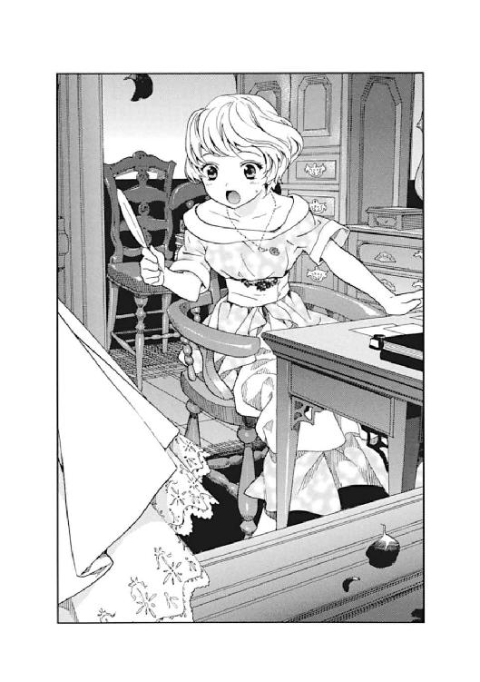
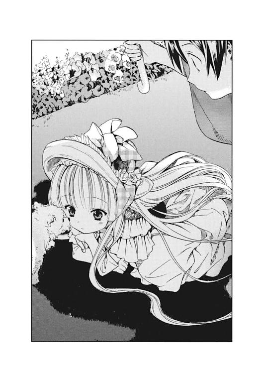
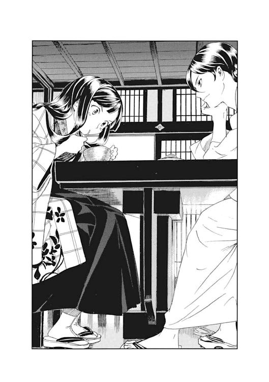
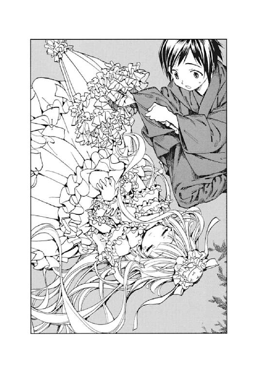

| GOSICKs 02 夏から遠ざかる列車 | |
| 桜庭一樹 | |
| KADOKAWA / 角川書店 (2012) | |
GOSICKs Ⅱ
─ゴシックエス・夏から遠ざかる列車─
桜庭一樹

角川ビーンズ文庫
本作品の全部または一部を無断で複製、転載、配信、送信したり、ホームページ上に転載することを禁止します。また、本作品の内容を無断で改変、改ざん等を行うことも禁止します。
本作品購入時にご承諾いただいた規約により、有償・無償にかかわらず本作品を第三者に譲渡することはできません。
本作品を示すサムネイルなどのイメージ画像は、再ダウンロード時に予告なく変更される場合があります。
本作品は縦書きでレイアウトされています。
また、ご覧になるリーディングシステムにより、表示の差が認められることがあります。
口絵・本文イラスト／武田日向
仔馬のパズルイラスト／中島鮦
お姫さまは、ずっと上のほうにかがやいているお日さまに似た、バラのように赤い花と、それから、美しい大理石の、たった一つの像だけを、だいじにしていました。その像というのは、すきとおるように白い大理石にほった、美しい少年の像で、あるとき、難破した船から、海の底へしずんできたものだったのです。
お姫さまは、この像のそばに、バラのように赤いシダレヤナギをうえました。
──「人魚の姫」アンデルセン
矢崎源九郎訳 新潮文庫刊
プロローグ
ここ数百年余、ずっとそうだったように──
今年もまた、ソヴュール王国が誇る貴族の子弟のための学園、聖マルグリット学園の広大な敷地に、ゆっくりと夏がやってきた。
湿った、白い日射しに照らされる、ヨーロッパの夏。
芝生は青々と茂り、噴水はとろとろと、溶けていく氷の柱のようにたゆたい、花壇の花々はいまが盛りと咲き誇っている。
そして、夏期休暇に入った学園の、コの字形をした巨大な校舎からも、豪奢な造りの寮からも、生徒たちの姿が一斉に消える。貴族にふさわしい夏の過ごし方──思い思いのバカンスで、羽をのばすために。
夏休みの一日目。
人気のなくなった学園に、まぶしい日射しが降り注ぐ。
森から栗鼠が走り出し、東屋に駆け上る。
そして──。
敷地の隅にある石造りの荘厳な建物、聖マルグリット大図書館には、いつものように、ひとりの、謎めいた、ちいさな少女が座っている。
フリルとレースの、豪奢なドレスに身を包み。書物を片手に、どこか不機嫌そうにほっぺたをふくらませ。その薔薇色の頰。深い緑色をした、宝石を埋めこんだかのような瞳。しどけなくほどけて流れる絹糸の束の如き、長い金髪。
少女──ヴィクトリカ・ド・ブロワは、誰もいなくなったこの歴史ある学園に、たった一人残されて、長い夏を過ごす......はずだった。
少女は、少年を引き止める方法を、そばにいてほしいと伝える言葉を、ひとつも知らなかったから。だから、独りぼっちで夏を迎えるはずだった。
時は、一九二四年──。
フランスとイタリアとスイスに国境を隣接する、西欧の小国、ソヴュール王国。その細長い形状の国土の、リヨン湾に面した港町を玄関とするなら、スイスとの国境をそばにもつアルプス山脈の麓は、国土は小規模だが強大な力をもつ〝西欧の小さな巨人〟にとっての、秘密の屋根裏部屋といえた。その山麓にひっそりと建つ、秘密めいた学園。もう四百年余も続く歴史ある学園にやってきた、ひときわ暑い、静かな夏。
夏休み一日目の、朝。
少年もまた、寮を出て、庭園の青々とした芝生を走り出す。
その金色の少女に会うために。
「たいへんだ。ヴィクトリカ......！ ヴィクトリカに会わなくっちゃ!?」
かくして、二人だけの長い夏休みが始まった。
第一話 仔馬のパズル
１
日射しの眩しい、夏の朝。
聖マルグリット学園──。
コの字形をした巨大な校舎は、昨日までならすべての教室に制服姿の生徒たちが並び、廊下を教師たちが忙しく歩き過ぎていたのだが......今朝は、高い天井に梁を巡らせた廊下も、ステンドグラスが輝く講堂も、どこも人気がなく、静寂の中に昨日までの喧噪の名残をとどめるのみだった。
夏休みの一日目の朝──。
校舎から消えた生徒たちは、思い思いの洒落たシャツにブーツ、大人びたドレスを身にまとい、時間がくると一斉に寮から飛び出してきた。どの顔もこれから始まる二ヶ月という長い長い夏休みに思いを巡らし、悦びと期待にぴかぴか輝いている。
どこまでも高い青空から降り注ぐ、夏の日射し。きらきら光ってはこぼれ落ちていく噴水の水。生徒たちは重たいはずのスーツケースを引っ張ってそんな敷地を横切り、我先にと聖マルグリット学園の正門に向かっていく。それぞれが、夏休みの計画について早口で自慢しながら。
貴族の子弟たちは皆、家族と合流して豪華な休日を過ごすのだ。村に一つだけあるはずの小さな駅舎に、数分後にはこの生徒たちが一斉に押しかけ、列車に乗り込むはずだった。
騒々しく、楽しげなざわめきから遠く、寮の自分の部屋に静かに座っている少年がいた。
久城一弥。
彼はさっきから、自室のマホガニー製の机に向かって、教科書とノートを広げ、いつものように勉強しようと努力していた。
そうはいっても、窓の外から聞こえてくる楽しそうなざわめきが、どうしても気になってしまう。
（夏休み、か......。どこかに出かける計画があればよかったんだけどな。でも、国に帰るには時間も旅費もかかりすぎるし、学園に残るしかない。......丸々二ヶ月かぁ。長いなぁ）
知らず、はぁ......とため息をついたとき、部屋のフランス窓になにかがコツンと当たる音がした。顔を上げた一弥が、なんだろうと首をかしげていると、もう一度なにかが、今度はもう少し強めに当たった。
──小石だ。
一弥は窓を開けて、外を見た。
二階にある一弥の部屋を見上げている少女がいた。一弥が顔を出すと、うれしそうにぱっと顔を輝かせる。
短めにカットした金髪に、楽しそうにくるくるとよく動く、大きな青い瞳。細くて長い、のびやかな手足を持て余すように、傍らに置いたスーツケースに腰掛けている。
──アブリル・ブラッドリーだ。数ヶ月前にイギリスからやってきた留学生で、一弥とはいくつかの事件を通して仲良くなった。彼女は一弥に向かって元気よく手を振り回しながら、
「久城くん、夏休みの予定は？」
「......な、ないよ？」
「わたしと一緒に、地中海に行かない？」
一弥はきょとんとして、首をかしげた。
「地中海って、あの地中海？」
アブリルは元気よくうなずいた。眩しそうに目を細め、手のひらで日射しをさけながらこちらを見上げて、
「うん！ あのね、わたしのおばあちゃん──冒険家サー・ブラッドリー夫人よ──が、地中海の避暑地に小さいけど居心地のいい別荘を持ってるの。わたし、イギリスの自宅に戻る前に一ヶ月、おばあちゃんと一緒に海でバカンスすることになったの。友達も連れてきていいって。ただし、礼儀正しい子をね。だから......」
「ぼくを？」
「礼儀正しいといえば久城くんだし、だから、その......」
アブリルは急に赤くなって、ちょっともじもじした。
それから一弥を見上げて、心配そうに眉をひそめた。
「地中海、か......」
一弥は遠い目になって、思わず考え込んだ。
黄色い日射し。白い砂。日に焼けた、けだるげな人々。新鮮な魚や貝があふれる食卓。
そして、どこまでも青い夏の海──。
一弥の顔がぱっと輝いた。
「ありがとう、アブリル。ぼくも行くよ！」
「ほんと!?」
アブリルもうれしそうににこにこした。両手を振り回して、長い足でぴょんぴょん跳ねて、
「じゃ、午後の列車に乗るから、お昼までに荷造りしてね。あとで正門のところで待ってるから！」
「うん！」
一弥もうきうきしてアブリルに手を振り返すと、さっそく荷造りに取りかかろうと室内に走って戻った。
生真面目な様子で、必要な教科書、着替えの数々、水着、などと荷物をよりわけていると、トントン......とドアをノックする音が聞こえてきた。一弥は顔を上げて、
「開いて、ま、す......」
言い終わる前に、ドアが勝手に、勢いよく開いた。
赤毛の色っぽい寮母さんが立っていた。夏休み一日目だからか、いつも腰に巻いているエプロンは今日はなくて、ボディラインがくっきり出る、髪に合わせた赤いワンピース姿だった。一弥は赤くなって、なんですか、と聞こうとした。
寮母さんはやたらきょろきょろと一弥の部屋を見回しているばかりで、なにも言おうとしない。
「あの、寮母さん......。ぼくの部屋でオリエンタルな服や小物を探すの、やめてくださいよ......」
「えへへー。だって、この部屋から失敬した服や小物、評判いいんだもの」
「失敬......？ ぼくからすると、強奪のほうが近くて......あの、で、なんでしょうか？」
ベッドの上に積み上げられた荷物につかつか近づいて、勝手に物色中だった寮母さんは、一弥の声に我に返って、
「ええと、なにか用があってきたわけよ」
「はぁ......」
「忘れちゃったなぁ......。あっ、思い出した！ て、が、み！」
寮母さんは無造作に胸の谷間に手を突っ込んでなにやら探していたが「あれ、ここじゃない......」とつぶやいて胸ポケットや腰ポケットを探し出した。あげくに「持ってこなかった！」と言うと一度部屋を出ていき、一弥が荷造りをだいぶ終え、寮母さんのことを忘れた頃になって、ぱたぱたと戻ってきた。
「はい、これ！」
差しだされたのは、手紙だった。一弥の国から届いた家族からの手紙だ。
「郵便局に行ったら、久城くん宛の手紙もあったから、預かってきたの。じゃ、渡したからね」
「あ、ありがとうございます......」
「いいってことよ」
妙な返事をして手を振ると、寮母さんはドアを閉めて出ていった。
荷造りを終了した一弥は、壁掛け時計を見た。お昼まではまだだいぶある。
それから、届いた手紙の差出人を見た。
「......あ!?」
一弥の眉がぴくっと動いた。
それから、スーツケースはそのままに、あわてて寮の部屋を飛び出していった。
「たいへんだ！ ヴィ、ヴィクトリカ......！ ヴィクトリカに会わなくっちゃ!?」
２
聖マルグリット大図書館──。
七百年以上もの悠久の時を、その灰色の石壁に深く刻んだ、誇り高き〝欧州の知の殿堂〟。無数の蔦がからまり、夏の空の下に巨大な角筒形の影のように広がっている。
乳鋲を打った革張りのスイングドアを勢いよく開けて、小柄な東洋人の少年──久城一弥が図書館に飛び込んできた。
広々としたホール。遥か上の天井まで、四方すべての壁を覆う巨大書棚。天井には荘厳な宗教画が描かれている。
遥か上の植物園まで続く、細い木でできた迷路階段を、今日もまた一弥は、一心不乱に上り始めた。
上っている。
......上っている。
まだ、上っている。
──十分ほどが経って、ようやく一弥は、ぜぇぜぇ、はぁはぁ言いながら階段のいちばん上の段から足を離した。そしてそこに広がる、南国の木々や毒々しい大きな花、そして床に散らばる書物の山──いつもの植物園に足を踏み入れた。
「ヴィクトリカ！」
「....................................ぅ？」
かすかに、彼女が返事らしきものをしてくれたらしい、低いうめき声がした。一弥はうれしくなって知らずにこにこした。
（初めの頃......春には、ヴィクトリカはぼくが近づいて声をかけても、興味がなさそうに知らんぷりばかりしてたんだよなぁ。最近、返事らしきうめき声みたいなのが返ってくる率が高いな。へへへ......）
植物園の奥に足を踏み入れてみる。
まるで童話の主人公が道にパンを落とすように、今日の彼女は、開いた書物を散らばしながら奥に移動していったようだった。書物を辿って、普段は足を踏み入れない植物園の奥の奥に入っていくと、ヴィクトリカは今日は、おおきな木の枝に座りこんで、開いた書物に顔を突っ込んでいた。
腰の後ろでビロードの大きなリボンを蝶々結びにした、淡い紫色のドレス。まるで、めずらしい南国の鳥が枝に止まっているようだ。地面に向かって垂れ下がる見事な金色の髪が、波打ちながら、ときどき気まぐれに揺れている。
「......なんだね、久城」
「君、覚えてるかどうかわからないけどさ」
一弥は地面からひょいっと飛び上がって、小柄ゆえの身軽さで、ヴィクトリカの止まっている枝のとなりに座った。ヴィクトリカはちょっとだけ眉をひそめて、抗議するように一弥をじろりと見た。薄いエメラルドグリーンの瞳がひんやりと瞬く。
一弥は胸ポケットから手紙を取りだして、いそいそと、
「春に、ぼくたちがまだ出会ったばっかりだった頃、ぼくの兄さんに謎かけをしただろう？ 五分以内に解きたまえ、って」
「〈仔馬のパズル〉、か」
ヴィクトリカは老女のようにしわがれた声で返事をした。それからじつに憎たらしい勝ち誇ったような表情を浮かべた。
「......どうやら、五分以上経ったようだがね」
「船便だから、仕方ないだろ。とにかくついさっき、兄さんからの返事が届いたんだ。一緒に開けてみようよ」
「......フン」
ヴィクトリカは興味なさそうに鼻を鳴らした。
一弥はそれには構わず、いそいそと手紙を開いた。次兄からの返事は、どうやら英語で書くことをあきらめたらしく、一弥の国の言葉で書かれていた。一枚目には、謎かけの答えらしき図形があった。
一弥は感心したようにうめいた。
「......なるほどねぇ！ わかったよ。へぇぇ、これこそ発想の転換ってやつだね。おもしろいなぁ。君も、次兄も」
ヴィクトリカは次兄の答えに興味を示すことなく、知らんぷりして書物を読み続けていた。
「なになに、伝言が書いてあるよ。ええと......『こんなの簡単でちゅよ、三分で解けまちたよ～、と、その小さな女の子に伝えてくれたまえ』だって。むーん、おかしいなぁ。次兄も、あとこないだ着物を送ってくれた姉も、君のことを小さな子供だと勘違いしてるみたいなんだ。ま、君は確かに子供っぽい人だけどね。......いってぇ!? 蹴飛ばすなよ、枝から落っこちちゃうだろ!?」
「......フン！」
「あ、便せんの隅になにか書いてあるよ」
一弥は、隅っこにこっそり走り書きされたらしいメッセージをみつけて、ヴィクトリカに読んできかせた。それは姉の筆跡で、次兄のことを『お兄さまはパズルのことで悩んで、夜もお馬さんの夢を見て魘されてて、わたしが起こしてあげたのよ？ それで結局わからなくて、母校である大學まで行きましてね。数学の教授に泣きついて、解いてもらったのよぅ』と告げ口していた......。
ヴィクトリカはそれを聞くと、くすっと笑った。
一弥もつられて、ちょっと笑った。手紙をしまおうとして、もう一枚、便せんがあるのに気づいた。なんだろうと思って開いてみると、それには大きく『挑戦いたす』と書いてあった。
一弥のあきれ顔に、ヴィクトリカが顔を上げて、
「どうかしたのかね？」
「あ、いや......。ここにも一人、負けず嫌いがいたなぁと思い出してさ。どうやら次兄は君に挑戦したいようだけど、受けるかい？ それともほうっておく？」
ヴィクトリカの眉がぴくんと動いた。
「もちろん受けるとも」
「......そうですか、そうですか。じゃ、読むよ」
一弥は気乗りしない様子でだが、背筋をきちんとのばし、便せんを胸の高さまで持ち上げると朗読し始めた。
「ええと『太郎冠者と次郎冠者と三郎冠者が山に行った』」
「待て、待て待て！」
ヴィクトリカに遮られた。
「......なんだよ？」
「その名前はいったいなんだ？」
「わかったよ。じゃ、そこはぼくがアレンジするってば。『ジャンとフィルとピエールが山に行った』」
ヴィクトリカは満足そうにうなずいた。
「君、それでいい」
「はいはい。『三人は三本の丸太を一度に持って山を下りるようにと、殿──いや、伯爵──に命じられていた。しかし一人で一本ずつ持とうとすると重くて無理なのだった』」
「非力なやつらだな」
「君が言うなってば......。『そこでピエールが思い出したのは、伯爵が〝三人で二本ずつ持って下りてこい〟と命じていたことだ。そこで三人は言われたとおりにして、無事に丸太を持って山から下りた』......こういうお話。三人は果たしてどうやったのか、が問題みたいだよ。なになに......『二分以内に解いてくだちゃいね。二分過ぎたらお尻ペンペンでちゅよ？』......兄さんたら、なんだか気味が悪いなぁ。さて、二分計らなくちゃね、ヴィクトリカ。......なに、なんだよ？ それっていったいなんの真似だい？」
一弥が便せんから顔を上げると、ヴィクトリカは書物を膝に置いたまま、両手の親指と人差し指を使って、三角形のマークをつくり、一生懸命一弥に見せていた。
ほっぺたが興奮で真っ赤になっている。
「な、なんだい？」
「解けた！ 解けたぞ！ 一瞬だ。一秒弱だ。わたしの〝知恵の泉〟に不可能はないということだ。この世の混沌の欠片を呼び覚まし再構成させ......」
「ちょっと待ってよ。その三角はいったいなぁに？」
ヴィクトリカはびっくりしたように一弥の顔をみつめ返した。それからほっぺたをぷくっとふくらませた。
「なんだよ......？」
「いいかね、久城。君のようなじつにつまらん凡人でおそろしいほど頭脳がたりなくてそのうえ死神でもあるようなやつにだが、親切にも教えてやろう」
「悪かったね!? なんだよ、もう。はやく言ってよ！」
「むぅ!?」
ヴィクトリカは不満そうに一弥を睨んだが、気を取り直したようにまた両手の指で三角形をつくって、
「こうやってだね、三角形の形に丸太を置くのだ。そしてその角にジャンとフィルとピエールが立つ。それぞれが右手と左手に一本ずつ持って持ち上げる。そうすると〝三人で二本ずつ〟丸太を持つことになる。そうやって彼らは山を下りたのだ」
「へぇぇ！」
一弥は感心したようにうなずいた。
「なるほどね......！」
「一秒で解いたとちゃんと兄貴に伝えたまえよ。それから......」
ヴィクトリカは薄く笑った。
風が吹いた。
木の葉が大きく揺れて、カサカサッ......と音を立てた。
天窓から、夏の眩しい空が覗いていた。日射しが眩しかった。
と──、
さくらんぼのようなつやつやの唇をとがらせて、ヴィクトリカがうそぶいた。
「数学の教授にもよろしく、と伝えてくれたまえ」
植物園の奥の奥には、大きな天窓が外に向かって開かれていた。乾いた夏の風が吹いてきて、ヴィクトリカの腰に結ばれた紫色のビロードリボンをふわふわと揺らしていった。
見事な金色の髪も、時折舞い上がっては揺れている。
下界の喧噪もここには遠く、昨日までの......夏休みになる前の時間と変わらぬ、静寂と、倦怠と、硬い知性が漂っている。
──一弥は「そうだ！」とポンと手を打って、木の枝から勢いよく飛び降りた。
「そろそろ行かなくっちゃ」
「......君、どこかに行くのかね？」
枝の上から、ちょっとだけ寂しそうな、少女の声が降り落ちてきた。一弥はうなずいてヴィクトリカのほうを振り向いた。
「えっと、その......」
「なんだね？」
ヴィクトリカは、表情の浮かぶことのない、透き通って冷酷めいたエメラルドグリーンの瞳をけぶらせて、こちらを見下ろしていた。一弥は少し戸惑って、
「今日から夏休みなんだよ、ヴィクトリカ。えっと、君は、その......」
「わたしはずっとここにいるのだ」
ヴィクトリカは抑揚のない声でそう答えた。
ドレスに合わせたパープルのレースアップシューズを履いた小さな足を、ぷらぷらと揺らしている。
「ずっと......」
まるで枝に止まった不思議な鳥のように、小首をかしげてきょとんとした様子で一弥を見下ろしている。
それから退屈そうな、ちょっと寂しそうなしわがれ声で、つぶやいた。
「久城、君は、どこに行くのだね」
「ぼ、ぼく？」
一弥は頭をかいた。
また風が吹いた。ヴィクトリカの長い金色の髪と、一弥の短い黒髪を揺らしていく。
「あのね、ヴィクトリカ。ぼくは、ね......」
３
そして、お昼になった頃──。
学園の生徒たちはみんな、午前中のうちに我先にと飛び出していき、聖マルグリット学園の広大な敷地に広がるフランス式庭園には、見事なぐらい人気がなくなっていた。
澄んだ青空が、まるで敷地を取り巻く青い幕のようにどこまでも広がっている。入道雲が遠くにほの白く浮かんでいる。日射しはさっきより強くなって、じりじりと庭園を焼き尽くそうとしているようだった。
その庭園の、外への出口である巨大な正門。唐草模様に似た複雑な模様を形作る鉄柵にもたれて、アブリル・ブラッドリーが誰かを待っていた。大きなスーツケースに腰掛けて、いかにも手持ちぶさたな様子で首を右に、左に振っている。
「遅い、なぁ......」
つまらなそうな顔をして立ち上がると、強い日射しに少し顔をしかめ、傍らのスーツケースをコツン、コツンと蹴り始めた。
それからぱっと顔を上げた。
「あっ、きた！......あ、あれれ？」
アブリルは、ずっと待っていた少年が小径の向こうから駆けてくるのに気づいて、まず、うれしそうに顔を輝かせた。そして、その少年──久城一弥がなぜか手ぶらで、スーツケースを持っていないことに気づくと、あれれ？ と首をかしげた。
「久城くん、荷物は？」
「はぁ、はぁ、はぁ......アブリル......」
一弥はまっすぐに正門まで走ってくると、アブリルの前に立ってぴしっと背筋をのばした。そしてびっくりしているアブリルの前で、腰を九十度しっかり曲げて、深々と頭を下げた。
「なぁに、そのオリエンタルなポーズ!?」
「ごめん、アブリル！」
「あ......」
一弥は頭を上げると、
「ぼくを誘ってくれて、すごくうれしかったんだ。夏休みの予定なんてもちろんなくて、つまらないなと思ってたからさ。それに......。でも！」
「............わかった」
アブリルはぷくっとほっぺたをふくらませて、うなずいた。
それから顔を上げて、正門からは遠く......花壇や小径や東屋、噴水、そして大きな校舎......その向こうにかすかに見える、図書館塔の灰色の石壁を見た。
庭園を取り巻く青い幕のような夏の空も、眩しい日射しも、とろとろと溶けていく氷のような噴水の水柱も、なにも関係なく、いつものように冷え冷えと、地面に大きな影を落として──。
あの灰色の塔は今日も静かに、ただそこにあった。
アブリルは唇を嚙んだ。
一弥が心配そうに、
「ごめんよ、アブリル......」
「う、ううん。いいの」
アブリルはそう言うと、スーツケースをうんしょと持ち上げた。
「地中海から、葉書を出すね」
「う、うん......」
「久城くんのばーか、こっちはこんなに楽しいぞー、って」
「あ......」
「へへ、冗談だってば。じゃ、夏休みが終わったら、またね」
一弥はアブリルの後ろ姿を正門の内側に立ってじっと見送った。
すらりとして健康的な体と、長くてしなやかな手足。金色のショートカットの頭は、駅舎に向かってゆっくりと遠ざかっていった。
夏の日射しが照りつけている。
地中海の黄色い太陽に負けないぐらいの強い日射しだった。焼けた芝生が青々と輝いていた。立ち尽くす一弥の影は短かかった。やがてアブリルは一度だけ振り向いて、名残惜しそうに手を振ると、姿を消した。
乾いた風が吹く。
一弥はふっと吐息をついた。
それからくるりと向き直り、小径を歩きだした。
学園の中。
ほとんどの生徒がいなくなった、夏の廃屋のような其処へ──。
それが──。
ヴィクトリカと一弥の、二人っきりの、長い夏休みの最初の一日だった──。
〈fin〉
作中のパズルは、サム・ロイド作「仔馬のパズル」を参考にしました。
第二話 花降る亡霊
１
なだらかな傾斜の山間に広がる聖マルグリット学園の敷地にも、ようやくやってきた夏が、白く眩しい日射しを投げかけていた。
夏休みが始まって、数日──。
ほとんどの生徒が学園を後にしたため、広く荘厳な学園は、まるで悠久の時が過ぎ去り生きとし生けるものすべてが消え去ったかのような、しんとした静寂に満たされていた。
時折、敷地の小山から下りてきた栗鼠が、チチチッ......と鳴き声を上げる。
色とりどりに咲き誇る花壇の花が、見る人もいないのに、熱風のような風に揺れている。
東屋の四角い影が、青々とした芝生を黒く染めている。
そこにあるのはただ静寂と、夏の日射し。そして......。
「......あら、あらあらあら」
お昼の少し前──。
テスト用紙らしい紙の束を抱えて、ずり落ちそうな丸眼鏡を気にしながら校舎を出てきた小柄な女の人がいた。セシル先生だ。先生はふと足を止めて、目を細めると校舎の向こう、花壇や噴水の向こうになだらかに広がる芝生をみつめた。
「あの二人ったら、また、あんなところにいる」
セシル先生は紙の束をよいしょ、と抱え直すと忙しく歩き出した。芝生の前を通り過ぎるときに、その二人に、
「いつも、仲がいいわねぇ」
声をかけてみる。
言われた二人......のうちの一人、直立不動で立っていた小柄な東洋人の少年が、彼のトレードマークになりつつあるいかにも生真面目そうな顔で、はい、とうなずいた。休暇中なので今日は制服を着ておらず、彼の生まれ育った国の普段着らしい、藍色に染められたオリエンタルな着物を着て、黒い帯を締め、下駄を履いている。頭にはいつもの山高帽を被り、その服装や、いかにも堅物そうな顔つきとはかなり相反する、とあるもの──ひらひらとフリルでいっぱいのピンクの日傘──を片手で握りしめて、掲げている。
セシル先生は垂れ目がちの大きな瞳を細めて、そんな日本からの留学生、久城一弥と、彼がフリルの日傘でつくった芝生の上のまんまるい影のところに転がっている、とあるものをみつめた。それから、うんうんとうなずいて、
「じゃ、久城くん、その子をよろしくね」
「はい！」
セシル先生の声に、一弥はまた、生真面目そうに姿勢を正し、返事をした......。
「ねぇ～......ヴィクトリカ。ヴィクトリカったら。ぼく、いま、セシル先生から君のことをお願いされちゃったよ。うむ、まぁ、お願いされたからには、なんとかしなくっちゃとは思っていますけどね。......君、聞いてるかい？ ねぇ、ヴィクトリカったら」
忙しく歩き過ぎていくセシル先生をぴしっと見送った後、一転して、一弥は気弱そうな声を上げた。
ほとんど誰もいない聖マルグリット学園の、広大な敷地の一角。芝生の上に直立不動で立ったまま、一弥は、日傘で足元につくったまん丸い影の真ん中にうつぶせに転がっている、フリルとレースでふかふかとした小さな美しい友達を、困ったように見下ろしている。
──〝知恵の泉〟にして〝欧州最後にして最大の力〟の頭脳を持つはずの少女、ヴィクトリカ・ド・ブロワは、さっきからずっと、芝生に転がったまま身動きもしない。
ほどけたビロードのターバンのような、波打つ見事な金髪を芝生に散らし、白い薄絹と黒のレースを編み込んだ豪奢なフリルのドレスに身を包んでいる。同じ白と黒のヘッドドレスが、小さな頭を優しく包んでいる......。
もしや、知らないあいだにお昼寝しているのでは、と心配になった一弥がそうっと覗き込むと、豪奢なドレスを着たヴィクトリカは、薔薇色のほっぺたをぷくっとふくらませ、その永きを生きた老人のようにけぶる緑の瞳を、光る翡翠の玉の如く呆然と見開いていた。
「......なんだ、起きてたの」
「久城......。うるさい......」
「き、君ねぇ。それは聞き捨てならないな。ぼくはさっきから、ここでばかみたいに倒れて退屈がってる君のために、こうやって日傘を掲げて立っているんだよ？ ぼくのほうが暑さで先にまいっちゃうよ。ねぇ、ヴィクトリカ......」
「あぁ......」
ヴィクトリカはうつぶせに倒れたままで、不満そうに、さくらんぼのような小さな唇を尖らせた。
「じつに退屈だよ、君」
「......そりゃ、そうだろうね」
「本を読む気にもならん」
「暑いからだろ。それなのにどうしてこんな、いちばん暑いところにいるのさ。君ってほんとに、不条理な人だよなぁ！」
一弥がそう言うと、ヴィクトリカはかすかに「......う？」と返事をした。それからゆっくり、ころん、と右に転がってあおむけになった。日傘のまん丸い影から出てしまったので、一弥はあわてて着物の裾を揺らして走り、ヴィクトリカにフリルの日傘をかざした。
それに気づくと、ヴィクトリカは小さな顔をしかめて、いかにも不機嫌そうにフンと鼻を鳴らした。それから一弥の足元をじろりと見て、
「......おかしな靴だなぁ！」
「下駄だよ。夏はこれがいちばんなんだ。君も履くかい？」
「そんな、薪みたいな靴が履けるものか」
ヴィクトリカは言い放つと、また反対側にごろんと転がって、うつぶせになった。一弥があわてて日傘を掲げて、ばたばたと後を追う。二人は広い芝生の上を、ごろん、ばたばた、ごろん、ばたばた、としばらく怠惰な追いかけっこを続けていたが、やがてあきたらしく、止まった。
夏の熱い、乾いた風が吹いて、一弥の黒髪を揺らしていく。
どこかで花や葉がかすかにかさりと音を立てている。
白い噴水が、まるで熱風にとろとろと溶けていく氷の柱のように、ゆっくりと水を流し続けている。
静かな夏──。
「そういえば、ヴィクトリカ」
「..................う？」
「君ったら、なんだかやる気のない返事だなぁ！ そんなことより、ぼくが今日、君を捜して走り回ってたのはね......」
夏休みになって数日後の今日、一弥は朝から、例によってヴィクトリカを捜していたのだ......。
片手で日傘を持ったまま、袂に手を入れて、封筒を取り出す。ヴィクトリカは倒れ伏したまま、興味深そうにそれを見上げて、
「おかしなポケットだなぁ、久城！ まぁ、じつに君らしいとも言えるがね」
「ほっとけよ。......それより、屁こきいも......しまった、ちがう。アブリル、アブリルだよ。あぁ、もう、君につられちゃったじゃないか......。アブリル・ブラッドリーから手紙が届いたんだよ。あのね、彼女は夏休みに、地中海沿いの避暑地にあるおばあちゃんの別荘に遊びに行ったらしいんだ。そこでね......」
一弥は少し早口で、努めて明るく話した。
本当は一弥自身も、アブリル・ブラッドリーに誘われて同行するはずだったのだが......この小さくて孤独な灰色狼である友達、ヴィクトリカ・ド・ブロワを一人、学園に置いてきぼりにすることができず、葛藤の末に、彼女とともに人気のない学園に残ることに決めたのだ。
「......そこでね、おかしな事件が頻発してるんだって。どうもアブリルの手紙はよくわからないんだけど、少なくとも君の大好物である謎だということに変わりはないからね。どうだい、興味出たかな？」
「..................う」
ヴィクトリカがかすかに返事をした。相変わらずうつぶせで、昼寝中の白い猫のように身動き一つせず、いかにもけだるげにだが、
「怪談好きが騒ぐおかしな事件などというものからは、どうにもくだらん、煩悩の匂いがぷんぷんするがね」
「うーん......」
「だが、まぁ、このまま退屈でい続けるよりはましというものだ」
「ほんと!?」
「ああ。......まぁ、とりあえず読んでみたまえよ、君」
一弥はほっとしたようにうなずくと、背筋をぴんっと伸ばした。そして片手でフリルの日傘をかざし、もう片方の手で手紙を掲げると、朗々とした声で読み始めた......。
「『久城くん、ボンジョルノ！』」
「なんだ、それは？」
「だって、そう書いてあるんだよ。ええと、『......わたしはいま、地中海に向かう列車の中でこの手紙を書いています。さっきまで〈怪談 二巻〉を読んでいたんだけど......』」
「ううむ......」
「『もう読み終わっちゃって、退屈してるところなの。それでね......』」
２
アブリル・ブラッドリーが列車に乗り、地中海沿いのその町に着いたのは、一弥が手紙を読んでいる日の、数日前。夏休み一日目の夕刻のことだった──。
潮の匂いと、乾いた砂。高い青い空と、どこまでも続く海岸線。白い砂浜にはパラソルとデッキチェアが溢れかえり、小麦色に焼けた肌に汗を浮かべた避暑客たちが、つやつやした肢体で解放的に歩き回っていた。
砂交じりの乾いた風に乗って、小麦色の肌から立ち上るサンオイルの甘い匂いが、潮の香りとともに強烈に漂っている。
細い石畳の道を、蹄を鳴らす驢馬に引かれた屋根なしの馬車に揺られて、アブリルは浮き浮きと、亡き祖父の別荘に向かっていた。もちろん、学園に置いてきてしまったあの仲良しの少年のことがいまだ、気になってはいたが......。
「おばーちゃーん！ きたよー！」
古いけれども手入れのよく行き届いた、四角い二階建ての家の前で、アブリルは大きく手を振った。二階の窓から手を振り返す老婦人に気づくと、馬車から飛び降りて、大喜びで走り出した。
とたんに、色とりどりの花を溢れさせた小さな荷車を引く少年にぶつかって、転んでしまった。アブリルの荷物が四散して、道路に散らばる。様子を見ていた避暑客の大人たちがくすくす笑うので、アブリルは恥ずかしさで思わず顔を赤くした。
と、ぶつかった当人の花売り──同い年ぐらいらしいイタリア系の少年が、あわててアブリルの荷物を全部拾ってくれ、ついで、アブリルの手を引っ張って起こしてくれた。
「あ、ありがとう」
少年はじーっとアブリルの顔をみつめると、なぜか急に、怒ったような顔をした。そして早口でなにか言いだしたが、アブリルにはイタリア語がわからないので、きょとんと首をかしげてみつめかえした。
すると少年は、今度は悲しそうな顔をした。それから、売り物の花の中から小さな赤い花束を引っつかむと、アブリルに向かって、なぜか乱暴に投げつけた。
「きゃっ？」
少年は二、三歩下がって、睨むようにじいっとみつめている。アブリルはとまどって、
「これ、くれるの？」
少年と、赤い花束を見比べて首をかしげていると、別荘から老婦人が出てきた。祖母だ。アブリルは少年にもう一度「あの......ありがとう！」と言うと、スーツケースを抱えて、別荘に向かって走り出した。
「あぁ、その子なら、ミッチだよ」
別荘の中を探検し、楽しそうに夏休みの計画を話しまくった後でようやく落ち着いて座って紅茶を飲み始めた孫娘を前に、サー・ブラッドリーの未亡人はそう言った。
アブリルがクッキーをかじりながら、聞き返す。
「ミッチ？」
祖母はうなずいた。銀髪をきゅっと後ろでまとめた、背が高くてとても姿勢のよい老婦人で、顔には年相応のしわが刻まれているものの、孫娘とよく似た青い瞳は、いたずら好きの少女のころそのままのように、きょろきょろとよく動く。
「この辺りに住んでるイタリア人夫婦の息子だよ。夏になると花売りのアルバイトをしているね。毎年、夏に会うけど、わたしも言葉が通じないから、話したことはないよ」
「ふーん......」
「花束をくれるなんて、おまえのことが気に入ったんだねぇ」
「でも、睨んでたよ？」
「じゃ、気に入らないのかねぇ」
「おばあちゃん、どっち!?」
祖母は、怒り出した孫娘の顔を見るとくすくすと笑った。それから、ちょっと真面目な顔になって、
「ミッチのことはいいけど、それよりおまえ、フラニー・ブラッドリーを覚えてるかい？」
「フラニー？ ううん。誰？」
「おまえの従姉妹だよ。といっても、小さいころに一度会ったぐらいだから、覚えてないとしても仕方ないね。おまえより二つ、三つ上でね、あの子もこの別荘に遊びにきたいって言うから、おいでなさいって言ったのさ。おまえと年も近いし、仲良くなれるだろうってね。ところがだよ。フラニーはおまえのこと、嫌いらしいんだよ」
「ど、どうして!?」
「それが、どうやら〈ペニー・ブラック〉の一件のせいらしいよ」
アブリルの顔が曇った。
〈ペニー・ブラック〉とは、冒険家サー・ブラッドリーが孫のアブリルに残してくれた遺産で、アブリルは大好きな祖父の思い出のために、その珍しい切手である〈ペニー・ブラック〉を換金することなく、大切に保管しているのである......。
「あの子ったら、子供のころは素直だったのに、なぜだかすっかりひねた子に育っちまってね。あんたが遺産を独り占めしてる、きっとこの別荘も狙ってるにちがいない、なんて言い出したんだよ。とはいえ、今夜にはフラニーもここに着くから、おまえ、仲良くおし」
「えぇ～」
不満そうなアブリルに、祖母はまたくすくすと笑って、
「大丈夫、きっと、すぐに仲良くなれるよ」
そして、その夜──。
アブリルは自分に割り当てられた二階の小さな部屋で、レターセットを広げて、羽根ペンを片手に、うんうんうなっていた。
便箋には、この町にくる途中、列車の中で書いた出だしの文章があるっきりで、本を読み終わって退屈していることしか書かれていなかった。
「うーん。楽しいことをたくさん書いて、久城くんを悔しがらせたいんだけどなぁ......。いまのところ、なにも起こってないんだよなぁ。こまったな。......んん？」
なにかの気配に気づいたように、アブリルは顔を上げた。
いつのまにか部屋のドアが開いて、金色の髪を短めにカットして、夏の空のような青い瞳をした──アブリルとよく似てきれいな、そして少し年上の女性が立っていた。
「......もしかして、フラニー？」
「じゃ、あんたが天敵のアブリルね」
フラニーはじろじろとアブリルをみつめた。それからとつぜん、
「あんた、ここからすぐに出ていったほうがいいわよ。この別荘には......亡霊が出るの！」
「亡霊!?」
アブリルが甲高く叫んだ。フラニーはその声を、恐怖によるものと誤解したようだ。うれしそうに笑うと、声をさらに低くして脅すように、
「この別荘ではね、アブリル。七年前に人が死んだのよ。貴族の避暑客に玩ばれて捨てられた美しいイタリア娘が、花束を抱いて海に身を投げ、その体がこの別荘に運ばれたの！ でも、女は息を吹き返すことなくここで死んだのよ。以来、花を抱いた白いドレスの、女の、亡、霊、が............きゃあああ～!?」
「きゃあああ～!!」
アブリルがじつにうれしそうに瞳を輝かせ、悲鳴を上げた。フラニーは満足そうに青い瞳を細めると、花束を抱えた白いドレスの亡霊がいかにこの別荘の住人を恐怖に陥れたか、延々と説明し始めた。
──やがてフラニーが、瞳をきらきらさせて「もっと、もっと」と怪談をせがむこの年下の従姉妹の様子に、どうもおかしい、と首をかしげながら退散すると、アブリルは大急ぎでテーブルに戻った。
そして羽根ペンのペン先をなめると、すごい勢いで、手紙の続きを書き始めた。
『久城くん、こっちはすっごく楽しいよ。だってね、この別荘にはなんと、亡霊が出るらしいのよ。それはね......』
そして、アブリルが長々と手紙を書き続けていると......。
音も、なく......、
部屋のドアが、外に向かって、ゆっくりと、開いた。
細い、どこか気味の悪い影法師が、ゆらり、ゆらり、と揺れた気がした。
アブリルが顔を上げ、ドアを見た。でもあまり気にせず、また手紙に視線を落とす。
すると、今度は......。
星空の見える、窓の外。
ふわり、
ふわり、ふわり、と......。
なにかが、青白く輝きながら、通り過ぎた。
熱心に手紙を書き続けているアブリルの手元に、赤い花びらが一枚、ひらひらっと落ちてきて、便箋の上で、止まった。
「ん？」
アブリルは首をかしげた。
それから、ゆっくりと顔を上げた。
窓の外に、白いドレスを着た女がぼんやりと浮かび上がっていた。ひらひら、ひらひら、と花びらが散っている。
アブリルはしばらく、ぼんやりと女をみつめていた。
それから、はっと息を呑んだ。
「こ、ここ、二階!?」

アブリルがあわてて立ち上がり、逃げる......のではなく、窓に向かって突進するのと同時に、女はまた、
ふわり、
ふわり、ふわり......。
おかしな動きで窓の外を通り過ぎ、花びらを散らしながら遠ざかっていった。アブリルは窓枠にくっついて外をきょろきょろしたが......。
誰も、いなかった......。
誰も......。
３
「『誰も......。』だって。手紙に書かれているのはここまでだよ、ヴィクトリカ」
一弥はぴしっと姿勢を正してアブリルからの手紙を読み終わると、ちょっと不満そうな顔で感想を述べた。
「それにしても、このフラニーって人、だめだなぁ。おおかた、怪談でアブリルを脅かして追い出そうとしてるんだと思うけど、アブリルにそんな話をしたら、喜んで、お化けに会うために夜更かしするに決まってるじゃないか」
「............」
返事がないので、ちらりとヴィクトリカの様子を見下ろす。と、ヴィクトリカは聖マルグリット学園の敷地、広大な庭園の芝生の上に、さっきよりさらに脱力して倒れ伏していた。
一弥が心配そうに見守っていると、やがてヴィクトリカは、かすかにぴくっと動いた。それから、見事な長い金髪を揺らしながら、ほんの少しだけ顔を上げた。
不満そうにほっぺをふくらませている。
「じつにくだらん手紙だなぁ、久城！ 君の友達には、まったく、恐れ入るよ」
「ええと、いや、その、面目ない......」
一弥は申し訳なさそうにつぶやいた。
それきり黙ってしまったヴィクトリカの小さなからだの上を、熱風に近い、夏の乾いた風がふわり、と吹きすぎていった。
薄絹とレースを編み込んだドレスの裾が、ふわふわとたなびく。
「久城......」
ヴィクトリカはやがて、老女のようなしわがれ声で、言った。
「そんなくだらん手紙などよりも、もっとすごい謎を持ってくるのだ。そうしないと......」
「そうしないと？」
「君を、ひどい目に遭わせてやる、ぞ......」
なにやら物騒な脅し文句をつぶやきながらも、ヴィクトリカは言葉とは裏腹に、瞳をそっと閉じた。それから物憂げに、はぁ、とため息をついた。
一弥は内心（ひどい目って、なんだろう......？）と首をかしげながらも、仕方なく、フリルの日傘を差し続けていた。脳裏に、尖ってるのや、渦巻いてるのや、いろんなヘアスタイルと化した哀れな自分の姿が浮かんでは、消える......。
夏の風が吹く。
二人は、怠惰な情景が描かれた絵画の中の人物であるかのように、動かない。
昼下がりの芝生には、静寂と、熱気だけが漂っていた......。
４
つぎの日の、朝──。
一弥は男子寮の食堂で、一人、黙々と朝ご飯を食べていた。着物姿で背筋を伸ばし、炒り卵のサンドイッチと、豆のサラダと、新鮮なミルクを口にしている。
食堂の隅で足を組み、くわえ煙草で朝刊を読んでいた赤毛の色っぽい寮母さんが、急に「あらっ......？」と声を上げた。
その声に一弥が顔を上げると、
「ねぇ、久城くんのお友達の、あの女の子。ほら、金髪のショートヘアの」
「アブリル・ブラッドリーですか？ 彼女がなにか？」
「新聞に出てるわよ」
一弥はびっくりして立ち上がった。あわてて寮母さんのもとに近寄って、朝刊の記事を見せてもらう。
〈白いドレスの女の怪！
花の匂いとともに現る、怪現象!?〉
一弥はなにやら叫び声を上げると、朝刊をむさぼり読んだ。顔を上げてなにか言う前に、寮母さんは慣れた調子で、
「いいわよ、あげるわよ。もう読んじゃったし」
「ほんとに？ ありがとうございます！」
一弥は朝食もそこそこに、朝刊を袂にねじ込むと、山高帽を被り、下駄を鳴らして男子寮を飛び出した。
それから一度あわてて戻ってきて、下駄の音を高らかにドンガラドンガラと鳴らして寮の階段を駆け上がり、自分の部屋から、その姿にはあまりにも不似合いな、フリルたっぷりの小さな日傘を持ち出してきて小脇に抱えた。
それから、
「......ヴィクトリカ～！」
いつもの叫び声を上げながら、またドンガラドンガラと下駄を鳴らし、寮を飛び出していった......。
「ヴィクトリカ～............っと、またここにいたのかい？ 君、いまに日射病になっちゃうよ？」
寮を飛び出して聖マルグリット大図書館に向かう途中だった一弥は、図書館よりずっと手前の、昨日と同じ広い芝生の上に、白っぽいフリフリしたものがまん丸くなってじっとしているのをみつけて、急停止した。
「..................う」
白っぽいフリルのかたまりは、今朝もまた怠惰な小さな白猫のように、むくむくとゆっくり動き出した。見事な金色の髪を揺らしながらちょっとだけ顔を上げたヴィクトリカは、
「なんだ、久城。君か」
「そうだよ、ぼくだよ。はい、ヴィクトリカ」
一弥は生真面目な顔をして、フリルの日傘をゆっくり開くと、奇妙な少女の上にかざした。背筋をぴっと伸ばして、直立不動になる。そのまましばらく、二人とも黙っている。
その二人の視線の先を、教科書の束を抱えたセシル先生が歩き過ぎていった。二人に気づいて足を止めると、大きな丸眼鏡の縁に手をやって、不思議そうに首をかしげた。
「デジャ・ヴュかしら？ なぜだか、昨日も見たような気がする光景だわ......」
考え込みながらも、ゆっくり歩き過ぎていく。
夏の日射しが、じりじりと二人を焼いていく。一弥の額から一筋、汗が流れた。しばらく黙っていた一弥は、はっと気づいて、
「そうだ、ヴィクトリカ」
「......なんだね、屁こきいもりの屁こき仲間の久城」
「あのねぇ！......まぁ、いいや。君の毒舌は確かにひどいけど、べつに、いま始まったことじゃないからね。それより、君。どうやらぼくは、昨日の手紙を補足することができそうだよ。この朝刊、寮母さんから譲り受けたんだけど、アブリルの手紙に書かれていた事件の続報らしきものが、なんと、新聞記事になってるんだ。興味あるかい、ヴィクトリカ？」
「ううむ......」
ヴィクトリカはうつぶせに倒れたまま、なぜかちょっと、意地を張っている様子で、
「興味がないの、反対だ」
「......あるって言いなよ。まったく、もう。じゃ、読むよ」
一弥は新聞を読み始めた。
「『──白いドレスの女の怪！
花の匂いとともに現る、怪現象!?──
七月二十五日の夕方、避暑地として知られるこの騒がしくも現代的な町で、奇怪な事件が起こり注目された。事件が起こったのは、著名な冒険家である故サー・ブラッドリーの未亡人が所有する、別荘の一階ホールである......』」
５
さて、その新聞記事になった事件が起こったのは、アブリルが地中海に着いた翌日の、夕方のことだった......。
「おばあちゃーん！」
日暮れ時──。
眩しいサンセットが、サー・ブラッドリーの建てた四角い家を黄色く染めていく。
「ねぇ、おばあちゃん！ っと......」
水玉模様の水着の上から真っ白な上着を羽織って、元気よく別荘の一階ホールに飛び込んだアブリルは、祖母と同じぐらいきちんとした服装──襟元まできっちり覆うブラウスに、くるぶしまでの長いスカート──の老婦人たちに気づいて、あわてて口を閉じた。
上着を引っ張って、一日ですっかり日焼けした足やお腹を隠していると、祖母がにこにこして、孫娘だと紹介し始めた。それから、
「もう一人、孫娘がきているんですけどね。アブリル、フラニーは？」
アブリルは首をかしげた。それから、フラニーを捜しに勢いよく二階への階段を駆け上がった。でも、どの部屋にもフラニーはいない。
しばらくぱたぱた、ぱたぱたとフラニーを捜し回ったアブリルは、一階ホールに向かって、「いないよー」と声をかけてみた。
返事がない。
アブリルはしばらく待って、それから、なんだか不吉な予感がして、階段をそうっと下りてみた。
一歩、一歩。
ここにきてから嗅ぎなれた潮の匂いとはちがう、甘い、でもどこか不穏な匂いが一階に近づくにつれ、増してきた。
（この甘い匂い......なんだろう？ わかった。花だ。花の匂いがするんだわ）
アブリルは次第に早足になった。
（まるで、むせ返るような......）
どんどん早足になり、階段を駆け下りる。
（どうしてこんなに花の匂いがするの？ だって、この家には花なんてないのに!?）
アブリルは階段を駆け下りて、廊下を走り、一階ホールに飛び込んだ。
そして、叫んだ。
「おっ、おばあちゃん！」
ついさっきホールでにこにこしていた老人たちは、全員、ソファに崩れ落ち、ある者は床に座り込み......昏倒していた。アブリルは祖母に駆け寄って、助け起こした。
「どうしたの!? なにがあったの？」
「アブリル......。急に、花の匂いが。それで、みんな......」
祖母はそっと目を開けると、青い瞳を潤ませ、震え声でささやいた......。
結局、老人たちはすぐに意識を取り戻して大事には至らなかったが、花のない部屋に充満した甘い匂いについては、誰も、合理的な説明ができないままとなったのだった......。
６
「『......はてさて、この奇怪な事件の真相究明が急がれるものである』......だって。これで新聞記事は終わりだよ」
読み終わった一弥は、新聞をたたんで、袂にしまった。
それからそうっとしゃがんで、うつぶせに倒れているヴィクトリカの、小さくて、まるで陶器のようにつるつるした白い顔を覗き込んでみた。
「ヴィクトリカ......？」
「..................うむ」
「聞いてるのかい？」
「うむ、一応な」
ヴィクトリカは気のない様子でそう返事をすると、ゆっくり、けだるげに起き上がった。そしていかにも不機嫌そうに、小さな形のいい鼻をフンと鳴らした。
細い腕を伸ばして、うーんと伸びをする。小さな体が意外なほどよく伸びて、しばらくするとまた元に戻った。
「どうだい、ヴィクトリカ？」
「混沌の欠片がまだ足りないな。穴だらけの話ではないかね、久城？」
「そ、そうなの......？ ごめんよ、ヴィクトリカ」
「謝ってすむことではない」
「ええ!? そ、そうなの？」
「もちろんだ。だから久城、君、踊るか歌うかしてわたしに謝罪したまえ」
一弥は日傘を降ろし、歌いだそうとして大きく息を吸い込んだ。それから、じつに理不尽な要求だということにはっと気づいて、口を閉じた。横暴でわがままで感じの悪いヴィクトリカに、今日こそ文句を言ってやろうとしてもう一度、大きく口を開いた、そのとき......。
遠くからなにかが近づいてくる気配がした。
小さな足音と、息の音。
一弥とヴィクトリカが同時に顔を上げてそちらを見ると、かわいらしい犬が一匹、二人に向かって芝生を駆けてくるところだった。
一弥はぽかんとして、どこからかとつぜん現れた犬をみつめた。ヴィクトリカはむくむくとした動きで起き上がると、無表情な、翡翠の如く輝く緑の瞳を細めて、犬を見守った。そして、
「......ふむ、なかなかかわいいな」
しわがれ声でちょっと意外なことを言ったので、一弥はびっくりして、その冷酷めいた小さな横顔を見た。ヴィクトリカはかすかに微笑んでいるように、ほんの少しだけ、表情を変えていた。やがて走って近づいてきた白い犬は、ヴィクトリカに歩み寄って、彼女の小さな形のいい鼻に自分の黒い鼻をくっつけると、フンフンフン......と匂いをかいだ。

それから、ぱたぱたと尻尾を振る。
ヴィクトリカもちょっとうれしそうにした。もし尻尾があれば、ちょっとだけ振ってみせたかもしれない。
白い犬は続いて一弥のほうを見上げると、なぜか一言「がぅっ！」と唸った。それから、もときた方向にまた走り去っていった。眩しい夏の日射しの中、白い毛並みが揺れながら、元気よく遠ざかっていく。
「誰の犬だろ？」
「さてね......」
ヴィクトリカはそれきり興味をなくしたように、またごろんと芝生に横になった。
夏の日射しは今日も、二人をじりじりと照らしている。
長い長い夏休みは始まったばかりで、ヴィクトリカも一弥も、のんびりとただ、芝生の上でくつろいでいる......。
７
さて、それから数日後の、お昼。
聖マルグリット学園に近い、のどかな村。
一弥は、真夏の日射しに赤いゼラニウムが眩しく輝く、村の一角をとことこ歩いていた。装飾の少ない、使い勝手のよい文房具と、簡素な着替えなどを購入して、背筋を伸ばして村道を一人歩いている。
毛足の長い馬が、ぶもぉ～とうなりながら、荷馬車をゆっくりと引き引き、一弥を追い越していく。
村娘たちがくすくす笑いしたり突っつきあったりしながら、雑貨屋さんの前でお喋りに興じていた。その前をすたすたと通り過ぎた一弥は、はっと気づいて足を止めた。
「そうだ。もっと大きな日傘、買おう！」
若い娘たちがたむろしている雑貨屋に、少し遠慮がちにだが足を踏み入れる。そして、大人が三人も四人も入れるほどの大きな日傘を何本かみつけて、生真面目な顔で物色し始めた。そんな一弥の様子に気づいて、村娘の一人が屈託なく声をかけた。
「学生さん、なにかお探し？」
一弥はびっくりして振り返り、それから直立不動になって、
「はい。ええと、大きな日傘を探しています......」
一度言葉を切って、ちょっと考え、
「......なるべく色は白かピンクで、かわいいフリルがついているものを」
「へぇー？」
村娘たちは不思議そうに顔を見合わせたけれど、ちょっと年配の店員の女性にみんなであれこれやつぎばやに説明して、わいわい騒いだあげく、いちばん大きくてフリフリした、真っ白な日傘を選んでくれた。
「あなたが使うの？」
「いえ、その、と、友達が」
若い娘たちたくさんに取り囲まれたので、一弥はちょっと緊張して、硬い声で返事をした。それからお店を出ようとして......、隅においてある小さな木製の、檻みたいなものをみつけた。繊細な装飾が施されていて、周りだけを細い木が囲み、天井は開いている。
「あの、これは？」
店員の女性がため息をついてみせた。
「あぁ、小さな犬とか、猫とかに使うのよ」
「犬？」
「そ。ここから出ちゃだめよって。でも、こんな贅沢品を使うのは、貴族の人たちだけね。試しに置いてみたけど、さっぱり売れなくて」
一弥はちょっと考えて、それからおずおずと、
「あの、これも......」
「えぇ、これ買うの!?」
店員がびっくりしたように聞き返した。
一弥は大きな日傘とへんな檻を抱えて、ぴしっと姿勢を正して雑貨屋を出た。それからまっすぐに聖マルグリット学園に戻ろうとして、ふと気づいて、いつもの小さな郵便局に寄った。
落ち着いて郵便局に入っていき、それから数刻すると、ものすごく大慌てで飛び出してきた。
手には一通の手紙を握りしめている。
「......ヴィ、ヴィクトリカ!?」
一声叫ぶと、一弥はさきほどまでのじいさんのような落ち着きが噓のように、ドンガラドンガラドンガラと下駄の音を響かせて、村道をわき目も振らずに走り出した。
その様子を、雑貨屋さんの前でおしゃべりしながら見送った村娘たちは、顔を見合わせ、不思議そうに首をかしげあった。
「なんだか......複雑な事情のありそうな人ねぇ」
「ミステリアスだわねぇ」
ゼラニウムの真っ赤な花が、夏の乾いた風にあおられてふわふわと揺れる。村道から土埃が舞って、またゆっくりと地面に戻っていく。
荷馬車がゆっくりと通り過ぎていく。
夏は、村のあちこちを日射しでじりじりと焼き、風は熱風となってさわさわと吹いていた。
「ヴィクトリカ～!?......っと、また君ったら、こんなところで！」
聖マルグリット学園の敷地、なだらかな勾配で広がる青々とした芝生の真ん中で、一弥は足を止めると、一言、ぼやいた。
ここ数日間ずっとそうであるように、今日もまた、彼の大切な、小さくてわがままで残酷な友達、ヴィクトリカ・ド・ブロワは、芝生の真ん中に倒れ伏して、右にころころ、左にころころを繰り返していた。
「........................う？」
いかにもやる気のなさそうな返事が、かすかに聞こえた。続いて小さな金色の頭を持ち上げようとして動いた拍子に、ヴィクトリカの白と黒のフリルとレースでおおわれた小さな体は、右にかしいで、そのまま、芝生のなだらかな坂道をころんころんと転がり落ちていった。
勢いがついて止まらなくなったようで、どこまでも、ゆっくりと怠惰に転がり落ちていく。
一弥はあわててドンガラドンガラと追いかけながら、たったいま買ったばかりの檻を持ち上げた。そして、転がっていくヴィクトリカに追いつくと、えいっと彼女の小さな体を檻で捕まえた。
一瞬......幼いころに兄たちに連れていかれた、夏休みの昆虫採集の記憶が脳裏をよぎった。網を振り回して蟬採りをした、あの東洋の島国での、湿った暑い夏の記憶......。
蟬の鳴き声......。
あの国の、湿り、翳った、美しい夏......。
「......おい、久城。貴様、なんのつもりだね？」
死ぬほど機嫌の悪そうな、ヴィクトリカの低いしわがれ声に、一弥ははっと我に返った。檻を使って無事に助けた......はずの小さな友達を見下ろすと、彼女は翡翠のような美しい緑の瞳をきりきりとつりあげ、檻の中で体を起こして、一弥をにらみつけていた。
ずいぶんと久しぶりに、彼女の顔を真正面から見ることができた気がした。一弥がうれしくなってにこにこしていると、
「き、貴様！」
「えっ？ 君から貴様に格下げかい？ 納得できないな。君、いったいどうして怒ってるんだい？」
「これは、なんだッ!?」
ヴィクトリカは、自分が捕獲された檻を、薔薇模様の編み上げブーツを履いた小さな足でじつに凶暴にがしがし蹴飛ばしながら、顔を真っ赤に染めて怒っていた。一弥は初め、びっくりしてその様子を見ていたが、やがてにこにこして檻にもたれて、ヴィクトリカを見下ろした。
「へへーん、捕まった、捕まった」
「く、久城......!?」
「ようやく芝生から起き上がったね。いい兆候だよ。さて、君が日射病にならないように、この特大の日傘を開いて、っと。あ、あとそれから、君に謎の続きを持ってきたよ。だから、機嫌を直してくれないかな」
「......謎の、続き？」
「うん」
一弥が袂から、ついさっき郵便局で受け取ったばかりのアブリルからの手紙を取り出して見せると、ヴィクトリカはちょっとだけ緑の瞳を寄り目がちにして、欲しそうな顔をした。一弥はにこっと微笑みかけると、姿勢を正した。そして片手で大きなフリフリの日傘を掲げると、いかにも生真面目な、朗々とした声で、アブリルからの二通目の手紙を読み始めた。
「『......久城くん、再び、ボンジョルノ！』」
「また、それか......」
「文句を言わないの、ヴィクトリカ。続けるよ......。『ね、わたしたちが載ってる新聞記事、読んでくれた？ もう、びっくりしちゃった。久城くんに最初の手紙を出した夕方に、第二の事件が起こったのよ。それが新聞記事にある、花の匂いとともにみんな倒れちゃった怪事件なの。
でもね、その夜遅く、さらに第三の事件が起こったのよ。聞いて......』」
８
地中海沿いの町の、サー・ブラッドリーの別荘。
夜空にきらきらと星が浮かび、海からの潮風と、かすかな波音が人々の日焼けした肢体に絡みつく......。
そんな夏の夜には相応しくなく、みんなで顔を突き合わせて喧々囂々、花の匂い事件について大騒ぎしているところに、留守にしていたフラニーがフラリと帰ってきた。
「どうしたの？ なんの騒ぎよ？」
アブリルが駆け寄って、あわててフラニーに事件の説明をし始めた、そのとき......。
びっくりしたような顔でアブリルの話をフンフンと聞いていたフラニーが、急に青い瞳をきゅっと細めて、遠く──道路の向こうをみつめた。アブリルもつられて、振り返った。
ふわり。
ふわり、ふわり。
──白いドレスを着た影が、日が落ちて暗くなった道路の向こう側を、歩いていた。地面からドレスが浮いて、まるで泳ぐように心もとなく揺れながら歩いている。
ひらひら、ひら。
ひらり。
と、毒々しい赤い花びらが散ってきた。夏の生暖かい風に乗って、道路のこちら側まで飛んでくる。
アブリルが叫んだ。
「で、出たー！」
フラニーも叫んだ。
「ほら、ほらね！ 出たでしょー！」
フラニーが先に走り出した。アブリルもあわてて追いかける。避暑客が乗り回すピカピカの自動車や、屋根のない馬車などをよけながら、どんどん走る。
白いドレスの亡霊は、ふわふわと、闇の向こうに歩み去っていこうとしている。
角を曲がってまず亡霊が消え、ついでフラニーが角を曲がった。そして、
「きゃああ！」
フラニーの叫び声が聞こえた。アブリルはあわてて角を曲がった。すると......。
そこにはフラニーが倒れていた。フラニーがむくっと起き上がると、その下から、ぺらんと一枚の白いドレスが出てきた。
花で溢れる荷車を引いているミッチが、足を止め、不思議そうに首をかしげてこちらを見ていた。アブリルと目が合うと、フラニーを指差し、ドレスを指差し、なにか話し始めたけれど、やはりイタリア語なので、なにを言っているのかわからなかった。
フラニーが気味悪そうに、
「消えたわ......。角を曲がったらもういなくなっていて、このドレスだけがふわっと落ちてきたの。わたし、飛びついたんだけど......」
それから顔を上げてアブリルをみつめると、続けた。
「アブリル、こんなこわい事件がたくさん起こったら、あなた、もう別荘にいられないんじゃない？ きっとすごくこわいでしょ？ そのはずよ......」
アブリルはぶんぶん首を振った。
「ううん、ぜんぜん！」
その答えに、フラニーはちょっと不思議そうに首をかしげた。
「ええと、それでっ、と......」
──その夜。
アブリルは自分の部屋で、羽根ペンをなめなめ、一弥への手紙を書き綴っていた。
「『白いドレスだけ残ってて、後は消えてて、びっくりしたの！ この亡霊騒ぎ、まだまだ続くのかなぁ？ えへへ』っと。あ、後......」
アブリルは少し考えて、やっぱり悔しいので、ちょっとだけ意地悪を、手紙の最後に書き添えることにした。
「『......というわけよ。久城くん、しつこいようだけど、こっちはすごく楽しいよ？ 久城くんもくればよかったのに！ なーんて。じゃね。図書館塔の、あなたの灰色狼によろしく。では、またね。アブリルちゃんより』」
９
「『......まだまだ続くのかなぁ？ えへへ』......だって。手紙はこれで終わりだよ、ヴィクトリカ」
一弥は、最後の三行をさりげなく飛ばして読み終えると、手紙をきちんとたたんで袂にしまった。それから、檻の中でふてくされたようにまだ暴れているヴィクトリカを覗き込んで、
「ねぇ......、混沌の欠片はすべてそろったかい？」
「うむ」
「それはよかった。......ね、やっぱり犯人はフラニーだよね？ 動機があるのは彼女だけだもの。アブリルを脅かして別荘から追い出したいわけだからさ」
ヴィクトリカは物憂げな様子で小さな顔を上げた。黄金の長い絹糸のような髪が、さらさらと流れて芝生に落ちていく。ちょっとあきれたように形のいい眉をひそめると、
「君はばかだなぁ、久城！」
貴様から君に戻れたことに内心ほっと胸をなでおろしながらも、一弥は意外そうに、
「ち、ちがうの？」
「そのフラニーという女は、おおかた、ただの怪談好きだろう。誰かさんと、見た目だけではなく趣味まで似ているのだ。従姉妹だからな」
「うっ......。そうなんだ」
「犯人はミッチだよ、君」
「ええっ!?」
一弥は不満そうに叫び声を上げた。ヴィクトリカがさらに眉をひそめて、
「君はまったく、騒々しい男だな」
「ミッチが犯人？ いったいどうしてわかるんだよ。それに、あのイタリア人少年には動機がないだろう？」
「あるさ、君」
「......もしかして、入水自殺したイタリア人女性と関わりがあるの？」
「そうではない。彼が関わっているのは、屁こきいもりだよ」
「......アブリル？」
一弥は不思議そうに聞き返した。
「そうだ、君」
ヴィクトリカは当然のことだというようにうなずいている。そしてそのまま物憂げに伸びをして、じつに退屈そうに大あくびをした。それから、辛抱強く待っているらしい一弥の様子に気づくと、顔をしかめて、
「なんだ、君。例によって、まだわからないのか」
「悪かったですね。ぜんぜんわからないよ」
「うむ......」
ヴィクトリカはうなった。檻の中で、また物憂げに伸びをする。
それから、小さな形のいい鼻をフンと鳴らすと、
「仕方ない。君のような凡人にもわかるように言語化してやろう」
「......檻の中に捕まってるくせに、偉そうだなぁ！」
「むっ？」
「いやいや、なんでもないよ」
「......とにかくだね、その白いドレスの亡霊を操っているのは、イタリア人少年のミッチなのだ」
ヴィクトリカは老女のようなしわがれ声で説明し始めた。
「君、ミッチが使った仕掛けは簡単。じつに子供だましなのだよ。白いドレスの中に風船を入れて、花びらを仕込むだけのことだ」
「へぇ？」
「第一の事件では、ドレスを着せた風船を手にして、屁こきいもりの二階の部屋の下をだね、ゆっくり通り過ぎたのだ。ふわふわと二階の窓の外を通り過ぎる白いドレスの亡霊のできあがりだよ。そして、二度目の事件は〝花の匂いとともにみんな昏倒した〟ということだったね。これは、少年のいたずらにしては少々、度が過ぎるというものだがね。おそらくニトロベンゼンという薬品をホールに仕掛けておいたのだろう。この薬品は花によく似た甘い匂いがするため、花屋が商品の花に振りかけることもあるのだがね。使いすぎると客の気分が悪くなってしまうのだ」
「へぇ......」
「そして第三の事件。これによって犯人はミッチと特定されるのだ。第一の事件と同じく、ドレスを着せて花びらを仕込んだ風船を使い、今度は外の道路を亡霊に歩かせたのだ。しかし、誰かが引っ張っていないと風船は空に上がってしまう。それに、誰かに亡霊を捕まえられてしまえば、中身の風船をみつけられてしまう。だから、角を曲がったところにミッチがいて、亡霊のドレスだけが残されていたというわけさ。いいかね、ミッチは角まで風船を引っ張ると、すばやく割って、ゴムを隠したのだ。角を曲がって追いついた屁こきいもりとフラニーがみつけたのは、残ったドレスだけ、というわけだよ、君。わかったかね？」
「う、うん」
一弥は少し戸惑いながらも、うなずいた。
それから首をかしげて、日傘を掲げながら、檻の中でまだふてくされたような顔をしている、小さくて金色の〝知恵の泉〟を覗き込んだ。
「でもさ、いったい、ミッチの動機はなんだい？」
「その亡霊は、少女への貢ぎ物だったのだよ」
ヴィクトリカは薄く笑った。まるでビスクドールそのもののようだった冷酷めいた無表情に、ほんの一瞬、温かみにも似たなにかが横切ったようにも見えたが、それは明け方見る夢のように儚く、その小さな顔からまたかき消されてしまった。
温かみの余韻だけが、二人のいる芝生の辺りにしばらく漂っていた。
「......貢ぎ物？」
一弥が小声で聞き返した。
ヴィクトリカがうなずく。
「そうだ。屁こきいもりの最初の手紙によると、そのイタリア人少年はまず彼女とぶつかって、その後、花束を贈ってくれたのだったね？ おおかた、彼はいもりのことがとても気に入ったのだ。しかし、あのいもりが花束などもらって喜ぶと思うかね？ しかも、言葉も通じないとなれば、ミッチはとても悩んだだろう。この少女の気を引くためにはなにがいちばんなのかと、おそらく、一生懸命、知恵を絞ったにちがいないよ」
「それで......亡霊を？ た、確かにアブリルは怪談が大好きだけど、でも、言葉も通じないのに、どうしてミッチに、アブリルの怪奇趣味がわかったんだい？」
「手紙によると、屁こきいもりは地中海に向かう列車の中で〈怪談 二巻〉を読んでいたのだったね？ そして別荘の前でミッチとぶつかったとき、鞄の中身が四方八方に散って、ミッチに拾ってもらったのだ。言葉がわからなくても、怪談の本だということは、おどろおどろしい表紙を見ればすぐわかる」
ヴィクトリカは言葉を切った。
それから、ふいにくすりと笑った。
「花ではない、貢ぎ物。夜毎、少女のもとに現れる、少年に創られし亡霊。少々悪趣味だが、ロマンチックと言えなくもないのではないかね、久城」
「そ、そうかなぁ......」
一弥は首をかしげ、困ったような顔で、
「正直、ぼくには、そういうことはよくわからないよ。艶事にはまったく、門外漢だからね」
「ふむ、そうかね？」
一弥は、そうだよ、と言い返そうとして、やめた。
それから、ほんの少しだけ頰を赤らめた。
ヴィクトリカから目をそらして、照れを隠すように背筋をさらに伸ばし、直立不動で日傘を掲げ、黙っている。
遠くを、忙しそうにセシル先生が行き過ぎる。
夏の風に、花壇の花々が揺れている。
噴水の水は音を立てて流れ落ちている。
──夏の昼下がり。
（花ではない、貢ぎ物、か......。その少女がもっとも喜ぶもの。どうしてもそれを、届けたい、のか......）
こうして自分があわてて走って、ヴィクトリカのもとに持ってくる〝謎〟。これもまた、少女のための〝花ではない貢ぎ物〟なのではないだろうか。
そんなことに思い至ると、一弥の胸に、恥ずかしいような、辛いような、じつに不思議な、いままで感じたことのない気持ちがこみ上げてきた。一弥は戸惑いを隠すように、なんでもないような口調で、
「アブリルに、君の推理を伝えようか」
「好きにしたまえ」
ヴィクトリカはぷいと横を向いて言った。一弥がうんとうなずくと、ヴィクトリカは檻の中で立ち上がって、ふわーあ、と大きく伸びをしてみせた。
「......一瞬だったな」
「ん？ なにがだい？」
「退屈でなくなったのが、だよ。小さな謎はまたたくまに解けてしまった。まるで、真夏の庭に取り出された小さな氷の欠片の如く、だ。さて、わたしはどうしたらいいのかね、君？」
「そっか。ご、ごめん......」
一弥が申し訳なさそうな顔で思わず謝ると、ヴィクトリカは不機嫌そうに、フンと鼻を鳴らした。
「......べつに君が謝ることではない」
それから薄く笑った。表情のない、永きを生き過ぎた老人のような、冷酷めいた緑の瞳がきらりと光る。
絹糸のように光沢ある、見事な金髪をけだるげに揺らしながら、ヴィクトリカは老女のようなしわがれた声で、ゆっくりとつぶやいた。
「すべては、この世がもともと退屈という材料で創られているせいなのだ。情熱的な革命の後には、くだらぬ独裁者が現れる。常世というものは、そういうことになっているのだよ。つまり、大きな事件を解決した後には、退屈極まりない時間が待っているということだ。それはわかっている。わたしはただ、そのことに耐えられないだけなのだ」
言われた一弥は、ヴィクトリカがつい一週間ほど前、夏休みが始まる直前のこの聖マルグリット学園で、時計塔に潜む怪人を巡る事件を解いてみせたことを思い出した。
すべての混沌の欠片たちを拾い集めて再構成し、まるで魔術のように不思議な方法でまたたくまに謎を解いてみせた、小さな灰色狼、ヴィクトリカ。彼女はいま、退屈という名の不治の病に再び捕らえられて、真夏の芝生の上でころころと困り果てているところなのだ......。
「わたしは、きわめて不機嫌だ」
ヴィクトリカは老女のようなしわがれ声で、宣言した。
「どうしても、どうしても、君をひどい目に遭わせたくなってきた」
「ひ、ひどい目ってなんだよ、ヴィクトリカ？ 君ってまったく、不条理極まりない人だよなぁ！」
一弥は、額に浮く汗を拭きながら、日傘を掲げてヴィクトリカを夏の日射しから守り続けていた。
芝生の向こうに、小さな小川が涼しげな音を立てて流れている。
女神の彫刻が涙を流す、大きな噴水が二人を見下ろすようにそびえている。
花壇の花々はいまが盛りと、誰もいない庭園で鮮やかな大輪の花びらをいくつも爆発させている。
二人はそんな学園で、「ひどい目に遭わせるぞ......」「だから、ひどい目っていったいなにさ、ヴィクトリカ？」などと、いつまでも芝生の上で話し続けていた......。
〈fin〉
第三話 夏から遠ざかる列車
１
きらきらときらめくような夏の日射しに、青い芝生が輝いている。
聖マルグリット学園。
夏休みの、一日──。
ほとんどの生徒が地中海沿いの贅沢な避暑地や、アルプス山脈の涼しげな高原などに出かけ、人気のない学園の隅。日射しを照り返す柔らかな芝生を踏む、クリーム色のリボンのついた小さな革靴があった。
さく、さく、と芝生を踏みながら、歩いている。
ふとその足が立ち止まり、足の持ち主──聖マルグリット学園の制服を着た、いかにも清楚な、十五、六歳ぐらいの少女が、大きくため息をついた。
セミロングの髪にも、靴と同じクリーム色のリボンが結ばれて、夏にしては少し涼しい、乾いた風にたなびいている。少女は大きな瞳を悲しそうに伏せて、もう一回、ため息をついた。
「聖マルグリット学園とも......」
さみしそうな、小さな声。
少女は、片手に大きな、装飾の少ない無骨なデザインのスーツケースを持っていた。もう片方の手には、極彩色の大きなオウムを入れた、銀色の鳥かご。スーツケースの持ち手に細い紐が結ばれていて、その紐は、少女の足元にじゃれつく、小さな白いむくむくの犬とつながっていた。
少女は、子犬とオウムとスーツケースを抱えてまた歩き出しながら、独り言を続けた。
「お別れなんだわ......」
悲しげに沈む声。大きな瞳がいまにも泣きそうに潤む。
夏の風が、少女を包むように優しく、吹き抜けていく。
そんな、夏休みの、一日──。
２
「意地悪もたいがいにしなよね、ヴィクトリカっ！」
さて、同じ聖マルグリット学園の、広々とした庭園の、奥。
頭上に広がる巨大な入道雲と、その向こうのどこまでも澄んだ夏の青空。じりじりと焼けるような日射しが、芝生に照りつけている。
遠くにそびえる、冷え冷えとした、灰色の図書館塔。その手前に、色とりどりの花が咲き乱れる花壇と、小川と、そして氷の柱が溶けていくようにとろとろと流れる白い噴水があった。
熱風のような風に、花びらや芝生が揺れている。
夏の、無人の、庭園──。
「ぼくはもう怒ったよ、ヴィクトリカ」
かすかに東洋訛りのあるフランス語で、少年がなにごとか抗議する声が響いていた。庭園の隅にある、いかにも心地よさそうな小さな東屋。その手前で日射しにじりじり焼かれながら、鮮やかな藍色に染められた着物に、薄手の山高帽、足元は下駄という出で立ちで、この学園では知る人ぞ知る存在となりつつある、東洋の某国からの留学生、久城一弥がなにごとか抗議していた。
「断固抗議する！ 君のわがままにはもうつきあってられないよ」
「......君が謝らないからだ」
どこからか、低い、まるで老女のようなしわがれ声が響いた。熱風のごとくむしむしした風が、一瞬やんだ。その声のあまりの冷たさに驚いたように、冷え冷えとした静寂が辺りを包んだ。
一弥はそれに屈する様子もなく、ぷりぷりと怒っている。
──東屋のとがった屋根に守られて、まんまるい影が落ちている。小さな丸テーブルと、かわいらしい丸椅子。その丸椅子にどうやら、小さな少女らしきものが座っているらしく、テーブルの下から、レースの靴下と、花模様を散らしたバレエシューズ、そしてふわりとひろがったフリルのスカートの裾だけが覗いていた。そしてテーブルの上には、大きな難しそうな書物がたくさん、放射状に散らばっていた。
一弥は生真面目な様子で、テーブルと書物の山に隠れて見えない、小さな少女に向かってなにか文句を言い続けていた。
「だいたい君は、小さなことでおおげさに怒りすぎだよ、ヴィクトリカ。お菓子なんかまた買えばいいじゃないか。それよりさ......」
「お菓子、なんか、だと？」
しわがれ声がよりいっそう低く、不機嫌になる。一弥はため息をついて、
「......まぁ、悪かったよ」
根負けしたように謝った。そして、下駄を履いた片足をしぶしぶ上げた。
──そこには、下駄の二本の横線によって見事につぶれた苺のケーキがあった。一弥はちょっと面倒くさそうに「運んでて、うっかり落としたところを、つぎの一歩を踏み出したこっちの足で踏んじゃったんだよ。でも、まだ食べられるよ。ほら、ここの真ん中のつぶれてないところ」とぶつぶついいわけを言った。
「......そんなくだらない薪みたいな靴を履いているからだ」
「げ、下駄は関係ないよ！」
「フン」
ヴィクトリカは不機嫌そうに鼻を鳴らすと、ちょっとだけ、開いていた書物をかたむけて一弥のほうを見た。まるで百年の永き時を生きた老女のごとく、思慮深げで、悲しげで、しかし何ものも映していないかのような不可思議な緑の瞳──は、いまは、めずらしく子供のように涙を浮かべて、一弥をまっすぐに睨みつけていた。
（お、怒ってる......）
一弥は、ヴィクトリカのその顔に、ひやりとした。ヴィクトリカはいつまでもいつまでも一弥を睨みつけている。
（出会ったころは確か、こんなに長い時間、こちらに注意をひきつけておくことはなかなかできなかったんだよな。これも、仲良くなってきたということかな。それにしても、ずいぶんとおそろしい顔で睨みつけているなぁ......！）
一弥は、苺ケーキのことはあきらめて東屋に入っていくと、ヴィクトリカの向かい側のベンチに腰かけた。テーブルに頰杖をつく。そして、睨みを利かせている小さなヴィクトリカを、小首をかしげてみつめた。
今日のヴィクトリカは、小花模様をたっぷり散らした黒いレースのワンピースに小さなからだを包んでいた。腰には、白と黄色のお花の飾りを並べてつくった細いベルトを巻いて、金色の見事な髪を輝かせる小さな頭には、満開のお花のようなフリルのミニハットをかぶっている。ヴィクトリカ自身が華やかな花束と化したかのような、小さくてかわいらしい姿だった。
その姿で、冷たい緑の瞳だけを見開き、無表情で一弥を睨み続けている。一弥は思わずぷっと噴き出して、人差し指の先を伸ばすと、ヴィクトリカの薔薇色のほっぺた──いまはぷっくりふくれている──を、ちょん、とつついた。
ヴィクトリカはとたんに、無表情になり、ついで、まるで大きな、古代の生物のようにのっそりとした動きで、書物の陰に隠れてしまった。
「......触るな」
「そんな、つっついただけだよ？」
「............」
返事はない。
一弥はしばらく「また、買ってくるからさ」「村の娘さんたちに人気のお店らしくてね」「苺のケーキだけじゃなくて、苔桃ケーキも、りんごのパイもあったよ」などと話していたが、あまりにも長いあいだ、ヴィクトリカが書物の向こうから出てこないので心配になり、
「ヴィクトリカ、まだそこにいるのかい？ 君、ちっちゃいから、いるかどうかわからないときがあるんだよなぁ！......イテッ!? またぼくを蹴飛ばしたな！ 蹴ったってことはそこにいるんだね、君？ ヴィクトリカ？」
などと一人でしゃべりながら、テーブルの下を覗き込んだ。
──ヴィクトリカは、まだそこにいた。
テーブルの下にしゃがみこんで、お花模様のフリルのかたまりになって、小さな両手でなにかを握っている。
白くて、四角い。手紙のようなものだ。
一弥は、ヴィクトリカと一緒に丸テーブルの下にもぐりこんで、
「どうしたんだい、君？」
「......ここにあったのだ」
ヴィクトリカは相変わらず不機嫌そうな低い声で、面倒くさそうに、テーブルの脚を指差した。古い丸テーブルはところどころが裂けたり、欠けたりしていた。その小さな木の裂け目にあったなにかを、ヴィクトリカはみつけたらしい。
「そんなところに？ 誰かがわざと隠したのかな。それって手紙かい？」
「うむ。封筒だな。中に便箋が一枚入っているようだ」
「どうしてこんなところに、手紙があるんだろ？ もしかして、誰かと誰かの秘密のポストなのかな？ でも、学園の中で普通に手渡せばいいような気もするけどね。ヴィクトリカ？ おーい、ヴィクトリカ？」
一弥の声が聞こえないかのように、ヴィクトリカはみつけた手紙に夢中になり、表にしたり裏にしたりして、観察し始めた。
じりじりと焼けるような日射しが、芝生と、東屋のとがった屋根を眩しく照らしていた......。
３
「窓拭きの後は、校舎のお手入れっ......と、あれっ？」
聖マルグリット学園の女子寮の廊下を元気よく歩いていたそばかすの少女が、窓の外を見て首をかしげた。
白と紺色を基調にした、機能的でシンプルなメイドの制服。装飾の少ない白いヘッドドレスで髪をまとめて、モップとバケツを両手に持っていたその少女は、窓の外でしょんぼりと歩き出したもう一人の少女の姿をみつけて、思わず、
「ミス・ラフィット？」
声を上げた。
目印のクリーム色のリボンが、風に揺れている。大きなスーツケースと、銀の鳥かごと、小さなむくむくの白い犬。とりわけ、スーツケースのことが気になった。少女はモップとバケツを放り出すと、重たい綿ビロードでできた紺色のスカートとシンプルな白いペティコートを、えいやっと両手で持ち上げた。木綿のドロワーズが丸見えの姿で、三段抜かしで階段を駆け下りていく少女に、階段の途中ですれ違った年配の掃除婦がぎゃっと叫び、続いて、
「こらっ、ゾフィ！」
「ごめんなさいっ、でも、あとでー！」
「待ちなさいっ、そんな、はしたない！」
少女──ゾフィはもちろん待たずに、階段を駆け下りるとスカートをたくし上げたままで一生懸命、芝生を走った。
いまにも、正門の巨大な鉄柵をくぐって出て行こうとしている、クリーム色のリボンの、清楚な少女──ミス・ラフィットにぎりぎり追いつくと、あわてて、
「どっ、どこに行かれるんですか。ミス・ラフィット！」
とつぜん名前を呼ばれたことに驚くように、ミス・ラフィットが振り向いた。そして、メイド姿の少女を不思議そうにみつめてきた。
「えっ、あなたは？」
真正面からみつめられて、問い返されて、ゾフィは思わず真っ赤になった。そばかすの散るほっぺたがみるみる色を変えていく。
「あ、あの、わたし、ゾフィ。あの、メイドの。いつもあなたのいる女子寮のお掃除とかしてて、それで」
「あら、わかったわ、わたし」
しどろもどろに説明するゾフィに、ミス・ラフィットは元気よくうなずいてみせた。
「朝と夕方、ときどきすれちがったわね。あなた、窓を拭き拭きしてた子でしょ？」
「そう！ そうなの！」
「いまにも窓が割れそうな力で拭いてるから、大丈夫なのかなぁと思って、よく見上げてたの。そう、あなたの名前はゾフィっていうのね」
ゾフィはうなずいて、まだしどろもどろで、近くの村で生まれ育ったことと、今年から住み込みで聖マルグリット学園で働いていることを説明した。
「そう......」
ミス・ラフィットはなぜかとつぜん思案顔になった。それからとつぜん顔を上げると、ゾフィの瞳を真正面からみつめて、
「ゾフィ、あなた、犬は好き？」
「えっ？ ええ、好きです。うちでは弟たちと一緒に飼ってました」
「じゃあ、よかったらこの犬をもらってくれないかしら......」
ゾフィはびっくりして、黙ってミス・ラフィットの顔をみつめかえした。この白い子犬を彼女がとてもかわいがっていることを、ゾフィは知っていたのだ。ミス・ラフィットはいまにも泣きそうな顔をして、
「わたし、もう飼えないの......。だから......」
「どういうことなんですか？ それに、この大荷物......」
「じつはね、わたし、学校をやめなくてはいけなくなったの。おとうさまのお仕事のことで......。もう、ここの授業料を払えなくなってしまったのよ。だから、夏休みのうちに荷物を持って出て行かなくては」
「まぁ！」
「わたし、働かなくちゃいけないの。おうちがなくなってしまったから。だけど、きっと、すごくたいへんだわ......」
ミス・ラフィットは急にしくしくと泣き始めた。ゾフィはあわてふためいてしばらく、両手をばたばたさせながらミス・ラフィットの前に立ち尽くしていた。いい慰めの言葉が思いつかなくて、困り果てたあげく、（そうだ！）と一つだけ思いついて、
「ちょっと待っててくださいね、ミス・ラフィット！」
正門のすぐ手前にある、地味な職員寮に走っていった。ゾフィと同じ服装をしたメイドたちが数人、行き来していた。ゾフィは三階の粗末な自分の部屋に入ると、引き出しから大事そうに、クッキーの袋を取り出した。三つあるうちの一つの袋をつかむと、窓から、不思議そうにこちらを見上げているミス・ラフィットに手を振る。それからまた廊下を走って、階段を駆け下りて、ミス・ラフィットのもとに戻ってきた。
「はぁ、はぁ......。あの、これ！」
「な、なぁに？」
「クッキー！ わたしのおばあちゃんが、秘伝のレシピでつくってくれたの。ほかではぜったい食べられないし、すっごくおいしいの。だから、これ、大事なんだけど、でも、あなたに、あげる......」
そう言いながら、ゾフィは、なんだかはずかしくなってまた赤面し、うつむいた。将来のことで悩んでいるお嬢さまに、祖母のクッキーなんてあげてもなんにもならない気がして、自分のことをひどく粗野で洗練されていない少女のように感じてしまった。そんな気持ちをごまかすように、ゾフィは早口で、祖母の話をし始めた。
「おばあちゃんは料理上手で、でもちょっと迷信深いところもあってね。昔からよく言われたの。月のない晩は外に出ちゃいけないとか、十字路を横切るときは必ず胸で十字を切るんだよ、とか。おかしいでしょう？ あとね、懺悔したいことがあるときは、手紙を書いて誰にもみつからないところに隠すと、教会で神さまに懺悔したのと同じことになるんだって。これはわたしもときどき、こっそりやるの。この学園にも、わたしが隠した懺悔の手紙があるのよ。で、それで......」
カリッ、となにか齧るような音がしたので、ゾフィは早口でしゃべるのをやめて、顔を上げた。すると、ミス・ラフィットが泣き止んで、うれしそうにクッキーを食べていた。
「お、おいしい？」
「うん！ ありがとう、ゾフィ。おいしいから、ちょっと元気が出た」
「へへへ」
「へへ」
二人は顔を見合わせて、まるで昔からの親友のように、微笑みあった。
ゾフィはうれしくなって、ほっぺたがゆるんだ。清楚で、凜として、それでいてかわいらしいミス・ラフィットに、ひそかにずっと憧れていたのだ。でも、級友だったら仲良しになれても、生徒とメイドでは、なかなかそうはいかない。身分もちがうし、それに、制服を着たメイドはまるで空気みたいな存在で、けして、顔や名前を覚えてもらうことがない......。そんなふうに思って、友達にはなれないとあきらめていたのだ。
（もう、お別れだけど......。ぎりぎりで仲良しになれて、うれしいな。さびしいけど......）
ゾフィがそんなふうに思っていると、ミス・ラフィットは雄々しく涙を拭いて、こんなふうに、ゾフィに宣言した。
「ねぇ、ゾフィ。わたし、独りぼっちでも、おとうさまの庇護がなくても、誇り高く生きていこうと思うのよ。たとえ身分が変わっても、わたしはわたしだわ。そのことを忘れずにずっとがんばっていくわ。わたし......」
「ミス・ラフィット......！」
ゾフィは悲しくなって、しくしく泣き出してしまった。そんなゾフィに子犬を預けると、ミス・ラフィットは彼女に背を向けて、スーツケースを引っ張り、歩き出した。
（さよなら、ミス・ラフィット......。素敵なお嬢さま......）
ゾフィは子犬を抱きしめると、すんっと鼻をすすった。
涼しい風が、二人のあいだを引き裂くように吹き抜けていく......。
４
東屋の丸テーブルの下から這い出してきたヴィクトリカと一弥は、夏の明るい日射しの下で、その小さな白い封筒をじっとみつめた。
「どうしてこんなところに、手紙が......って、あっ、ヴィクトリカ、だめだよ！ 勝手に読んじゃ！」
「む......？」
びりびりと封筒を開けていたヴィクトリカが、顔を上げ、いぶかしげに一弥の顔を見上げた。
一弥は、いかにも生真面目そうな様子で腕を組み、首を左右に振っている。
「ぼくは感心しないよ、君」
「なにがだね？」
「ヴィクトリカ、いかに君が退屈していようともね。私信というものは勝手に見たり、開けたり、読んだりしてはいけないものなの、だ、よ......君、少しは人の話を聞きなよね？」
ヴィクトリカは、一弥の話を最初のくだりだけ聞くと、興味なさそうにフンと鼻を鳴らし、またびりびりと封筒を開け始めた。一弥があわてて封筒を奪い取る。ヴィクトリカは心底、驚いたように、あっと叫んだ。それから、じつに捉えがたい、不思議な無表情で、一弥をみつめた。
眉間にかすかにしわが寄っている。
怒っているのか。驚いているのか。
一弥は負けずに、きっぱりと言った。
「だめだったら。人の手紙だよ。ちゃんと持ち主に返さなきゃ」
「......いかにも、君の言いそうなことだ」
「そうとも。正論だ。さ、行くよ」
ヴィクトリカの小さな手を引っ張って、一弥は東屋を出た。不思議そうに「どこに行くのだね？」と聞くヴィクトリカに、
「持ち主のところだよ」
「む？」
一弥は振り向いた。豪奢な黒いドレスと花飾りに包まれた、華やかなビスクドールのようなヴィクトリカは、小さな手を一弥に引かれて、いやいや、小股でちょこちょことついてきている。
一弥はその姿を見ると、少し笑った。
「持ち主というか、宛名だよ。封筒に書いてある手紙の宛名、ぼくの知ってる人なんだ。ぼくらはまず、その人のところにこの手紙を届ける。そして、どういうことか聞けばいいよ」
「む......」
ヴィクトリカは少し悔しそうに、小さな顔をしかめると、言った。
「正論だな」
「だろう？」
「君は本当につまらない男だな」
「ほっとけよ！」
一弥はヴィクトリカの手を引き引き、男子寮に向かった。オーク材で建てられた豪華で装飾の多い建物は、日射しを浴びて外壁の木目がきらきらと輝いていた。
「寮母さん、いるかな......」
一弥は裏口の小さなドアを抜けて、直接、一階の食堂の裏手にある大きな台所に行った。そうっと顔を出すと、鮮やかな赤毛をポニーテールにした寮母さんが、くわえ煙草でなにやら鼻歌を歌っていた。髪に合わせた真っ赤なワンピースの胸元を大胆に開けて、後れ毛が汗で少し張り付いている。
寮母さんは一弥に気づくと、「どしたの？」とけだるげに聞いてきた。そして、一弥の後ろからぴょこんと顔を出したヴィクトリカを一目見るなり「あっ！」と叫び、乱れた髪を整えてワンピースの胸のボタンもちゃんと留め、身だしなみを整えてから、ばたばたと走り寄ってきた。
ヴィクトリカがびっくりしたように、あわてて三歩も下がる。
寮母さんはずずいっと首をのばしてヴィクトリカをみつめ、上から、下から、右から、左からあくなき探究心で観察し続けてから、
「まぁ、なんてかわいらしいお嬢ちゃん！ どうしたの、迷子？」
と、首をかしげて聞いた。一弥が遠慮がちに、
「寮母さん、あの、ぼくの友達なんですけど」
「えー？ 久城くんのー？ あら、まぁ」
寮母さんはなぜか不満そうに言った。それから気を取り直して、
「それにしても、なんてかわいいお友達なの。まるでグラフェンシュタインのビスクドールが歩き出したみたい！ まぁ～！ ねぇ、お嬢ちゃん、木苺ジャム入りのチョコケーキ食べる？」
「......食べる」
ヴィクトリカが小さな小さな声で返事をした。それから、一弥の後ろに隠れるようにして立つと、一弥の着物の袂を、ぎゅっと握った。寮母さんはヴィクトリカのしわがれた声に少しだけ驚いたような顔をしたが、すぐに立ち上がって、やけにいそいそと台所に立つと、チョコレートのかたまりを湯煎にかけ始めた。
「あの、寮母さん......」
「久城くん、バターを溶かして。卵と、お砂糖出して」
「はい。......じゃなくて、寮母さん。あの、手紙がですね」
「手を止めないで」
「はい。......じゃなくて」
一弥はチョコケーキの手伝いをさせられながら、寮母さんに、ヴィクトリカと二人で東屋でみつけた手紙の話をし始めた。すると寮母さんは、材料をボウルに入れて力いっぱいかき回しながら、
「へんなところに手紙が隠されてた？ あぁ、それは、あれよ。懺悔したいことがあるときに、手紙に書いて、誰にもみつからないところに隠すといいっていう迷信があるのよ。教会で懺悔したことと同じになる、ってね」
「へぇ～」
「もちろんいまでは、そんなことをやる人はいないけどね。わたしの祖母から習ったのよ。あれ......？」
寮母さんは、ケーキの型に材料を流し込んで、オーブンに入れながら、不思議そうに首をかしげた。
「ずいぶん昔に、これと同じ話を、誰かにしたような気がするなぁ......」
「誰かとは、誰だね？」
一弥の袂に隠れていた──フリルがたっぷりはみ出しているが──ヴィクトリカが、低い、老女のような声で問うた。寮母さんはびくんっとして、それから恐れるような声で、
「誰だった、かしら......」
首をかしげた。それからその首を左右にぶんぶん振って、
「あぁ、思い出せないわ」
オーブンのふたを閉めながら、寮母さんは振り返った。それから一弥に、
「とにかくその、隠されていた懺悔の手紙は、わたし宛なのね？」
「はい」
一弥は袂から手紙を出すと、寮母さんに差し出した。いぶかしそうな顔で受け取る寮母さんに、一弥は言った。
「ゾフィへ、と書いてあります」
寮母さんは「あら、ま」とつぶやいた。
５
聖マルグリット学園の、正門。
唐草模様に似た鉄製の装飾がからまり、金の飾りがところどころに輝いている荘厳な正門をくぐって、いまにも、ミス・ラフィットは学園を出て行こうとしていた。
大きなスーツケースを引っ張りながら、ちょこちょこと歩く。
髪に結んだクリーム色のリボンが、夏にしては涼しい風に揺れている。
名残惜しそうに一度振り向くと、クッキーをくれた優しいメイド──ゾフィは、情熱的な真っ赤な髪を風にたなびかせながら、心配そうに小首をかしげ、いつまでもいつまでも、ミス・ラフィットの姿を見送っていた。
ミス・ラフィットは大きくため息をついた。
じつに悲しそうに、悔しそうに、つぶやく。
「もう、全部食べちゃった......！」
からっぽになったクッキーの袋を投げ捨てると、不機嫌そうに顔をしかめて、なにごとか思索し始めた。
「お腹、すいた......」
そうつぶやく。
駅までの長い村道を歩き始めたものの、すぐに足を止めて、ミス・ラフィットは考え込んだ。
「考え直してみよう」
とつぜん真剣な顔で、つぶやく。
「あの子の部屋には、まだクッキーがあるはずだわ。そして、わたしはお腹がすいている......」
ミス・ラフィットはとつぜんきびすを返すと、大荷物を引きずったままで学園への道を取って返し始めた。
日が翳ってきて、夏にしてはひんやりとした夜が近づいてくる。村道から見上げる空には、気の早い月がまぁるい、青ざめた姿を現し始めている。
聖マルグリット学園の広々とした敷地は、夜の闇にゆっくりと支配されて、月光がつくる暗い影を、あちこちに落としていた。
少女は再び学園に戻ってくると、庭園の東屋に荷物を置いて、なにごとか考え始めた。しばらく黙って、腕を組み、考え込んでから、「よし！」とうなずいて立ち上がる。
夕刻の庭園は人気がなく、どこか不気味な静寂に満ちていた。噴水が立てる水音も、不吉なざわめきのように聞こえ始める。小さな革靴を履いた足が、芝生を、さく、さく......と歩いていく。
やがて少女は、ゾフィの部屋がある職員寮の建物の前に着いた。ゾフィが顔を出して手を振ったのはどの窓だったか、思い出す。いま、その窓には灯りがついて、ゾフィらしき少女の影がぼんやりと幻のように浮かんでいた。
「よし、やってみよう！」
ミス・ラフィットはそうつぶやくと、荷物の中にあったとあるものを取り出して抱えた。そして制服のプリーツスカートをポンポンとはたくと、なんと......。
職員寮の外にある大きな木に、元気よく、よじ登り始めた。
そのころ、ゾフィは。
職員寮の自分の部屋で、しょんぼりと肩を落としていた。
シンプルだけどよく整理された部屋には、かわいいジャムの小瓶や、野で摘んできた小さな花が飾られていて、少女らしい清潔でかわいらしい様子だった。床に座り込んでいるむくむくの子犬にミルクをやりながら、ゾフィは、この子犬を置いて出て行くことになった、あの清楚なお嬢さまのことを考えていた。
「大丈夫かしら、ミス・ラフィット。あんなに弱々しい、貴族のお嬢さまなのに。生き馬の目を抜くような社会で、ちゃんと生きていけるのか、本当に心配だわ......」
はぁ、とため息をつく。
「わたしみたいにしっかりしてて油断しない子なら、大丈夫なんだけど。あの子、すごくおっとりしてるからなぁ～」
ぴちゃぴちゃとミルクを飲んでいる子犬に「ねぇ、おまえも心配でしょ？」と声をかけてみる。
いつのまにか外は日も暮れて、窓越しに、青白い月光が照り落ちてきている。ゾフィはこの時間がいちばん苦手だった。なんだか、この世ならぬものが訪れるような、不思議な、ふわふわした、夕刻のほんの一時──。
と......。
そのとき、ゾフィの感傷に呼応するように、どこからか......。
きぃ、きぃ、きぃ......。
金属がすりあうような、奇妙な小さな音が聞こえてきた。
ゾフィは顔を上げて、耳をすませた。
きぃ、きぃ、きぃ......。
音はますます大きくなる。
「なに、かしら？」
それは窓の外から聞こえてくるような気がした。ゾフィが首をかしげ、立ち上がろうとしたとき......。
もう一つの音、いや、声らしきものが風に乗って聞こえてきた。
『パパン......』
「えっ？」
ゾフィはあわてて立ち上がった。部屋の中をきょろきょろする。
誰もいない。子犬はミルクを飲み続けている。
ゾフィはドアを開けて廊下を見回した。誰もいない。
部屋に戻ってきたとき、また、声がした。
『パパン......。パパン......』
ゾフィは、ぞっとした。
その声に聞き覚えがあったのだ。かすかな、少女の、つぶやくような声。
『パパン、帰ってきて。戦争から、帰ってきてちょうだい。パパン......』
ミス・ラフィットの声！
ゾフィはぞっとし、思わずもう一度廊下を見た。誰もいなかった。窓を振り向く。
きぃ、きぃ、きぃ......。
相変わらずおかしな金属音が響いている。
きぃ、きぃ、きぃ......。
少女の悲しげな泣き声がそれにからみつくように、届く。
ゾフィは窓に走りより、大きく開けた。青い月光が小さなゾフィの部屋に降り落ちてきた。圧倒されるほどの、不気味な、夜の光。絡み合う古い樹木の枝はまるで黒い骸骨のようだ。ゾフィは辺りを見回した。ここは寮の三階で、そこに彼女がいるはずもないのに。でも、声がするから、呼んでしまう。
「ミス・ラフィット......？」
震える声。
返事はない。
「ミス・ラフィット......。どうしたんです？ わたしを呼んでるの？」
返事はない。ゾフィは急に胸が苦しくなって、大きな声で、誰かいるの、と叫んだ。返事はない。ゾフィは心配になって、部屋を飛び出して、廊下を走った。階段を下りる。寮を飛び出して、玄関のところに立ち、
「ミス・ラフィット────!!」
ゾフィが、誰もいないので不思議に思いながら部屋に帰ってくると、どこか部屋に違和感があった。
なにかが変わっているような......。
でも、ここを出てから戻ってくるまで誰ともすれちがっていないし、誰も入ってきたはずはない。
ゾフィは子犬を撫でて、椅子に座って、とりあえずクッキーを食べて落ち着こう、と引き出しを開けた。
──クッキーが袋ごと消えていた！
「あぁ、おいしい～。こんなにおいしいクッキー、食べたことないや。食べだしたら止まらない～。あっ、もう全部食べちゃった」
そのころ、夜の庭園の小さな東屋で。
ミス・ラフィットは無邪気にご満悦の様子で、ゾフィの部屋から持ち出したクッキーを齧っていた。ぽりぽり、ぽりぽり、と齧り続けていたが、やがて全部食べ終わると小さなお腹をポンポン叩いて、
「お腹いっぱい......」
とつぶやいたきり、しばらくぼーっと座っていた。
その文句なしに清楚で品のいい横顔が、次第に青く染まっていく。
そのまましばらく銅像のように座り続けていたミス・ラフィットは、やがて顔色を青くして、
「あっ......！」
立ち上がった。
「なんだか、夢中でもらってきてしまったけど......。もしかして......」
もぞもぞと気まずそうにからだを動かしながら、
「もしかして、わたしは、ちょっとだけ泥棒っぽいことをしてしまったかもしれない......」
ほっぺたを押さえて、大きな瞳をしばしばさせる。どうしよう、とその場で何度か地団太を踏む。
「あぁ、なんてことを。おとうさまが生きていたら、わたしのことをなんて言うかしら。ついさっき、誇り高く生きるって宣言してから、まだ一時間ぐらいしか経っていないのに。なんてこと。淑女のやることではなかった、かも......」
ミス・ラフィットはしばらくのあいだ、ほっぺたを押さえて、生真面目な顔で悩んでいた。
それから急に、瞳が輝いた。
「そうだ。さっきゾフィが教えてくれたんだわ。悪いことをしたときに懺悔する方法を。確か、手紙に懺悔を書いて、誰にもみつからない場所に隠すんだったわね。よーし......」
ミス・ラフィットは荷物の中から白いレターセットを取り出すと、手紙を書き始めた。それから、封筒に小さく『ゾフィへ』と宛名を書く。手紙を、迷ったあげくに、東屋のテーブルの脚に空いていた小さな穴にぎゅうぎゅうと押し込んだ。
「ふぅ......」
一仕事終えた後のように疲れきった顔で、テーブルの下から這い出してくる。
「これでよしっ、と」
ミス・ラフィットは一人でうなずくと、また荷物をまとめ始めた。スーツケースを引っ張って、東屋を後にする。
夜の学園を一人、再び正門に向かって歩き出す。
今度こそ、聖マルグリット学園ともお別れだった。正門の唐草模様に似た鉄柵と、金の飾りを眩しげに見上げた。ミス・ラフィットはちょっと悲しそうに大きな瞳を伏せると、クリーム色のリボンを飾ったブルネットの髪を、すねたように指先でちょっとねじった。
一度だけ振り向いて、黒いビロードのような夜の闇に沈んでいく荘厳な学園の敷地を、悲しそうにみつめる。
小さな唇を開いて、つぶやく。
「さようなら、聖マルグリット学園。わたしの大好きだった、学校......」
冷たい風が吹く。
「さようなら、お友達......。さようなら、優しい先生。さようなら、わたしの子犬ちゃん......」
ミス・ラフィットのセミロングのブルネットが、風にからまってたなびく。
「それから......。さようなら、いちばん最後にいちばん優しくしてくれた、かわいらしいメイドさん......」
ミス・ラフィットはぐすんとしゃくりあげた。
「みんな、みんな、さようなら......！」
そう叫ぶと、ミス・ラフィットはずれてきた丸眼鏡をぐいっと直して、雄々しく、村道を歩き出した。
しくしく、しくしく、と小さな泣き声と、震えている肩が、大きなスーツケースと一緒に学園の正門からどんどん遠ざかっていく。
そしてやがて、ミス・ラフィットの小さな姿は、村に向かって、夜に飲み込まれるように消えていった。
夏にしては冷たい風が、びゅうっ、と吹く。
後に残るのは静寂と、そして......。
ここ数百年余変わることのない、この秘密めいた学園の荘厳な敷地だけだった......。
６
熱風のような風が吹きつける、夏休みの聖マルグリット学園。
その男子寮の大きな台所で、ヴィクトリカと一弥は二人して丸椅子にちょこんと腰かけ、よく似たポーズで左に小首をかしげて、オーブンの前で懺悔の手紙に読みふける赤毛の寮母さんを見上げていた。
寮母さん──ゾフィは、そばかすの浮かぶ白いほっぺたを、なぜかみるみる憤怒の色に染めかえていった。手紙を読み終えると、髪と同じぐらい、燃えるように赤く染まった顔を上げて、なにごとかうめいた。
ヴィクトリカと一弥は小首をかしげたままで、なんだろう？ と言うように顔を見合わせた。
オーブンからは、チョコケーキが焼け始めた甘くて香ばしい匂いが漏れ出してきている。
──と、そのとき。どこからか踊るように軽やかな女の人の足音が響いてきた。廊下を通り、楽しそうにステップを踏みながら、ときどきステップを間違えて自分の足を踏んだらしき妙な音を立てながら、誰かが近づいてくる。
「ゾ、ゾ、ゾフィ～！」
歌うように節をつけて赤毛の寮母さんの名前を呼びながら、誰かが台所に飛び込んできた。
「お金貸して～！ お給料もう全部使っちゃった～。ゾフィのお給料で、ソヴレムで新しいブラウスを、買、う......あらっ!? 久城くんっ、と......ヴィクトリカさん！」
──入ってきたのは、二人の担任のセシル先生だった。びっくりした拍子にずりおちた大きな丸眼鏡を元に戻しながら、あわてて、
「あら、先生はなにも言ってませんよ？」
「寮母さんと知り合いだったんですか？」
不思議そうに問う一弥に、セシル先生は眼鏡をいじりながらうなずいた。
「そうよ。だってゾフィは、わたしが聖マルグリット学園の生徒だったころから、ここで働いてるんだもの。わたしたちはずっと仲良しなのよ。ねぇ、ゾ、フィ......。ゾフィ？」
セシル先生の声に、一弥は寮母さんのほうを振り向いた。ヴィクトリカはさっきからずっと、寮母さんのほうを一心に注目している。
寮母さんは手紙を握りしめて、ぷるぷるとこぶしを震わせていた。セシル先生は不思議そうにその様子を眺めていたが、握られた手紙にやがて気づき、ちょっと寄り目になった。そして、
「あっ？」
「手紙をありがとう。六年ぶりに届いたわ、セシル。いえ、ミス・ラフィット。......いいえ、こう呼ばせてもらうわよ。どろぼうセシル！」
「なっ、なんてことを！ 生徒の前で！ ゆ、許しませんよ！」
「許さないだって？......そりゃこっちの科白だ！」
寮母さんは手紙を放り出すと、真っ赤なワンピースの裾を両手で持ち上げて、長い、見事な脚線美もあらわに、セシル先生に突進した。セシル先生はあわててテーブルの周りをぐるぐる回りながら、
「なにをそんなに怒ってるのよ？ それに、後にして。生徒が見ている！ わたしの威厳が！」
「威厳なんかあるか！ 盗っ人猛々しいとはこのことだよ！ な、なにが〝ちょっとだけ泥棒っぽかったかもしれない〟だよ。どう見たって、普通の空き巣でしょう！ 誇り高く生きるもへちまもあったもんじゃない！ だまされた！......こら待て、逃げるな！」
「お金は後で借りにくる！」
寮母さんは地団駄を踏み、悲鳴のような声で、
「貸さないわよ！ ほんとうに、ほんとうに、貸さないんだからっ！」
学園の、蒸し暑い庭園。
夏の風に花々が揺れ、小川のせせらぎがときどき、水音を涼しげに響かせている。
東屋の尖った屋根が、青々とした芝生に真っ黒な影を落としている。遠くで陽炎が立ち、向こうの景色を夏に滲ませている。
そんな夏の聖マルグリット学園──。
「......あの夏は、ほんとうに、ほんとうにたいへんだったの」
東屋のベンチに腰かけて、セシル先生が丸眼鏡をいじりながらつぶやいた。
追いかけてきた一弥は、その手前に立って、ふんふんとうなずいて聞いていた。セシル先生は六年前のその夏休み──とても涼しい夏だった──のことを思い出して、悲しそうに大きな瞳を伏せながら、
「あれは、一九一八年──世界大戦が終わった年のことよ。わたしのおとうさまは戦地で行方不明になってしまって、財産もすべて失って、わたしは急にみなしごになってしまったの。それで、夏休みのうちに大好きなこの学園から出て行くことになってね......」
懐かしそうに瞳を細めて、セシル先生は、スーツケースを引っ張って正門をくぐろうとしたとき、追いかけてきた赤毛のメイドの話をし始めた。そして、彼女が餞別にくれたクッキーがとてもおいしかったことと、そのおいしさが、これから先の不安や悲しみをやわらげてくれたこと。それでもっとほしくなって、ついつい盗んでしまったこと。後悔して、懺悔の手紙を書いてこの東屋に隠したこと......。
「それで結局、セシル先生はどうなったんですか？」
一弥が聞くと、セシル先生はにこにこして、
「おとうさまの財産はなくなったけど、でも、戦地から無事に帰ってきてくれたの。それに、ぎりぎりだけどここを卒業するだけの学費を出してくれた。だから卒業まで生徒として通って、それからここの教師になったの」
「そうだったんですか......」
「懐かしい思い出よ。いまとなっては」
セシル先生は瞳を細めて、憂いのある声で、
「永遠の夏休みね」
「でも、泥棒はしてはだめですよね」
一弥が水をさした。
セシル先生は、
「............」
なんだか虚をつかれたような顔をして、黙っている。
風が吹く。
花びらが、芝生が、揺れる。
やがて一弥がちょっと心配そうに「つまらない男でしょうか......？」と聞くと、物思いにふけっていたセシル先生はきょとんとして、
「えっ、なにが？」
「いえ、なんでも......」
一弥は首を振った。
「それにしても、それからずっと、先生と寮母さんは友達なんですね」
「そうよぅ」
セシル先生はうれしそうにうなずいた。
「それはね、わたしが学園に戻ってきたからだけど、でもね、最近ときどき思うの。わたしとゾフィはたとえあのとき離ればなれになってしまって、逢えなくなったとしても、でもきっとどこかでまためぐりあったはずだし、それで仲良しになったはずだって」
「そうですか......」
「そうよ、きっとね。人は本当に大切なお友達とは、離れても、また逢えるはずなの」
一弥はその言葉になぜか、急に、寮の台所に残してきたヴィクトリカのことを思い出した。先生に挨拶をして東屋をあとにし、男子寮に続く小道をゆっくり歩き出した。
噴水が水をとろとろと流している。
空はどこまでも高く、澄んでいる。大きな入道雲が、夏の盛りの青空に浮かんでいる。
一弥が踏みしめる砂利道が、歩くたびに乾いた音を立てた。
一方そのころ、男子寮の台所では。
オーブンの中で、チョコケーキが出来上がろうとしていた。香ばしい香りが台所いっぱいに広がり、丸椅子にちょこんと座って警戒するように寮母さんから離れているヴィクトリカも、気になってたまらないようにふんふんと小さな形のよい鼻をうごめかせている。
「それにしても、さぁ」
赤毛の寮母さんが、ケーキにコーティングする生クリームを元気よく泡立てながら、誰にともなく、ぼやいた。
「いまだに、不思議なのよねぇ」
「............」
「セシルったら、いったいどうやって、あのクッキーを盗んだのかしら？」
「............」
「あの夜のことは、わたしもよく覚えてるわ。だって、すっごく不思議だったからさ。確か三階の窓の外からあの子の泣き声が聞こえて、それで外に出たけど、誰もいなくて。部屋に戻ってきたら、クッキーが煙のように消えていたの。だけど、窓の外にももちろん誰もいなかったし、廊下でも、玄関でも、あの子とすれちがったりしてない。いったいどうやって盗んだっていうの？」
「......焦げる」
ヴィクトリカが丸椅子の上で身じろぎし、かすかな、聞こえるか聞こえないかといった声で、注意した。小さな人差し指でオーブンを指差して、心配そうにからだを揺すっている。
「ケーキが......焦げる、ぞ......」
「あぁー、わかんない！ 気になる！」
寮母さんは心ここにあらずの様子で、オーブンの中から次第に匂いだしたちょっと危険な香りにも気づかず、ため息ばかりついている。
「............」
「あぁー！」
「............」
「どういうことだろ！」
「............」
ヴィクトリカは泣きそうな顔になった。
一弥を捜すように、視線が廊下のほうを泳ぐ。
しかし、一弥はまだ戻ってこない。
「あの、ならず者め......！」
「ん？ なにか言った、お嬢ちゃん？」
寮母さんがこちらを振り返った。
ヴィクトリカは小さく「......うむ」とつぶやいた。それから仕方なさそうに、
「簡潔に説明しよう。ケーキが焦げる前に」
「なぁに？」
寮母さんは不思議そうに首をかしげて、小さなヴィクトリカの姿を見下ろした。手は一心不乱にクリームをかき混ぜ続けている。
ヴィクトリカはあくびしながら、
「まず、窓の外から聞こえたセシルの声について教えてやろう」
「あら、ま」
「むっ......。君、三階の窓の外から少女の声がして、同時にきぃきぃと金属音もしていたのだったね？」
「そうよ」
「思い出してみるのだ。セシルはとある荷物を持っていた。おそらく彼女は君の部屋の窓に近い木に登り、その荷物を枝に引っかけたのだ」
寮母さんが不思議そうに聞き返した。
「荷物って、なにさ？」
「銀色の鳥かごだよ、君」
ヴィクトリカが実につまらなそうに言った。そしてまるで小さな黒い猫のようにうーんと伸びをすると、
「セシルは木に登り、枝に鳥かごを引っかけた。風が吹くたびにその鳥かごがきぃきぃと金属音を立てていたのだ」
「で、でも、どうしてまた？」
「君は自分で言ったのだよ。セシルはオウムを入れた鳥かごを持っていた、と」
ゾフィは不思議そうに首をかしげた。
「うん......？」
ヴィクトリカはオーブンのほうをすごく気にしながら、続けた。
「セシルは子犬とオウムを飼っていた。オウムは、人間の声の物まねをする鳥だ。君が窓の外で聞いたセシルの声は、おそらく、オウムの物まねだ。思い出してみたまえ。そのセシルの声は『パパン、帰ってきて。戦争から帰ってきて......』だったはずだ。それはきっと、父親のことを思って夜毎にセシルがつぶやいていた声なのだ。オウムはそれを覚えて、真似をしたのだよ」
「ミス・ラフィット......」
ゾフィはちょっとだけ悲しそうな顔になった。それからまた、盗まれたクッキーのことを思い出したらしく険しい顔に戻って、
「だけど、あの子はどうやってわたしの部屋に入ったのさ？ 廊下にも玄関にも誰もいなかったし、べつの通路はないんだ。いったいどうやって......」
「それこそ、君、〝見えない少女〟というものだよ」
ヴィクトリカはこともなげに言った。
「君は自分で言ったではないか。〝メイドは顔も名前も覚えてもらえない〟と。制服を着て廊下を歩いていれば、誰もがメイドだと思い、あたかも透明人間のように黙殺してしまう。だからこそセシルも、君という少女の存在に、声をかけられるまで気づかなかった。そしてそれと同じことを、セシルは君に対してやってのけたのだよ。おそらくね」
ゾフィがぽかんとしていると、ヴィクトリカはつまらなそうに、
「よく思い出してみたまえ。君が飛び出した廊下に、ミス・ラフィットらしき少女はいなかった。だが、メイドの制服を着た少女は、一人いたはずだ。職員寮にはめずらしくない、そこを歩いていてもあたかも透明人間のように黙殺されてしまう、魔法の衣装を着込んで、ね。わかるかね、君？」
寮母さんはしばらく、きょとんとした顔で小さなヴィクトリカをみつめていた。それから我に返ったように立ち上がり、オーブンを開けると、ふわふわに焼けたおいしそうなチョコケーキを取り出した。
ヴィクトリカの、冷たく無表情な顔が、わずかに動く。
寮母さんが切り分けたケーキにあわ立てたクリームをかけていると、どこからか軽やかな足音とともに、白いむくむくした犬が飛び込んできた。
ヴィクトリカが小さく「あっ！」と叫んだ。白い犬は尻尾を振って、ケーキのおすそ分けを期待するように瞳を輝かせ、寮母さんの手元をみつめている。
「これが、そのときの子犬かね？」
「そうよ」
「子犬は、侵入者がクッキーを盗んでも、鳴かなかった。それこそセシルが犯人だという証拠の一つなのだがね」
「そういえば、そうだねぇ」
寮母さんは顔を上げて、不思議そうにつぶやいた。ヴィクトリカの氷のごとく表情のない小さな顔が、かすかに変化したような気がした。ほんの一瞬の、わずかな、変化。
「君はほんとうに、夢にも彼女を疑わなかったのだな」
「そうなんだよねぇ」
寮母さんはなんだかのんきな声でうなずいた。
「なんたって、とっても大事な子だったからねぇ」
──ようやく一弥が戻ってきた。寮母さんは切り分けたケーキを一弥の前にも置いてくれた。一弥はもそもそと「このような甘い食べ物は、本来は女性と子供のみが食すもので、男子たるもの......」などと言っていたが、ヴィクトリカがフォークを横腹に突き刺すと、ぴたりと口を閉じた。
気が進まないような顔で、一口、食べる。
おやっという顔をして、もう一口、食べる。
ヴィクトリカはもぐもぐと、一心不乱にチョコケーキを崩している。
窓の外で、少しずつ日が翳っていく。終わらない、まるで永遠に続くような今年の夏休みも、ゆっくりと、確実に、過ぎていっているのだ......。
ヴィクトリカと一弥はとなりあって、「つつくなよ、ヴィクトリカ。痛いってば」「ふん」「君、少しは人のいうことを聞きなよね？」「............」などと、台所の真ん中でいつまでも言い合っていた......。
７
涼しい、夏。
六年も前に過ぎ去った、聖マルグリット学園のとある夏休みの、一日。
職員寮の小さな清潔な部屋で、窓辺に頰杖をついて、小さな赤毛のメイドが月を見上げていた。
足元には白い子犬がじゃれついている。
ごわごわとした紺色のメイドの制服を脱いで、ゾフィは白と青のギンガムチェックの寝巻きに着替えていた。燃えるような赤毛を同じ柄の丸帽子の中に入れて、真っ赤な後れ毛を首に垂らしている。月の光が、窓辺で悲しそうに物思いにふける小さなメイドを照らしている。
誰もいない。
月と、少女だけ。
ゾフィは悲しそうに瞳を伏せて、一言つぶやいた。
「ミス・ラフィット......。もう会えることはないと思うけど......」
真珠のような涙の粒が、目頭に浮かぶ。
「がんばってね。どこにいても、がんばってね。ミス・ラフィット......！」
月明かりだけが、小さなメイドの悲しげな願いの声を聞いていた。
涼しい、夏。
夜はゆっくりと更けていく......。
「ゾフィ......」
聖マルグリット学園のある村から、ソヴレムに向かう夜行列車。夜の闇を、もくもくと黒い煙を吐きながら、どんどん遠ざかっていく、蒸気機関車。
その三等車両のごみごみと混んだ隅の席で、スーツケースと、オウムの入った銀色の鳥かごを抱えたセシルは、小さく丸まるようにして座っていた。
お腹がいっぱいで、眠い。
ちょっと食べ過ぎたかもしれない、と思う。
涙を浮かべて見送ってくれた、あのメイドの姿が脳裏に蘇った。もしあのまま学園にいることができたら、あの子と友達になれたかもしれない、と思う。ゾフィの澄んだ瞳のことが、脳裏から離れない。
「さようなら、赤毛のゾフィ......。こんなわたしのために泣いてくれて、ありがとう......！」
機関車は、車両全体が震えるほどの大きな汽笛を鳴らして鉄橋を渡り、どんどん村から遠ざかっていく。
夜の闇が、閉め切られた窓枠の隅から車両に忍び込んできそうな。そんな、夜の列車旅行。
不安と寂しさで、セシルはきゅうっと唇を嚙んだ。
「また逢えたらいいな。ゾフィに。そしたら、きっと......」
セシルは眠ることにして、そうっと瞳を閉じた。
眠りに落ちる前の小さな独り言は、汽笛にかき消されていく。
「きっと、仲良く、なれる......！」
蒸気機関車は鉄橋を渡り終え、首都ソヴレムに向かって、どんどん、六年前の夏の学園から遠ざかっていく──。
〈fin〉
第四話 怪人の夏
１
じりじりと焼けるような、湿った、夏の夕方。
聖マルグリット学園──。
空中から見るとコの字形をした巨大校舎に、真夏の黄色い日射しが降り落ちている。色とりどりの花をちりばめた花壇も、白い噴水も、青々とした芝生も、夏の夕空の下で熱風に近い風に揺られている。
広々とした庭園の上には、白い入道雲が淡雪のごとく広がり、芝生や校舎に黒い影を落としている。
ほとんどの生徒が家族とともに避暑地に出かけ、無人に近い、真夏の聖マルグリット学園──。
「ヴィクトリカ、君、どうして入ってこないんだい？」
その学園の隅に建つ、荘厳な造りの男子寮。オーク材をふんだんに使った華やかな装飾が目立つ建物の二階から、困ったような少年の声が聞こえてきた。
わずかな東洋訛りが残っているものの、すべらかな発音のフランス語だ。
少年──久城一弥は寮の二階の角部屋である自分の部屋から、廊下に向かって顔を出して、善良そうな漆黒の瞳を困ったように翳らせていた。そうしながらも、なにやら説教くさく、
「だいたい、そこは座るところじゃないよ。そこは廊下だよ。廊下ってのは歩くところだ、ヴィクトリカ」
廊下から、それもなぜかかなり下の床の辺りから、ばかにしたように「......フン」と鼻を鳴らす音が聞こえてきた。
「ヴィークートーリーカー」
「うるさい、久城」
床のほうから、まるで老女のようにしわがれた、低くて物悲しい、不思議な声が響いた。
「わたしはここが気に入っているのだ。放っておいてくれたまえ」
「君ってまったく、偏屈ばあさんみたいだ、ね......いたい！ 蹴飛ばすなよ！ 君、頼むから、ブーツを履いているときは蹴飛ばさないで、叩いてくれよ。すごくいたいってば！」
廊下の隅。一弥の部屋のドアを開けたところの床に座り込んで、壁にもたれて偉そうにツンと顎をあげていた小さな少女が、またばかにしたように「......フン！」と鼻を鳴らした。一弥はあきらめたように小さく吐息をつき、
「まぁ、いいけどね。君はきっと、やりたいようにしかやらないんだ。人の言うことなんて聞きゃあしないんだから」
「......当たり前だ」
「............」
少女──ヴィクトリカ・ド・ブロワは、つまらなそうにまた鼻を鳴らした。
今日の彼女は、黒と白の格子柄のシックなドレス。頭に白い淡雪のようなヘッドドレスを巻いて、足元にはピカピカしたエナメルの編み上げブーツを履いていた。その姿でなぜか男子寮の冷たい廊下にぺたんと座りこみ、茶色い革の表紙の分厚い書物を開いて、いかにもつまらなそうに、しかしすごいスピードで読み続けていた。上質な絹糸の束のごとき長い見事な金髪が床に垂れ落ちて、彼女の小さなからだをきらきらと取り巻いていた。
部屋の中から顔を出した一弥が、困ったように、
「君、退屈が高じてぼくのところに遊びにきてくれたのはうれしいんだけどさ、どうして部屋の手前で歩くのをやめて、廊下に座り込んじゃったんだい？」
「......なぜなら、廊下のほうが冷たいからだ」
言われて一弥は、自分の部屋を振り返った。
豪華なオーク材の家具。書物机に、簞笥に、ベッド。庭園に面したフランス窓にかかるカーテンは豪奢なゴブラン織りで、床にも毛足の長い上質なカーペットが敷かれている。
一弥は部屋の床に敷かれたふかふかのカーペットと、廊下のひんやりとした木材の床を見比べた。それから、部屋にとって返し、書物机の引き出しからなにかを取り出して戻ってきた。
それは小さな桐の箱だった。床に座り込んで一弥を無視しているヴィクトリカの、小さな形のよい鼻先にそうっと近づける。ヴィクトリカのくるりとカールした長い睫毛に、桐の小箱の先が当たった。ヴィクトリカは顔も上げずに、うるさそうに、
「なんだね？」
「開けてみての、お楽しみ～」
一弥はそう言うと、小箱のふたをぱたんと開けた。ヴィクトリカは面倒くさそうにちらりと視線を走らせて、それから、あっと叫んだ。退屈と傲慢と倦怠にけぶり続けるそのエメラルドグリーンの瞳が、大きく見開かれた。
小箱の中から出てきたのは、きらきらしたガラス玉のような、小さくて丸い、色とりどりの飴玉だった。繊細な細工で赤や緑や黄色が交じりあった小さな飴。ヴィクトリカがさくらんぼのようなつやつやした唇を半開きにして、驚いたように飴玉をみつめているので、一弥はにっこりした。指先で一つ、飴玉をつまむと、きょとんとしているヴィクトリカのお口にぽんっと放り込む。
無表情のヴィクトリカが、わずかに顔をほころばせた......ような気配がした。気のせいかもしれない。
「......甘い」
「そりゃ、飴だもの。気に入ったかい、ヴィクトリカ？ これ、瑠璃......ぼくの姉が送ってくれたものなんだ。覚えてる？ ほら、春に君宛に水色の着物を送ってきた、あの姉さ。小さな女の子の友達がいるって手紙に書いたら、君のことを本当に小さな、子供だと思ったようでね。子供が喜ぶようなお菓子とかを、君にって送ってきたんだ。って、ヴィクトリカ......」
一弥の話を聞いているのか、いないのか。ヴィクトリカは凶暴にも思えるぐらい元気よく、一弥が口に入れてくれた飴玉を小さな奥歯でガリリと嚙み砕くと、小さなぷくぷくした指を伸ばして、小箱の中から飴玉をつまんでは自分の口に、むぐむぐと入れ始めた。なめては砕き、なめては砕いて、あっという間に全部食べてしまう。呆然としている一弥を見上げて、不満そうに、
「もう、ないのかね？」
「う、うん。ごめんよ......」
ヴィクトリカはとたんに一弥に興味を失って、あっさり書物に戻った。一弥はヴィクトリカのその態度にがっくりとうなだれていたが、やがて、
「そういえば、だけど。こないだ着物を送ってきてくれたときの姉の手紙が、ものすごく長かったんだよ。どうやら、女学校を卒業したら教師になりたいと言って、父や兄たちと喧嘩をしてしまったようでね。父は、姉を長兄の学友だった帝国陸軍将校のところに嫁にやるつもりらしいんだけど、長兄と姉は十も歳が離れていてね。しかもその将校は髭もじゃで顔が四角くて、姉はその人がとにかく大嫌いらしいんだ」
「む......」
「君、じつに興味なさそうだなぁ。そういや、その手紙の中で、姉が遭遇したある不思議な事件についても書かれていたよ。デパートの屋上から忽然と消えた中国の壺の話なんだ」
「話せ」
「あ、はい」
一弥は襟を正した。ヴィクトリカが顔を上げてじりじり待っているのに気づいて、あわててまた部屋に戻り、引き出しから姉の手紙を探して、戻ってきた。
あまりにも分厚い手紙の束に、ヴィクトリカが驚いて「君、ずいぶん長そうだな」と言った。一弥はうなずいて、
「そうなんだよ。しかも、前半はほとんど父と兄の悪口だよ。姉は頭もいいし、気が強いし、ぼくの百倍ぐらい威勢がいい人間なんだ。さて、読むよ」
「うむ」
一弥はドアの近くに立って、ぴしりと姿勢を正した。
そして、足元に座り込んでいる小さなフリルのかたまりに向かって、滔々と姉の手紙を朗読し始めた。
「『一弥さまへ
お元気ですか？ おねえちゃんだよーん。あのね、聞いて。おとうさまがひどいの。それからお兄さまたちもひどいの。どうひどいかというとね......』」
一弥の静かな声が、誰もいない学園の男子寮に響き始めた。窓の外では夏の日射しが眩しく、庭園の芝生や、白い噴水や色とりどりの花壇を照らしだしていた。とろとろ溶ける氷のような噴水が、涼しげな水音を響かせていた。
夏の空を白い小鳥が一羽、飛びすぎていく。
西ヨーロッパ山間地方の、湿った、暑い夏──。その風景の中の小さな二つの点のように、ヴィクトリカと一弥はぽつんと学園に取り残されている──。
２
さて、そこから時はほんの少し遡り。
その年の春のことである。
海を渡り、西ヨーロッパの片隅に鎮座する王国ソヴュールからはるか遠い、東洋の海。広大な太平洋と雄大な中国大陸のあいだにぽつんと浮かぶ、小さな島国。
その国の、とある大きな都市。帝都を凍らす冷たい冬がようやく過ぎ去り、ぽかぽかとよい陽気の日がやってきたばかりの、春の朝のこと......。
帝都は春の日射しにぽかぽか照らされているといえど、その郊外に位置する由緒正しき名門、成安女学校の古いがよく手入れされた木造校舎の一室で、三年生の久城瑠璃は一人、うなだれていた。
背中に波打つつややかな黒髪。黒猫を思わせる、大きくてよく潤んだ漆黒の瞳。手足が長くしなやかで、ぐっと人目を引く美しい東洋人少女だ。周りにいるほかの女学生と同様、ピンクやオレンジの格子縞の華やかな着物に袴姿をしているが、ほかの少女たちが髪にリボンを結んだり、ふっくらふくらませたおしゃれなまとめ髪をしているのと比べると、黒髪を結びもせずに生まれたままにただ垂らしていて、どこか野性的な感じもする。
鼻筋は通って、大人びた美貌だ。なぜかうなだれて、机に片肘をついてぼんやりと窓の外を眺めている瑠璃に、周りをうろつく取り巻きらしき華やかな少女たちが、一生懸命、赤い塗りの櫛で黒髪をといてやったり、口の中にお菓子をつめこんでやったり、袴の埃をはらってやったりしている。
「はぁ......」
そんな華やかな取り巻きたちの様子に気づくこともなく、瑠璃はため息ばかりついている。
「はぁぁ......」
取り巻きの少女たちは顔を見合わせあう。それから一人が小声で、
「瑠璃さま、どうなさったのかしら。最近の元気のなさは尋常ではないわ」
「口から魂が半分ほど出てしまっておいでになるわね」
「どうやら、あれよ。例の弟のせいなのよ」
少女たちは一斉にきれいな顔をしかめる。口々に憎々しげに、
「あの、弟！」
「なんだっけ。カズオ？ カズシ？」
「一弥よ、一弥。久城一弥。ふたぁつ年下なのよね。士官学校に通っていた、あのほら、とくに特徴のない」
「瑠璃さまの弟なのに、普通の」
「一弥め」
「ずぅっと瑠璃さまを独り占めしていたくせに。お弁当だって瑠璃さまの手作りだったのよ？」
「一弥め」
「それなのに、たしかヨーロッパの、遠いお国に留学するって、とつぜん旅立ってしまったの。泣いて取りすがる瑠璃さまを足蹴にして、高笑いとともに去ったのよ。男なんて！」
「一弥め」
「一弥め」
「あぁ、憎い」
少女たちの大合唱が、なにかの呪いの儀式のように女学校の木造校舎に響き渡った。（呪うまでもなく、そのころ一弥は遠い国で死神扱いされて苦労していたわけだが、少女たちは知る由もない）
その大合唱が聞こえているのか、いないのか。弟が旅立ってからというもの魂を抜かれた人形のようになっている瑠璃は、ぬぼーっと立ち上がると、友人たちに挨拶するのも忘れて、革鞄を手に教室を出た。
古いが、歴代の女学生たちによってぴかぴかに磨き上げられた清潔な廊下を歩きながら、瑠璃はしょんぼりとうなだれていた。
（あぁ、退屈だわ......）
紅を差したように紅い、艶めいた唇から、ふうっとため息がもれる。
（一弥さまがいなくなってからというもの、からかう相手も、いじめる相手も、かわいがる相手もいなくて、わたくしの毎日って、まるでばかみたいよ......）
ため息交じりに、また、遠い異国に旅立ってしまった小さな弟のことを考えている。廊下の窓から見える外の通りを、士官学校の黒い詰襟制服を着た学生さんが通るたびに、はっとして思わず目を凝らしてしまう。だけどどの学生さんもかわいい弟とは似ても似つかなくて、そのたびに瑠璃はまたしょんぼりする。
（さみしいよぅ......）
廊下を歩いていると、しゃれた洋装をした若い女性教師、芙蓉先生とすれちがった。黒髪をモダンガール風に短く切った、なかなかおしゃれな先生だ。
瑠璃は足を止めて、
「ごきげんよう～」
「あら、久城さん。ごきげんよう～」
開校以来の優秀な成績を収めている瑠璃に、芙蓉先生もにこにこと挨拶を返した。それから芙蓉先生は「あっ、そうだ」とつぶやいて、瑠璃を呼び止めた。
「久城さん、ちょっとお時間をいただけないかしらん」
「は、はい......」
瑠璃は芙蓉先生に呼ばれて、陽光の眩しい教官室に赴いた。
「そこのソファにお座りになってちょうだい」
「はい......」
芙蓉先生からルビー色の紅茶とビスケットを振舞われて、瑠璃は少し緊張して座った。かわいらしい丸テーブルの上に今朝の新聞が置かれていた。『帝都に怪人現る！ またも絵画を盗む怪しきマントの男！』と扇情的な見出しが躍っていた。
瑠璃が読むともなしにその新聞記事に視線を落としていると、やがて芙蓉先生が近づいてきた。向かい側のソファにちょこんと腰かけた芙蓉先生は、顎の辺りでばっさりと切った黒髪の短髪を揺らして、小首をかしげた。
「久城さん。あなたはとても優秀な生徒だし、ほかの生徒からの信頼も人気も、とても高い方だわ」
いきなり褒められたので、瑠璃は照れながら、
「ありがとうございます、先生」
「ねぇねぇ、あなた、今年本校を卒業なさったら、どうするおつもり？」
「......へ？」
「生徒さんの多くは、家どうしのお話し合いで嫁ぎ先が決まりつつあるようだけれど、そういえば先生、久城さんからはなにも聞いていないわ」
「えーっと......」
瑠璃は唇を嚙んだ。
なにしろ瑠璃は、ここ半年ほど、くる日もくる日もばかみたいに弟のことばかり考えて沈んでいたので、自分の将来について選択する時間が迫っていることなど、きれいさっぱり忘れていたのだ。
「それは、ええと......。でも、わたくしは殿方がとても苦手なので。あんまり、お嫁には行きたくないなぁと......」
しどろもどろで答えながらも、脳裏に浮かぶのは、うちの父や兄たちの姿だった。
男くさい大柄な三人組がとつぜんどっと上げる、大笑いする声。なんの脈絡もなく相撲を取り始めて廊下を転げまわり、通りかかった小柄な一弥を巻き込んで庭の枯山水に落下していく姿。大きな音とともに壊れる、鹿威し。家中が地震のように揺れる震動。食事時、味わってゆっくり食べている瑠璃と一弥を尻目に、飲み込むように平らげては、競争で「おかわり！」「おかわり！」「拙者は三杯めだ、おかわり！」と連呼する低い声......。
（あぁ、寒気がする......。とても同じ生物とは思えないわ。それに、なんだか毛むくじゃらだし、顔も無意味に菱形なのよね......）
辛そうな顔をして黙り込む瑠璃に、芙蓉先生は少し笑って、
「どうやら、あなたの男嫌いは筋金入りのようねぇ」
「えぇ、はぁ」
「あのね、あのね。それなら、一つの選択肢として考えてほしいことがあるの」
と、芙蓉先生は瑠璃がびっくりするようなことを言い始めた。
「あなた、卒業したら、この女学校の教師になる気はなくって？ これからは西洋の文化や異質な考え方がたくさん入ってくる、新しい時代だから、生徒も教師も、いろんなことを一緒に学んでいかなくてはと思ってね。それであなたなら、成績もよくて人気もあって、とても向いている方だと、先生は思っていたのよぅ」
「......！」
瑠璃はきょとんとしていたが、やがて少しずつ顔が輝いてきた。
（そうか。そういう道もあったんだわ......）
ぱっと目の前が開けたような気がする瑠璃だった。
「芙蓉先生、わたくし、家に帰って父と兄たちと話してみます」
と、瑠璃は張り切って教官室を出た。
帝都の春は、降り散る桜吹雪と、最近はやりの自動車の無骨なエンジン音に彩られた、晴れやかで少しせわしない春だ。
女学校を飛び出した瑠璃は、黒塗りの自動車と制服の運転手に迎えられてつぎつぎ帰途に就く学友たちを尻目に、一人、お気に入りの二輪自転車に飛び乗って颯爽と走り出した。結んでいない長い黒髪と、袴の紺色の裾が春の風にふわり、と舞う。
チリンチリン、と自転車の鈴を鳴らしながら瑠璃が角を曲がったとき、レンガ造りの洋館の向こうから駆けてきた青年がいた。着流しにしゃれた下駄。年のころは二十歳前ぐらいで、すっと鼻筋の通ったなかなかの男前だ。だがなぜか、風呂敷に包んだ大きくて四角いものを背負っている。
「おっと！」
「......きゃっ」
あわてて自転車のブレーキをかけた瑠璃に、男前の青年は謝ろうとして、それからふいに瑠璃の顔を見てびっくりしたように目を見開いた。
「な、なんですの？」
「へぇ、あんた、なかなかのべっぴんさんだな。名前は？ 俺は吉良。吉良由之介だ」
あまりに無遠慮な賞賛だった。うぶな女学生なら赤くなって恥ずかしがるところだが、そのときの瑠璃は弟のことと将来のことで頭がいっぱいだったので、きょとんとして、
「知らない方に名乗ることはできませんよ......？」
そう言うと、また自転車にまたがって颯爽と走り出した。
後には、口をぽかんと開けた、四角い風呂敷包みを背負った男前の青年が一人、残された......。
３
「そうか。君の姉上は、帰り道に男前の青年と出会ったのか......」
ヴィクトリカが退屈を隠そうともせず、大きくあくびをしながら言った。
こちらは遠い海の向こうの、ソヴュール王国。山間にそびえる荘厳な学園の、男子寮の、人気のない二階廊下。
ドアにもたれて長い手紙を朗読している一弥と、床に座り込んであくびを連発しているヴィクトリカのほかは、寮のどこにも人の気配はない。
「壺はいつ出てきて、いつ消えるのかね？」
「もうちょっと待ってよ。この後、もう一人、男前じゃない人も出てくるから。壺が消えるのはもう少し先だよ」
「では、さっさと読みたまえ」
「はいはい......」
４
さて、こちらは遠い海の向こうの、東洋の小さな島国。季節は再び遡って、春の陽気もうららかな、同じ日の夕刻のことである。
久城家は帝都の西の端にある、とある閑静なお屋敷街の一角にある。瑠璃のご学友の少女たちの中には、畏れ多くも子爵家のご息女やらやんごとない姫君なども交ざって、いっしょくたに瑠璃の取り巻きとして日々積極的に活動しているが、当の久城瑠璃の生家、久城家はというと、ある程度由緒正しき武家の家柄とはいえ、とくに華族の称号を持つわけではない。
その久城家の館は、古きよき武家屋敷といった佇まいで、漆黒の屋根瓦と大きく無骨な門。無駄に巨大な門柱には、父が思いの丈をぶつけて筆で書き記した『久城』というおどろおどろしい表札がかかっている。
（はぁ......）
子爵家のご息女のおうちに遊びに行ったとき、すっかり気に入った西洋風のしゃれた館や陶器のお皿や〝あーるぬーぼー〟というらしいかわいらしい家具のことを思い出して、瑠璃は思わずため息をついた。
（このおうちはまさに、おとうさまやお兄さまたちの人格そのもののようだわ。無骨で、大きくて、威圧的で。ちぇっ。うちも、あーるぬーぼーがいいなぁ......）
そう思いつつも、今日は進路について相談しなくてはいけないことを思い出して、瑠璃はぐっと気を引き締めた。父の言葉を借りるなら〝褌を締めなおす〟ような心持ちだ。
瑠璃が玄関の引き戸を開け、草履を脱ぎ、まだ夕方なのに薄暗い、武家屋敷の長い廊下に一歩、足を踏み入れた途端......。
この世のものとは思われない、髭もじゃの真っ黒な、四角い顔がぬっと現れた。
「うぐっ!?」
瑠璃は農家の庭で絞められる瞬間の雌鳥のような、奇妙な声を上げた。正体不明の髭もじゃの大男は、その奇声にきょろきょろと辺りを見回し、それからぐっと頭を下げて、はるか下のほうにある瑠璃の白い、品のいい、まるで浄瑠璃人形のごとく美しい顔を覗き込んだ。
くわっ、と口を開ける。そして空気を振るわせるほどの大声で、
「これは失敬っ！」
「ぎゃあああああああー！」
瑠璃は断末魔のごとき悲鳴を上げて、大きく跳びすさった。廊下の壁に後頭部を打ちつけて、ふらっと立ちくらむ。その様子を大男はきょとんとして見ていたが、どうやらおもしろかったらしく、からだをのけぞらせて「あっははははは！」と笑い出した。
瑠璃はびびった。よく見ると大男は、徽章が輝く制帽に、むさ苦しいカーキ色のマント、腰には大きな日本刀を差した、街でも見慣れた帝国陸軍将校の制服姿だった。父や兄たちとよく似た風貌だったが、彼らより二回りほどからだが大きい。獰猛な髭も、とても正気の沙汰とは思えない。
「あの、あの、失礼いたします！」
瑠璃は動揺のあまり裏返った声で言い放つと、どたどたと廊下を走ってとりあえず彼から一歩でも遠くへと、脱兎のごとく逃げた。
「さっきの方の元へ、嫁入り......!?」
──数刻の後。
瑠璃は父の書斎で畳に片膝をついて座り、うわずった声で叫んでいた。
父は黙って、いかにもエリート軍人然としたカイザー髭を引っ張っている。と思うと、懐から取り出した閉じた扇子で、ぴしり、と瑠璃の膝を叩いた。
「いたい！」
「年頃の婦女子が、片膝ついて父と対座するとは。破廉恥な。きちんと座りなさい！」
「ばーか！ おとうさまなんて大嫌いですからね！」
間髪いれずに反論すると、父は鳩が豆鉄砲を食らったような顔をした。脇を向き、小声で、
「おかしい......。一弥ならこれで言うことを聞くんだが。わからん......。この子はいまだに、読めん......」
「なにかっ？」
「そうカリカリするな。きれいな顔が台無しだ。せっかく母親に似て生まれたのに......」
「......」
「まぁ、落ち着いて話を聞け。さっき廊下で顔を合わせたようだが、あの男は武者小路といってな。瑠璃、おまえ、覚えているか？ 泰博の士官学校時代のいちばんの学友だ」
静かになったので、久城家の大黒柱であり陸軍の中枢を担う泣く子も黙る帝国軍人である父がおそるおそる覗き込むと、瑠璃は、唇を突き出してたいへんに不満そうな顔をして黙っていた。
「おい、瑠璃......？ 瑠璃さん？ その顔も読めんなぁ......」
瑠璃の脳裏には、さまざまな辛い出来事がめまぐるしい走馬灯のように駆け巡っていた。
幼少の頃、かわいい弟の一弥と二人でおままごとをしたり、一緒にお勉強をしたり。そういった穏やかな、楽園のような日常をときどき脅かしたのが、大きくむきむきとした十も年上の長兄、泰博と、そのむきむきの学友たちだった。
彼らは学生時代、夜な夜な長兄の部屋に集まっては、酒を飲んで騒いだり、この国の将来についてやたらめったら激論を闘わせたり、廊下を歩いていただけの一弥をかわいがるつもりで持ち上げて振り回したあげくに落っことして怪我をさせたりしたものだった。夜も過ぎると、酔って肩を組んで歌いながら泣いたり、下品な猥談をしてげらげら笑ったりしていて、瑠璃はよく、夜中に辛くてじんましんを出したものだった。
一度、「おっ。この人は泰博の妹さんかい。こりゃ、かわいいな」とその中の一人に抱き上げられて頭を撫でられたとき、瑠璃は「大嫌い！」と叫んで長兄に後でどやしつけられた。
走馬灯が終わると、瑠璃は目眩を抑えながらフラフラと、
「わたくし、そんな、十も年上の知らない方のところにお嫁になんて、いけませんわ......？」
「いや、でも、向こうはたいへんに乗り気のようなのだ」
「えぇ!?」
「泰博が、嫁の来てがないなら妹をやると約束したらしい。じゃじゃ馬でよければなぁ、と言ったら、ぜんぜんかまわんという答えがあったようで、泰博のやつが、向こうの気が変わらないうちにさっそくまとめようというものでね。瑠璃、おまえももう、十七歳。ちょっとトウが立ってきた。この際、どこでもいいからさっさと片付きなさい。あ、寛もそうしろと言っていたぞ。確か」
寛というのは次兄で、大きなからだをして趣味は発明という、これも少々変わった男である。いまも奥の座敷でなにやらエレキテルを使った実験中らしく、ときどきなにかが爆発するような不穏な音と、焦げくさい臭いと、激しく咳き込んでいる声が、書斎にいる瑠璃たちにまで届いている。
「お、おとうさま......」
瑠璃は立ち上がると、畳を踏みしめて仁王立ちした。黒髪が行き場のない怒りと悲しみにぶわっと舞い上がり、父のカイザー髭が波動を受けてふるふると小刻みに震えた。
おそるおそる、つっかえながらも、瑠璃は、
「わたくし、わたくし......。じつは、今日、女学校で教師になる気はないかと打診されましたの。新しい時代に、学ぶことも教えることも、たくさんあるはずだからと......」
父は鼻で笑った。
「女子供は余計なことを考えんでいい。その件はわしから女学校にきっちり断っておいてやろう」
瑠璃は涙を浮かべた。
声を怒りと悲しみに震わせて、
「わたくし、おとうさまやお兄さまのような、人の意見も聞かずに嫁入り先を決めてしまうようなむきむきした方々の言うことなんて、聞きたくありません......！」
瑠璃はふいにこみ上げた涙を見られまいとして、ごまかすために石のブックエンドを一つ持ち上げた。急に、悲しみより怒りのほうが勝ってきて、
「うわぁぁん！」
ブックエンドをぶん投げた。ブックエンドに支えられていた分厚い辞書が何冊も、床に落っこちてきた。
「こらっ、いい加減にしないか、この暴れ馬が！ あいたたたたー！」
と父が叫ぶのもかまわず、瑠璃は書斎を飛び出した。
その夜──。
瑠璃は、しくしくと悔し涙にくれながら一人、書物机に向かっていた。武家屋敷の中央にある大きなお座敷では、いままさに、父や兄たちが来客の武者小路と酒宴の真っ最中だ。彼らの中ではどうやら瑠璃の嫁入りは決定事項らしく、口々に、瑠璃を頼むぞ、とか、びしびし鍛えてやってくれたまえ、女子供には最初が肝心だ、とか適当なことを言っている。
瑠璃はふるふる震えながら、筆を握りしめていた。いままさに瑠璃は、一弥宛の長い手紙をしたためているところだった。
『一弥さまへ
お元気ですか？ おねえちゃんだよーん。あのね、聞いて。おとうさまがひどいの。それからお兄さまたちもひどいの。どうひどいかというとね......』
書いているうちにどんどん悔しくなって、延々、事の顚末を書き記し始めた。
女学校の教師にならないかと打診されたの、と書いてからふと、一弥がいる場所がヨーロッパだということに思い当たり、もし本当に教師になれたら洋装したいわ、と、
『白木綿のブラウスが三着ほしいなぁ。かわいい襟がついてるのがね。それから、タータンチェックのカラー。革靴は焦茶色で靴先に飾りがついてるやつ。刺繡つきの靴下と、ガラスのペン。もちろんインクもね。ええと、それと......』
あれこれ、買ってほしいものリストを書き始めた。
きれいなものやかわいらしいもののことを考えていたら、なぜか心が落ち着いてきた。
それから、かわいいものからの連想で、一弥がくれた手紙に『小さな女の子の友達ができた』と書かれていたことを思い出した。いろいろ買ってもらう代わりにこちらからもなにか送ろう、と思い立って、子供の頃によく着ていた素敵な水色の着物を探し出して、同封することにした。
（確かあれは納戸にしまってあったはずだわ......。ピンクの帯もあったわね。えっと......）
瑠璃は暗い廊下を歩いて、納戸の引き戸を開けた。豆電球をぱちりとつける。そして、棚の上のほうに手を伸ばして爪先立ちになっていると、ふいに納戸の中が暗くなった。
大きな影が、豆電球の光を邪魔するように立っていた。髭もじゃの大男。武者小路だ。大きな影が覆いかぶさるように瑠璃に迫ってくる。瑠璃は恐怖のあまり硬直した。だが武者小路はにこにこと、
「これですかっ？」
「あの、手伝っていただかなくても、自分で取れますから......」
断ろうとしたときには、もう、ひょいと片手を伸ばして着物を取ってくれていた。瑠璃はなんだか悔しくなって、
「ありがとう......」
「いえ！」
立ち去ろうとして、武者小路はふと立ち止まった。瑠璃が手にした水色の着物に視線を落として、小さく「あっ！」と叫んだ。
「瑠璃さん。あなた、その、着物......」
「なにか？」
「い、いえ。なんでも......。なんでもないんです」
武者小路は髭もじゃの四角い顔をなぜか赤くした。そして、あわてたように納戸から出て、どすどすと廊下を歩き去っていった。
５
「壺！ 壺っ！ 壺だろう、久城！」
「いたい、いたい。やめてよ、ヴィクトリカ。これじゃ、君こそ暴れ仔馬だよ。ぼくはもうがまんできないからね！」
──こちらは、海の向こう。遠い異国の地である西ヨーロッパの王国ソヴュール。
荘厳な学園の、人気のない夏の男子寮の二階廊下で、ヴィクトリカは薔薇色のほっぺたを不満そうにふくらませて、エナメルの編み上げブーツを履いた小さなかわいらしい足で、一弥の脛をガスガスと蹴飛ばしていた。
たまらず跳び上がって、一弥は部屋の中に逃げた。冷たい廊下の床を居場所と決めたらしいヴィクトリカは、そこに見えない結界があるとでもいうように、不思議と、一弥の部屋にはほんの少しでも入ろうとしなかった。
「......壺だろう？」
低い、悲しげなしわがれ声で、ヴィクトリカがまたつぶやいた。
「退屈、なのだ......」
部屋の書物机の前まで避難していた一弥は、みしみしと痛む脛をさすりながら、
「この後、出てくるんだよ」
「すぐに消すのだよ、君」
「出てきたらすぐ消えるよ。君ってほんとにわがままな人だなぁ！ もう、姉からお菓子が送られてきても君にはあげないからね......。ごめん、噓だよ。ちゃんと持ってくるよ。そんな顔をするなよ！ 反則だ！」
ヴィクトリカの瞳が驚いたように見開かれ、さくらんぼのようなつやつやした唇がふるふると震えだしたのに気づいて、一弥はあわてて言った。それからため息をついて、
「じゃ、続きを読むよ。その週の週末のことだ。姉は学友と一緒に、帝都でいちばんのデパートに出向いたんだよ......」
６
ケヤキ並木の大通りの中央にそびえる松山堂デパートは、帝都でもいちばんの品ぞろえと豪華な雰囲気で、紳士淑女に大人気の店だった。
週末、瑠璃は気晴らしにと、自分の取り巻きの一人である、やんごとない姫君を誘って、ふたりでウインドウショッピングに出かけた。
お付きの人々をデパートの前で待たせて、瑠璃と姫君は手に手をつないでデパートに入った。短髪で洋装のしゃれた店員たちが、つぎつぎに新しいデザインの文房具やら帯留めやらを見せてくれる。
ふたりで楽しそうにそれらを見ていると、急に「あれ、君？」と殿方の声がした。瑠璃が顔を上げると、そこには、どこかで見たような気もする男前の青年が立っていた。
きょとんとしていると、青年は、
「吉良だよ、覚えてないかい。週に二度も逢うなんて偶然だなぁ！」
「はぁ......」
「せっかくべっぴんさんに逢えたところだけど、あいにく、いま急いでいてね。残念だな！」
妙に悔しそうにつぶやくと、走ってどこかに消えてしまった。
「瑠璃さまぁ、いまの方はどなた？」
「さぁ。誰だったっけ......」
首をかしげていると、店員の一人が瑠璃たちに気づいて、声をかけてきた。
「最上階のホールで、中国の珍しい美術品の展示が始まったところですわ。お嬢さまがた、よろしかったら、いかが？」
瑠璃たちは顔を見合わせた。行ってみよう、ということになり、ふたりでエレベーターに乗って、最上階のホールに向かう。
ホールには中国の着物や家具、大きな壺などが整然と並んでいた。姫君の姿に気づいたデパートの重役があわてて近づいてきて、丁寧に挨拶を始めた。瑠璃と姫君はゆっくりとホールを回った。どれもが重要文化財で、天文学的な値段のつくものだという話だった。
「すごいですわ、ね、ぇ......。あれっ？」
つぶやきながら振り向いた瑠璃は、啞然とした。
姫君が壺につまずいて、すっ転んだところだった。
壺は転がり、姫君もころころ転がった。瑠璃は元来、運動神経もよく、子供の頃から、母君にしかられて土蔵に閉じ込められた弟のために、外壁をよじ登ってはるか上の土蔵の窓からおむすびをポンポン放り込めるほどのお転婆だ。瑠璃は一瞬、迷った。それから壺は放っておいて、このままだと大怪我をしそうなくらい思い切り転がっていく大事な学友を、床を蹴って飛翔し、両腕を広げてしっかり抱きとめた。
「瑠璃さまぁ！」
うっかり者の姫君が、感激したように叫んだ。
背後でかすかな、かしゃーん、という音がした。
瑠璃がおそるおそる振り向くと、壺がきれいに真っ二つに割れていた。
（うそでしょ!?）
辺りを見回すと、ホールにいる人々からは、広げて展示してある着物の陰にちょうど瑠璃たちが隠れていて、見えていないようだった。瑠璃は「ど、どうしましょう!?」とおろおろする姫君をすばやく助け起こすと、真っ二つに割れた壺を拾って、元の場所に戻し、むりやりくっつけて置いてみた。
壺は一見、もとに戻ったようだった。でも、かすかな振動でふるふると震えている。
（わたくしはともかく、この方を巻き込んではいけないわ。中国の壺をやんごとない方が割ったとなれば、たいへんなことになってしまう。この方を目立たないように逃がしてあげなくては......）
瑠璃は姫君の手を引っ張って、そろそろと壺から離れようとした。
（みつかってしまったら、わたくしが割ったことにしよう。あぁ、でも、たいへんな額の賠償が課せられてしまうかもしれないわ。おうちはどうなってしまうのかしら......）
壺はいまにもまた真っ二つになって、転げ落ちそうな様子だ。
瑠璃は、足をもつれさせる姫君を引っ張りながらホールの出口に向かった。
デパートの一階に着き、おろおろする姫君をお付きの方々の用意した車に乗せて、瑠璃はほっと一息ついた。
さっきまで夕刻だったというのにもう日は暮れて、外は真っ暗だ。夜風を浴びてぼうっと立っていると、誰かがたったったっ......と走ってくる足音がした。
振り向くと、またもや、あの男前の青年──吉良だった。また、風呂敷に包んだなにか大きな荷物を持っていた。ずいぶんと買い物をしたものだなぁと思っていると、吉良は、瑠璃に気づいて片手を挙げてみせた。そして急いで横断歩道を渡り、走っていってしまった。
背後でざわざわと人々がざわめき始めたので、瑠璃はそちらに気をとられて、振り向いた。なにか事件があったらしい、とささやく声が聞こえたのでどきりとする。自然と耳をそばだてる。
（壺のことがばれたのかしら？）
と......。
「怪人が出たらしい」
瑠璃は怪訝な顔になった。
（ち、ちがったみたいね）
と、続いて......。
「黒マントの怪人が現れて、空を飛んで消えたらしい」
（な、なんだそれ？）
自分には関係ないことらしい、と瑠璃が背を向けて歩き出そうとしたとき、「壺が......」という声も聞こえてきた。瑠璃はあわてて、噂話をする人々の中に飛び込んだ。
「もしもし。壺が、なんですって？」
話を聞くと、瑠璃たちが去った直後の最上階ホールで、とつぜん照明が消え、ついで黒マントをはためかせる怪人が現れた、ということだった。怪人は中国の壺を盗むと、警備員たちを尻目に窓から逃走。屋上にするすると上がった。
そして、マントをはためかせて飛び、夜空に消えた......。
（どういうことかしら？）
瑠璃は首をかしげながらデパートから離れ、歩き出した。
（屋上から夜空に向かって飛んでいくなんて、人間にできることではないわ。それに、壺を盗んだということだけれど、あの壺はもう割れていたのに。もしかしてわたくしたち、怪人が狙っていた壺を、彼が盗む前に割ってしまったということかしら。うーむ......）
考え込んでいると、デパートの裏通りでばったり、もっとも会いたくない人に出会った。大柄で髭もじゃな陸軍将校だ。確か武者小路とかいう......。
「おや、瑠璃さん」
武者小路はうれしそうな顔になり、いそいそと挨拶してきた。瑠璃は顔をしかめた。
夜空には星が出ていて、ちょっと風が冷たかった。瑠璃の黒髪がふわりと風に舞い上がると、武者小路はちょっと眩しそうに目を細めた。相変わらずの髭もじゃの四角い顔だった。デパートの壁にかかった垂れ幕も、瑠璃の髪と一緒にふわりと舞い上がった。
「奇遇ですね。お買い物ですか」
瑠璃は顔をしかめた。すぐに立ち去ろうとして、でも、いま頭を占めていた問題が気になって、ついつい武者小路に話しかけてしまった。
「なんだか、松山堂デパートに怪人が出たと騒ぎになっているようですわ。小説のようでおもしろいとお思いにならない？」
「怪人？ 小説？ ははは、くだらない」
武者小路は屈託なく笑った。その言い方がなんとなく父や兄の物言いと似ていたので、瑠璃はむっとした。背を向けて歩き出そうとすると、武者小路が、
「どうしたんです？ 相変わらず、会うたびに怒っているなぁ」
「放っておいてください！」
瑠璃は振り向いて、嚙みつかんばかりに叫んだ。
それからうつむいて、
「あの、武者小路さん。父や兄がなにを言ったか知りませんけど、わたくし、いまのところ、どこにもお嫁に行く予定はありませんわ」
返事が聞こえないのでそっと顔を上げると、武者小路は露骨にがっかりしたような顔をしていた。ずいぶんわかりやすい顔だなぁ、と思っていると、
「いったい、どうしてです......？」
「ええと、どうしてって、その......。わたくしには、目的があるんです」
「目的？」
「じつは......」
瑠璃は少し迷ってから、思い切って、早口で言った。
「わたくし、いま通っている成安女学校から、卒業したら教師にならないかと誘われているんですの。わたくしにとっては、とても魅力的なお誘いで。だから、父や兄がなんと言おうと、武者小路さんとも誰とも、いまは結婚できませんわ」
瑠璃はどきどきした。
女子供は......という父の言葉が脳裏に蘇った。
なにかというと、やる前から、無理だ、おまえはだいたい、と否定の言葉を繰り出すくせのある父や兄のこと。それにずっと耐えていた、かわいらしくておとなしい性格の弟のこと。ある日、遠い国に旅立つことを自分で決めた一弥の、あの、いつもちょっと悲しげな瞳。その選択をもまた、否定するかもしれない、父の頑固な言葉──。
でも瑠璃は、そう思いながらもなぜか、話し続けた。
「わたくし、じつを言うと、これまで真面目に将来のことなぞ考えていなかったのですわ。だけど、武者小路さん。わたくしはそのお誘いがあったときに初めて、未来というものについて考えたんです。自分はもう子供じゃないのだわ、いつまでも遠くに旅立った弟のことでくよくよしていないで、ちゃんと将来のことを決めなくちゃって。そしてそのとき、その未来というものは、とても不安で、それでも、新しい発見や、希望があるように思えたんです。ですから......」
「............」
武者小路は黙っていた。
この人、わたくしにあきれているのかもしれない、と瑠璃は思った。気後れする心を隠して、さっと右手を差し出した。
「そういうわけですの、武者小路さん」
「............」
瑠璃の出した右手を、武者小路は握らなかった。ただ黙って瑠璃を見下ろしていた。
（あらっ......？）
大きなからだと、髭もじゃの顔。その奥に、どこかで見たことがある気もする、漆黒の瞳が二つ、黙って瑠璃を見下ろしていた。子供の頃からよく知ってる、黒々とした、善良でちょっと悲しそうな瞳。
瑠璃は戸惑った。
（この瞳、いったい誰に似ているのかしら......？）
じっとみつめあっていると、武者小路はとつぜん、なにも言わずにさっときびすを返した。父よりも兄よりもずっと大きな、あまりに幅広い背中。陸軍のカーキ色のマントががさりと無骨な音を立てた。
「あ、あの。武者小路さん......？」
呼びかける声にも、振り向く様子はなかった。武者小路は大またで、なにも言わずに歩き去っていった。瑠璃はその遠ざかる後ろ姿を呆然と見送っていた。
夜空に蒼ざめた月が浮かんでいた。
武者小路が久城家を訪れたのは、つぎの週の半ばのことだった。何事だろうと気にする瑠璃をちらりとも見ずに、武者小路はまっすぐに父の書斎に入り、なにやら長いこと話し込んでいた。
（いったいなにかしら......？）
瑠璃は気になるので、廊下で聞き耳を立てていた。でも、ぜんぜん聞こえない。
やがて、ドアが開いて武者小路が一人で出てきた。廊下でまさに盗み聞きのポーズをしていた瑠璃は跳び上がったが、武者小路はちらりと瑠璃を一瞥すると、気にする様子もなく、一礼して歩き出した。
瑠璃は、その姿に一点、奇妙なところがあるのに気づいた。
いつもと同じ陸軍将校の制服。腰に差した日本刀。
その右手の親指から、なぜか、たらたらと流血していた。
「あの、血が......！」
「......はぁ。いや、これぐらい平気です」
武者小路はそれだけ言うと、さっさと久城家を後にした。
──そして、その夜。瑠璃は父に書斎に呼ばれた。重苦しい雰囲気の中、瑠璃に、武者小路のほうから縁談を断ってきたと告げられた。
「おまえの好きなようにしなさい」
そう言われて、瑠璃は書斎を出た。暗い廊下を歩き出すと、なぜだか悲しいような、妙な気持ちになった。
（殿方のほうから、縁談を断られるだなんて......）
しょんぼりとうなだれて、武者小路の髭もじゃの顔を思い浮かべてみる。
（確かに、お嫁にいかないって自分で言ったんだけど......）
なぜか心が沈んだ。
ため息ばかり出る。
「そうだ。......寛兄さま、寛兄さま！ ちょっと聞いてくださ、い......？」
奥の和室、次兄の実験室のふすまを開けた途端、どかーんっと大きな爆発音がした。黒い煙がもうもうと立ち込める部屋から、よれよれの着流し姿の、黒縁眼鏡の大男がのっそり出てきた。
「呼んだ、瑠璃っぺ？」
「ゴホッ、ゲホッ、お兄さま、あの......いえ。気をつけてね」
瑠璃は咳き込みながら、次兄の実験室から退散した。
７
「......と、ここまでが、水色の着物と一緒に送られてきたこの分厚い手紙のお話だよ」
こちらは、海の向こう。西ヨーロッパの山間にそびえる、聖マルグリット学園の一角。
一弥は手紙をたたんで着物の袂にしまうと、一度、部屋の中にとって返した。そして書物机の引き出しからもう一通の手紙を出して、戻ってきた。
ヴィクトリカはというと、一弥が手紙を朗読する声を聞いていたのか、いないのか。あくび交じりに分厚い書物をめくり、しらんぷりしている。
ただ、絹糸のような見事な長い金髪のあいだから見える、小さな白い耳だけが、じつは聞いているのを物語るように、ときどき、ぴくっ、とうごめいている。それに気づくと一弥はうんうんとうなずいて、
「それでね、ヴィクトリカ。こっちが、その一ヶ月ぐらい後にさっきのきらきらの飴と一緒に届いた、二通めの手紙なんだ。こっちも読むよ」
「......ぅ」
「ん？ なんだい？」
「......うむ。早く、読みたまえ」
一弥はにっこりして、背筋を伸ばし、また手紙を朗読し始めた。
８
とつぜん降って湧いた縁談が、やってきたときと同じぐらいとつぜん立ち消えになったあの春の日から、一月の後。
久城瑠璃は、芙蓉先生に指導してもらって、女学校の教師になるための特別な勉強を続けていた。教室で学んでいたことよりずっと難しくてたいへんだったが、瑠璃は、
（でもでも、海の向こうの外国でひとりきり、勉強している弟のほうが、ずっとずっと辛いはずだわ。がんばらなくっちゃ）
芙蓉先生がびっくりするぐらい根気よく、がんばっていた。
（わたくしにだって、ちゃんとできるっていうことを、おとうさまやお兄さまたちに証明したいわ。それに、あの......）
瑠璃は屈辱を感じて少し頰を赤くした。
自分が差し出した手を握り返しもせずに、黙って立ち去ったあの大男のことを思い出したのだ。
なんだかむかむかと腹が立ってきて、その日、瑠璃は放課後の勉強会の後、自転車に乗って、長い黒髪を風になびかせながら舗道を飛ばした。
途中できれいな飴をたくさん並べた露店をみつけて、自転車を停めた。弟に送ってやろうとあれこれ買い求めていると、
「あれっ、君は......？」
背後から声をかけられた。声がしたほうを見ると、なんだか見覚えがあるような、ないような。あの男前の青年、吉良が立っていた。相変わらず、大きな四角い風呂敷包みを背負っているが、先日とは少し大きさがちがうようだ......。
「まったく、よく会うな。そうだ、君にここでおごってやろう」
吉良が指差していたのは、甘味屋の看板だった。戸惑っていると、吉良はなぜかあせったように強引な口調で、
「おとうさまの許しがないと、勝手に寄り道はできないかい？」
「でっ、できます！」
瑠璃はむきになって返事をした。そして吉良の後に続いて甘味屋に入っていった。
と、甘味屋の外の通りを制服の警官が数人、
「怪人だ、また怪人が出た！」
「絵画を盗られたぞ、捜せ。まだ近くにいる......！」
大声で叫びながら、ばたばたと通り過ぎていった......。
お店に入って席に着くと、瑠璃はあんみつを、吉良はアイスクリームを頼んだ。運ばれてきたそれを瑠璃が一心不乱に食べていると、吉良は、
「そういえば、こないだ、デパートの近くで君と会ったとき」
瑠璃はどきりとした。うつむいて返事をする。
「えっ？ ええ」
「君、あの後、ずいぶん大きな男と一緒にいただろう。陸軍将校の制服を着た、髭もじゃのさ」
瑠璃はまたどきりとした。
（む、武者小路さんのことだ......）
吉良はくすくすと笑って、
「いったい、あのむさい大男とどういう知り合いなんだい？ 君は仏頂面をしているし、向こうはやけにうれしそうだし。見たことないぐらいおかしな組み合わせだったよ。だいたい、君があいつと一緒にいるさまといったら、なかったね。あれじゃ、まるで美女と野獣だ」
瑠璃は顔をしかめた。
（この方ったら、人の容姿のことを、そんなふうに言うものじゃないわ......）
吉良は、瑠璃のしかめっ面には気づかず、話し続けている。
「まったく、あんなにむさい男じゃ、女の子は一人も寄ってこないだろうよ。これからの時代、男だってスマートじゃなくちゃね」
武者小路が、自分の将来の話を黙って聞いていてくれたときの顔を、瑠璃はゆっくりと思い出した。そして、どこかで見たことがある、懐かしく感じる不思議な瞳で、黙って瑠璃を見下ろしていた......。
（そうだわ。あの瞳は、うちの弟と少ぅし似ているのだわ）
瑠璃はようやく思いあたった。
（あの人は、あのとき、いったいなにを考えていたのかしら......？）

吉良が話し続けている。
「いくら陸軍のエリート将校だからといってね。よりにもよって、君のような麗人に言い寄ろうとするなんて、あの男はいったい、鏡ってものをみたことがあるの、か、ね......。あれ、君？」
瑠璃は立ち上がって、自分の分の代金をテーブルに置くと、早足で甘味屋を出た。
瑠璃は甘味屋を飛び出すと、自転車に乗って舗道を飛ばした。
久城家の門の前に着いて自転車から降りたとき、ちょうど玄関がカラカラと開いて、次兄の寛がのっそりと姿を現した。よれよれの着流しに、黒縁眼鏡。伸び放題の髪を今日はなぜか七三に分けて撫でつけ、彼なりに少しおしゃれしている。
寛は、機嫌悪そうに帰ってきた瑠璃をみつけると、なぜかいそいそと、
「瑠璃っぺ、ちょっと、買い物につきあってくれ」
「やです」
「いいから、いいから」
返事が聞こえているのか、いないのか。美しい妹の手をぎゅっと握ると、勝手にすたすたと歩き出した。雨風にさらされて妙な色に変色した下駄をカランコロン鳴らしながら、どんどん歩いていく。
「もうっ、いま帰ってきたところなのに。なんなんですの、寛兄さま」
「だから、買い物をするのだ。買い物を」
「一人で行ってくださいよぅ」
「いや、しかし......。女人が好むものは、よくわからんからな」
瑠璃は、鳩が豆鉄砲を食ったような顔になった。
（にょ、女人が好むものを買いに......？ この寛兄さまが？ どんぶり飯を食べる姿と、妙な実験をする姿しか、生まれてこの方、誰も見たことがないのに。いったいどうしたのかしら？）
もしや恋人ができたのでは、と一瞬だけ脳裏に浮かんだ瑠璃だったが、この次兄に限ってそんなはずはあるまい、と思い直した。
兄と妹は小さな出店が並ぶ下町の一角に出た。かわいらしいかんざしや帯留め、巾着袋などを選んでやりながら、瑠璃は、此処最近の不満の種を次兄にもらしてみた。
「武者小路さんからの縁談、おとうさまたちに勝手に決められてしまったのも癪ですけど、わたくしね、向こうから断ってきたのも、なんだか癪でならないんですの」
「ははは。瑠璃っぺはそれだけ美しいから、男から袖にされりゃ、そりゃ怒るだろう。おもしろいなぁ」
寛は聞いているのか、いないのか。かんざしを選びながら適当な返事をした。瑠璃はむっとした。
「でも......」
「瑠璃っぺ、おまえ、じゃ、ほんとに覚えてないのかい？」
「なにを？」
「なにって、武者小路さんのことさ。十年と一月前。おまえがまだ七歳のときにさ、泰博兄さんの学友たちが遊びにきて、その中の一人に抱き上げられて、かわいいね、お嫁にこないかいと言われておまえが猛烈に怒って、大嫌いだーっと叫んで逃げたんだよ。ぼくも見てて、大笑いしたけどね。相手の学生さんはショックを受けて、いじけていたもんさ。あのときおまえ、水色の着物にピンクの帯を締めてたって。ぼくらは忘れてたけど、あのときの学生さん......武者小路さんが、十年後にも覚えてて、言うわけさ。かわいかったって」
「へっ......？」
瑠璃は頭を抱えた。
のんびりしている次兄の手からかんざしを奪い取り、
「その件は、なんとなく覚えていますけど......じゃ、あのときの学生さんが、武者小路さんだったんですか？」
「そうだよぅ。あの後、武者小路さんが泰博兄さんに、おまえの妹はかわいらしいから嫁にくれと言い出してね。兄さんよりぼくのほうが怒ってさ。あんなチビッコを捕まえてなにを言うんだ、本気なら十年経ったときにもう一度こいと言ったのさ。かわいい妹に、冗談じゃないからねぇ」
「............」
「そしたら、言ったこっちはすっかり忘れてるのに、ぴったり十年経った先月、くるんだもんなぁ。そんなに瑠璃っぺを気に入ったとは知らなかったよ。ははは、おもしろいねぇ」
「............」
瑠璃はまた頭を抱えた。
それから、屋台に溢れているかんざしをあれこれいじりながら、
「だけど、それならどうしていきなり破談になんてなさったのかしら？ 十年経ってみたら、わたくしがすごく変わっていたからかなぁ......？」
「ははは、おまえ、どこも変わってないくせに、なに言ってるんだよぅ。十年前も『嫌い！』。十年後も『嫌い！』。同じことを言っているぞ。顔も昔と一緒だし」
「じゃ、なぜ......」
女人の喜びそうなものをこまごまと買いながらも、瑠璃はしょんぼりと考え込んでいた。
帰り道、まだあれこれ考えているらしい瑠璃に気づいて、寛は仕方なしに口を開いた。
「......ぼくから聞いたって、内緒にしてくれよ」
「なにをですの？」
「破談にはなっていないのだよ。父上と武者小路さんのあいだで、なにか話し合ったみたいでね。おまえが教師になりたいって訴えたってことで、武者小路さんがやらせてやれって進言したんだよ。父上がごねたら、武者小路さん、また十年経ったらきますから、って」
「また十年!?」
瑠璃はびっくりして叫んだ。
「ははは。とにかく、武者小路さんが、父上が書いた念書に血判を押して帰っていったんで、父上も安心したんだよ。というわけで、十年後。忘れた頃にまたくるだろうからさ」
「それであのとき、指から血を......」
瑠璃は黙り込んだ。
次兄のとなりを歩きながら、ぼんやりと、あの夜、自分の話を黙って聞いていた武者小路の静かな瞳と、差し出した手を握りもせずに早足で遠ざかっていった大きな大きな背中を思い出した。
それから走馬灯のように、あの後の久城家の様子も思い出された。
あんなに頭ごなしに反対していたのに、急に態度を軟化させた父。口を濁す兄たち。なにか言いたげだった母。それらに気づかずに、瑠璃はただ、自分の力だけで道を切り開いたように思って、はりきって勉強を続けていた......。
あぁ、自分はなんと生意気で、狭量だったことか。
瑠璃の頰がはずかしさで赤く染まった。
唇をぎゅうっと嚙む。
なんだか悔しいような、妙な気持ちになった。
（そうだったんだ......。武者小路さんの約束が、わたくしを守ってくれていたんだわ......）
絞り出すような声で、瑠璃は、となりを歩くのんびりした次兄に訴えた。
「お兄さま、だけど、わたくし、わたくし......。そんなふうに殿方に守られるのは、嫌いだわ。わたくし、ずっと、男嫌いなんですもの」
「だけど、それでもおまえを守りたい男がいることを、受け入れてもいいじゃないか」
のんびりと、寛は言った。
瑠璃は首を振る。
「やっぱり、嫌いだわ。武者小路さん......」
「そんなら、十年後にもう一度、やつにそう言ってやればいいさ」
寛はそううそぶくと、たくさん買い物をした袋の中を覗き込んだ。
かんざし、帯留め、巾着袋......。なにかを思うように目を細めているその姿に、瑠璃ははっと気づいて、
「あぁっ！ そういえば、お兄さま。その女人ってなに？ なにかあるんなら教えてくださいよ」
「なっ、なんだよ。うるさいなぁ。ぼくには恋人なんてできてないぞ。そんなはずかしいこと誰にも言うもんか。離せよ、瑠璃っぺ。あと、誰にも言うなよ。これは〝薔薇の下の〟ことなんだ！」
「はぁ？ 薔薇がなんですって？」
「なんでもないよ。離せよ、いたい！ いたいってば！ おまえなぁ！」
兄と妹でくんずほぐれつ争っているうちに、久城家に着いた。ふたりは何事もなかったかのようにすました顔で、玄関をくぐり、「ただいま戻りました！」と両親に声をかけた。
その夜──。
瑠璃は、今日買ったきらきらきれいな飴を弟に送ろうと梱包して、一緒に入れる手紙に事の顚末を書き記した。またすごく長い手紙になってしまった......。次兄と謎の女人のことも気になったけれど、迷った末に書くのをやめた。
弟宛の手紙の横に、真っ白の、なにも書かれていない便箋を一枚、おいてみた。瑠璃はいろいろと悩んだ末に、
『武者小路さまへ
十年後でもぜんぜんかまいませんが、
ときどき久城家に顔を出すぐらいなら、
いつでもよろしくてよ？
久城瑠璃』
さて、問題は──。
この手紙を投函するか、しないか──。
瑠璃にはどうしたらいいのかよくわからなかった。相変わらずとても、なぜか悔しいような、せつないような、不思議な心持ちなのだった。
いつまでもいつまでも瑠璃は、たった数行しか書けなかったそのあまりにぶっきらぼうな自分の手紙を前に、美しい顔をしかめ、思い悩んでいた......。
窓の外には青い月が出て、薄い障子越しに、瑠璃の部屋の畳を照らしだしていた。瑠璃の長い髪と、濡れたように輝く、黒猫のような漆黒の瞳が、月に照らされてぼんやりと浮かび上がっていた。
帝都の夜は瑠璃の物思いとともに、ゆっくりと更けていく......。
９
さて、海のはるか向こうに広がるヨーロッパ大陸の、山脈の麓に建つ聖マルグリット学園。夏の日射しが降り注ぎ、人気のない校舎の荘厳な建物が、熱風に熱せられて陽炎の向こうでゆらゆらと揺れている。
その片隅の男子寮の廊下で、ヴィクトリカが面倒くさそうに顔を上げて、「ふわ～ぁ」とあくびをした。宝石のごとく輝くエメラルドグリーンの瞳の端に、真珠のような小さな涙が浮かんだ。ヴィクトリカはそれを小さな手の甲でこすりながら、一弥を見上げて、
「ずいぶん長い手紙だなぁ、久城！ それでようやく終わりなのかね」
「うん......。まぁ、そういうわけだよ。君のところに、遠い国から着物や飴が届いたのには、こういった背景があったってことさ。どうかな？......少しは退屈しのぎになったかい？」
「む......」
ヴィクトリカはまたあくびをした。
それから、絹糸のような見事な長い金髪をかきあげて、わっさわっさと頭をかきながら、言った。
「はたして十年後に、君の姉上は、件の怪人のもとに嫁入りするのだろうかね」
「さぁね。......へっ、怪人って誰？」
一弥の声に、ヴィクトリカはかきあげていた長い髪から手を離して、心底びっくりしたというように、エメラルドグリーンの瞳を大きく見開いた。めったに表情というものを浮かべることのないその高価な陶器人形のような美しく冷たい顔に、びっくり仰天したような、きわめてめずらしい表情が浮かんだ。
それから、あきれたようにつぶやく。
「ムッシュ武者小路こそが、夜空を飛んだマントの怪人だ。まさか君、その手紙を読んでからずぅっと、そこに気づいていなかったのかね？ 頼む、噓だといってくれたまえよ」
「いや、頼まれてもね......。残念ながら、なんにも気づかなかったよ。ねぇ、どういうこと？ どうして武者小路さんがデパートの屋上から空を飛ぶのさ？ どうして陸軍将校が高価な壺を、しかも怪人の恰好をして盗んだりするんだよ？」
「君の姉上を助けるためだ」
「えぇ～!?」
一弥はへんな叫び声を上げた。それから手紙を部屋において、自分も廊下に出てくると、ヴィクトリカのとなりに腰かけた。説明を待つように小さな彼女の顔を覗き込んでいると、ヴィクトリカはじつに面倒くさそうに、
「......その顔は、つまり、わたしに言語化してほしいのかね？」
「うん。そりゃ、してほしいさ」
「君はまったく、面倒な人間だなぁ！」
「き、君にだけはそれを言われたくないよ！ もう、早くしてよ！」
「むぅ......」
ヴィクトリカは不満そうに薔薇色のほっぺたをふくらませたが、やがて渋々、話し出した。
「そのマントの怪人は、壺を盗んで屋上に上がり、そこから夜空を飛んで逃げた......のではない。そう見せかけて、じつは地上に飛び下りたのだ」
「飛び下りたって......。デパートの屋上から？」
「君の姉上、瑠璃殿が書いていただろう。デパートの裏通りを歩いていたら、ムッシュ武者小路に会ったと。そして瑠璃殿の話では、ムッシュ武者小路の背後、デパートの外壁で垂れ幕が風に揺れていた、と。しかし、外壁に垂れ幕を縦につけるのなら、上下ともきちんと固定するのではないかね？ 垂れ幕は、下だけ固定されていなくて、それで、風に揺れていたのだ」
「うん......」
「おそらくその垂れ幕は、もとは縦にではなく、横につけられていたものなのではないかね？ デパートの最上階の窓辺りに結び付けて、右から左にだ。ムッシュ武者小路は、その片方を結びつけた紐を、日本刀で斬った。そして最上階から地上に向けて縦に垂れ下がった垂れ幕を梯子代わりにつたって、屋上から地上に逃げたのだ」
「うーん......。でも、どうしてそんなことを？」
ヴィクトリカはかすかに笑った。
「おそらくだが、彼は瑠璃殿とご学友が高価な壺を割ってしまったところを目撃したのだろう。それをかばうためにとっさに怪しい怪人のふりをして壺を盗み、派手に消えてみせたのだ。絵画を盗むことで有名な本物の怪人は、おそらく彼とは別人だと思うがね。君、絵画専門の大泥棒が壊れた壺を盗む理由などないだろう。つまり壺の件だけが、偽者の怪人のしわざだったというわけだ」
「だけど......マントをはためかせた怪人って話だけど、そんな、マントなんてとっさに持っているものかい？」
ヴィクトリカは肩をすくめてみせた。
「姉上は書いていたではないか。ムッシュ武者小路は陸軍将校で、陸軍のカーキ色のマントに制服を着ていた、と。マントは遠めに見ればどこのものかわからない。おそらく裏表逆にはおるなどして色をごまかしたのだろう。彼が別れ際、姉上に手を差し出されても握り返さなかったのは、マントの中に壺という大きな隠し物をしていたからだよ。やつとしては、十年来の思い人の手を握る、せっかくのチャンスだったろうがね」
「............」
「ムッシュは君の姉上のことがよっぽど好きなのだろうな。エリート将校としては、もしみつかれば軍で処罰ものだ。彼はじつのところ、かなりの危険を冒して思い人を助けたのだよ、君」
「うーん......」
一弥は複雑な顔をして黙り込んだ。
それに気づいたヴィクトリカが、ちょっと意地悪そうに、
「君、さては、あやしげな怪人に姉上を取られるのではないかと、悔しいのだろう？」
「ちち、ちがうよ」
一弥はあわてて言った。
「どちらかといえば、心配なんだよ。姉はちょっとばかりおもしろい人だけどね。ただ、いったい誰に似たのか、おそろしくそういったことに鈍感なたちなんだよ。子供の頃から、姉に片恋した男が気づいてもらえずに玉砕する姿をたくさん見てきていてね。放っておいたら、姉はこのままぼうっとしていて、あと十年、なんにも進展しないような気がするんだ。まったく、我が姉ながら、心配なんだよ」
一弥は深々とため息をついた。
ヴィクトリカは興味なさそうに「む......」とつぶやいたまま、もとの書物に戻った。金色の髪が輝く小川のように冷たい廊下の床に流れ落ちている。
寮の建物の外では、相変わらずの夏の日射しが、じりじりと照りつけている。花壇に咲く色とりどりの花も、熱風に近い風にさわさわと揺れている。溶けかけた氷の柱のような白い噴水が、無人の庭園の真ん中で、涼しげに水を噴き出し続けている。
静かな、でもどこかに内緒の激しさを隠したような、一九二四年の、夏──。
西ヨーロッパのアルプス山脈の麓にのっそりと建つ、荘厳な学園の片隅──。
「......久城」
しばらくすると、ヴィクトリカが小声で呼んだ。一弥は顔を上げて「なぁに？」と言った。ヴィクトリカのほうを見ると、彼女はやけに不機嫌そうな顔つきをしていた。
「な、なんだよ？」
「......また、退屈になってきてしまった」
「えぇ～。でも、もうなにもないよ！ 不思議なことは君にぜんぶ話しちゃったし、お菓子は君が全部食べちゃったし」
「じゃあ、外に行って探してこい」
「......だから、外にも誰もいないってば」
ヴィクトリカは不満そうに、薔薇色のほっぺたをぷくんとふくらませた。
そのぷくぷくした横顔を一弥はしばらくぽかんとしてみつめていたが、やがておかしくなったようで、くすくすと笑い出した。ヴィクトリカはますます不機嫌そうに、ほっぺたを大きくふくらませた。
夏の日射しと、人気のない荘厳な校舎。
ゆっくりと、平和に、時は流れていく──。
〈fin〉
第五話 絵から出てきた娘
１
夏も終わりに近づき、きらきらと眩しい日射しもすこしだけ柔らかくなってきた、その朝。
聖マルグリット学園──。
空中から見るとコの字形をした巨大な校舎は、相変わらず生徒たちの姿もなく、夏の日射しに照らされながら、しんと静まり返っていた。フランス式庭園を模した学園の敷地には、色とりどりの花が咲き、とろとろと溶ける氷の柱のような白い噴水と、心地よさそうな東屋と、鬱蒼とした森......。相変わらず、広々として静かな様子だった。
森から迷い出た栗鼠が数匹、ちょろちょろと、青い芝生を横切っていく。そのそばにある小道を、藍色の着物を着て黒っぽい帯を締めた小柄な東洋人の少年が、カランコロンカランと下駄を鳴らしながらうろうろと歩いてきた。
さらさらした漆黒の髪に、同じ色の、どこか寂しそうな瞳。その恰好にはどうにも不似合いな、白とピンクのフリルでたっぷりふくらんだ、たたんだ日傘を片手に、生真面目な表情を浮かべている。
「おーい、ヴィクトリカ！」
誰かを捜しているような様子で、小道を進んでいく。東屋にも、芝生のベンチにも、心地いい木陰にも、今日は捜し人はいないようだ。しばらくすると少年──久城一弥は同じ小道をまた戻ってきて、
「おーい、ヴィクトリカったら、ヴィクトリカ」
同じ名前を呼びながらも、こんどはベンチの下や花壇の奥など、迷った仔猫でも捜すようなそぶりになって、細かく点検するようにして通り過ぎていった。
「どこ行ったんだよ、君......」
少しずつ、その声が不安そうに翳っていく。
夏の終わり。長い休暇もあと数日となった、聖マルグリット学園の一角──。
「おーい、君。ヴィクトリカ！」
夕刻。
日射しが弱まり、芝生にも少し影がさしてきたころ。
噴水が気持ちのいい水音を立て、小鳥たちが時折、さえずっている。
さきほどと同じ服装の一弥が、また小道を歩いてきた。日傘はどこかにおいてきたらしく、その代わりに片手に、大きな、焼きたてのケーキをまるごと一個、持っている。
「ヴィクトリカ。お菓子だよ？」
そう大声で言いながら、抱えたケーキを右に、左に、振り回している。
「焼きたてのオレンジケーキだよ。君、いったいどこに行ったんだい？ 寮母のゾフィさんが分けてくれたんだ。君、これがあれば出てくるだろ。チー、チチチ」
「......う」
本当にすぐ近くで、短く、低い、しゃがれ声がした。一弥は跳び上がってケーキを落としそうになり、それからあわてて、辺りをきょろきょろした。ベンチの上に焼きたてオレンジケーキをおいて、そのベンチの下を覗いたり、そばにある大きなケヤキの木の、洞の中に手を入れてみたりしている。
「......ヴィクトリカ？ どこ？」
「ここだ。ばか者」
いっそう不機嫌そうなしゃがれ声がした。
一弥はきょろきょろと辺りを見回した。それから、まさかね、という表情を浮かべて上を見上げた。
緑茂る大きな木の、鬱蒼とした鮮やかな葉のあいだから、金色の一房が垂れ下がっているのが見えた。太古の不思議な生き物の細いしっぽのようだった。一弥を誘うようにユラユラと揺れている。
一弥は首をかしげた。それから、手を伸ばしてその金色のしっぽを引っ張ってみた。
「やめんか！」
さらに気を悪くしたような、低い声がした。一弥はあきれ顔になって、樹木の葉の奥深くを覗き込んだ。
一輪だけ咲いた秘密の大輪の花のような、鮮やかなピンクのフリルと透き通るような繊細なレースのかたまりが、奥のほうで不機嫌そうにうごめいていた。
「ヴィクトリカ？ 小さな、ご機嫌斜めの、お嬢さん。......君、そんなところでいったいなにしてるのさ？」
返事の代わりに、ぐうぅ～と、お腹の鳴る音がした。一弥はちょっとあわてて、
「お腹すいてるのかい？ そういや朝からずっと、君、図書館にも、お菓子の家にも、東屋にも、どこにもいなかったじゃないか。まさか朝からその木の上にいたんじゃないよね？ はやく下りておいで。甘くてふわふわの焼きたてケーキがあるからさ」
ぴょこん、と、葉っぱのあいだからヴィクトリカが顔を出した。小さな、まるで陶器人形の如く整った高貴な顔。緑の瞳は暗い輝きを帯び、唇はさくらんぼのようにつややかだった。そして薔薇色のほっぺたは......いまはちょっと色をなくして、青白く染まっている。
「どうしたの？ ほら、下りておいでよ」
「む、むぅ」
ヴィクトリカが、唸った。
一弥は上に向かって手を伸ばして、それから、割と高さがあることに気づいて、手を下ろした。視線がヴィクトリカから下に下がり、ケヤキの木の枝や洞を見つめる。それからもう一度ヴィクトリカを見上げて、
「だいたいわかったよ、ヴィクトリカ」
「む......」
「君、木から下りられなくなっちゃったんだね。だろ？」
「............」
ヴィクトリカが、誇りを傷つけられた野生動物のように、黙ってうなだれた。
一弥は遥か上で赤面し恥じ入っているヴィクトリカをなるべく見ないようにうつむくと、「ぼく、梯子を探してくるよ！ 君はそこに隠れてなさい」と言いおいて、走り出した。ヴィクトリカがほっとしたように、黙って、顔を緩ませる。
夏の乾いた風が吹き、青々とした葉っぱと、しっぽのように垂れ下がるヴィクトリカの金色の髪を揺らしていく。静かな、平和な、夏の夕方......。
と、そのとき、小道の反対側から、セシル先生と寮母のゾフィが手を繫いで歩いてきた。夏休みだから二人とも仕事用の服装をしておらず、そろって白いシンプルなワンピースに、かわいらしいサンダル姿だった。セシルは大きな丸眼鏡にくるくるのブルネットヘア、ゾフィはそばかす顔に真っ赤なロングヘアで、仲良くぺちゃくちゃおしゃべりをしている。
セシルが先に、ベンチにおかれているおいしそうなケーキに気づいた。友達の二の腕をきゅうきゅうつついて、
「ゾフィ、ケーキがあるよ！」
「ん？ あぁ、ほんとだ。ケーキがある。あら、さっきわたしが焼いたやつだ。なんでここにおいてあるんだろ」
二人はベンチに腰を下ろすと、仲良くケーキを食べ始めた。そばにあるケヤキの木からやけに葉っぱが落ちてきたり枝がユサユサ揺れたり、奇妙な動物の鳴き声みたいなのが聞こえたが、二人は気にせず、友達の村娘たちの噂話や、お洋服の話や、昨夜の晩御飯の話などをぺちゃくちゃとしながら、ケーキを丸ごと、全部食べてしまった。
セシルとゾフィは、なにごともなかったかのように立ち上がり、また手を繫いで歩き出した。
「おいしかったね」
「おいしかった、おいしかった」
「それでね、昨日の晩御飯のデザートはね......」
後にはただ、からっぽになったベンチと、やけにたくさん落ちているケヤキの葉と、こどもが声を押し殺して泣いているような小さな声だけが残された......。
「ヴィクトリカー！」
しばらくして、梯子を抱えた一弥が汗だくで走って戻ってきた。着物の裾を乱して、一心不乱にケヤキの木に梯子をかけて駆け上り、葉っぱの中に埋もれている小さな友達に笑顔で両腕を差し出した。
つぎの瞬間、バリバリと顔をひっかかれて、たまらず悲鳴を上げた。
「いててて！ こらっヴィクトリカ。た、助けにきたのに、それはないだろ。おとなしく......わぁ、ぎゅうぎゅうつねるなよ。......なんで泣いてるんだよ？ なに、ケーキがどうしたの？ いたいいたいいたい！」
梯子がユサユサと揺れ、しばらくの声なき戦いの後、ようやくなだめすかしたように、一弥が、ピンクのフリルとレースのかたまり......ヴィクトリカ・ド・ブロワを小脇に抱えて、フラフラと梯子を下りてきた。顔は傷だらけで、表情は憮然としている。
「......ケーキはまた焼いてもらうからさ」
「............」
「ひっかいちゃだめだよ。いたいから」
「............」
「聞いてるのかい、ヴィクトリカ？ こんどこんなオイタをしたら、ほんとうに怒るからね、君」
「......ふんっ」
二人は地面に下り立った。生真面目な様子で梯子を片付けている一弥をおいて、ヴィクトリカはピンクのフリルを揺らしてぱたぱたと芝生を走り、迷路花壇のあるほうへ、どんどん遠ざかっていってしまった。
「あっ、こら......。どこに行くんだよ......」
一弥は少し寂しそうにつぶやくと、梯子を抱えて、ゆっくりと、日が翳ってきた学園の小道を歩きだした......。
２
そして、ちょうどそのころ。
一弥が顔をひっかかれている聖マルグリット学園の敷地からほんの少し離れた、村の一角で──。
レンガ造りの警察署の向かい側にある、村庁舎のビルに人が集まり、なにやらばたばたと搬入作業が行われていた。指示をしているのは、ビルの一階にある美術品展示室の管理人だった。五十がらみの、半白髪の髭を生やした男で、さきほどからやけに威張りちらし、作業員に暴言を吐きながらあっちにこっちに、荷物を運ばせている。
「まったく、どいつもこいつも、使いモンにならんな。よし、そっちの荷を解け。それはこっちだ。ふぅ、明日からの展覧会にまにあわんじゃないか」
額に浮かんだ汗を拭いて、
「なんといっても、あの有名な〈リボンの令嬢の肖像〉を展示するのだから、ふむ、なんとしても成功させなければ......」
まだ少年らしき作業員に、また怒鳴り散らす。作業員たちはみんなびくびくしながら荷解きをし、出てきた絵画や彫刻を、指示通りに並べていく。
「まったく。どいつもこいつも......」
管理人はまたぶつぶつとつぶやいた。
「では、頼むぞ諸君。この名警部がいなくてもしっかりやってくれたまえよ。はははー」
一方、その向かい側に立つレンガ造りの警察署では、いましも、輝くドリルを右に左に振り回しながら、最近ではお手柄が続いてすっかり名警部として名をはせているグレヴィール・ド・ブロワ警部が廊下を歩いてきたところだった。
相変わらず、一分の隙もない伊達男にふさわしい服装。シルクのシャツにピカピカのカフスボタンを飾り、手首には銀時計をはめていた。片手に書類鞄、もう片方の手で、お屋敷が一つ買えるほどの値段であるらしい高価なアンティークのビスクドールを抱きしめている。黒髪に青い瞳をした異国風の小さな人形は、どこかあきれたように、ブロワ警部の奇妙な流線形をしたヘアスタイルをじっと見上げている......。
なにやらしゃべりながら大股で廊下を歩くブロワ警部の後ろを、兎革のハンチングをかぶり、ぎゅっと手を繫いだ若い男二人組が、あわただしくうなずきながらついてきている。
「はいー」
「ぜんぜんだいじょうぶですー。警部ー」
二人は、見たところまだ二十歳前後らしき若者だった。二人は雰囲気がよく似ていたが、どちらかというとつり目がちで瘦せているほうがイアン、垂れ目でぽっちゃりしているほうがエバンと呼ばれていた。手を繫いだままで器用に、人の行き来が激しい警察署の廊下をひらひらすり抜けて、警部についていく。
警察署の出口を出たところで、ブロワ警部がぱっと振り返った。尖ったドリルが夕日を浴びてきらきらと輝いた。
「イアンとエバン」
「はいー」
「はいー」
二人は同時に返事をした。無邪気な笑みを浮かべて警部を見上げている。
「頼むぞ、わたしの留守中に、もしも......」
向かい側の村庁舎から、ばたばたと作業員たちが出てきた。管理人の男がなにやら大声で文句を言っている。平べったい大きな荷物を持った少年作業員が、なにか言い返している。それを年配の作業員が止めているようだ。
ブロワ警部は、振り向いてその騒ぎを見た。なにごとだ、と目を細めてから、気を取り直したように、部下二人に視線を戻し、
「留守中に、もしもなにか事件が起こったら、おまえたち二人でちゃんと解決するんだぞ」
「はいー」
「はいー」
「わたしがいなくても、ちゃんとやるのだ。できなかったら二人ともクビだ」
「ええー」
「ええー」
二人はそろって、悲しそうな顔をした。イアンが「クビになったら、かあちゃんが......」とつぶやくと、エバンも「妹が......。ぼくよりたくさん食べるのに......」とうなだれる。
その二人をきょろきょろと見比べて、ブロワ警部は、
「ちゃんと解決すればいいだけの話だろう。では、わたしは行くぞ。ソヴレムに二泊して戻ってくる。オークションで新しい人形を買うつもりなのだ。ではな」
「はいー」
「はいー」
二人は、人形を抱きしめて歩いていくブロワ警部に、空いているほうの手でぱたぱたと手を振った。向かい側の村庁舎のドアがばたんと閉まった。
日が暮れて、夕刻の橙色の光が村を包み始めた。
夏の終わりの、とある、夕暮れ......。
３
さて、その翌朝。
長かったはずの夏休みも残すところあと数日となった、少し寂しげな、聖マルグリット学園──。
「ヴィクトリカ、君、それはちょっと大人気ないと思うよ。ねえったら」
少しだけ日射しが柔らかくなり、気持ちのいい芝生の上で、ヴィクトリカがふかふかのフリルをふくらませた姿で、うつぶせに丸まっていた。
「君ねぇ......」
そのかたわらで、相変わらず藍色の着物に下駄姿の一弥が、あきれ顔で立っている。手にはフリルの日傘を持ち、雪のように真っ白な小さなヴィクトリカが日焼けしてしまわないように、芝生の上にまんまるの影をつくってやっている。
一方、ヴィクトリカはというと、強情にしらんぷりをして、芝生に広げた書物を一心不乱に読んでいる。丸まった背中に、白い羽のようなリボンが飾られて、夏の乾いた風にふわふわと揺れていた。
「君ねぇ。朝からそんなにふくれちゃって。返事ぐらいしなよ」
「......う」
昨日と同じ、誇りを傷つけられたような顔で、ヴィクトリカが小さく唸った。退屈と倦怠に沈む小さな顔には相変わらず、表情らしきものは映っていない。だが、心なし恥ずかしそうなふくれっ面に、見えないことも、ない......。
「昨日はずっと木の上にいて、ぜんぜんお話ししなかったし。今日は今日で、そんなにふくれちゃってさ。なにか話そうよ。そうだ、君の好きな、死ぬほど難しいうんちくでいいよ。ちゃんと最後まで起きて聞いてるからさ」
「む......」
「だからさ、君......」
「お......」
「こっち向いて、ちゃんと起き上がって。ほらほら、風でドレスが......」
「お、な、か......」
「めくれてるよ。ドロワーズが見えてるよ！ それって君、下着だろ！ どこまでが見えていい服なのか、どうもよくわかんないけど。ちゃんとし、な、よ......君、いまなにか言った？」
不機嫌そうにむくりと起き上がって、ヴィクトリカが小さなぷくぷくした両手で、乱れたドレスの裾とその下の、スカートをふくらませるために鯨の骨で丸い形を作っているペティコートと、お尻のところに薔薇模様の刺繡が飾られたドロワーズをゆっくり整えた。それから、一弥が掲げた日傘がつくる、真ん丸い影の中でぺたんと座って、一弥をじろっと睨みあげた。
「な、なんだよ？」
「お腹がすいたのだ」
「へぇ、そうなんだ......」
「久城、君、なにか、とてもおいしいものを買ってきたまえ」
「うん。え、どこで？」
「村になにかあるだろうよ......」
そうつぶやくと、ヴィクトリカはまたころんと転がって、リボンつきの靴を履いた細い両足をばたばたさせた。書物のページを開きながら、
「なにをのんびりしてるのだ。さぁ、早く買ってきたまえよ」
「うーん......。ちぇっ、わかったよ......。......ヴィクトリカのいばりんぼ」
小声で文句をつけたしながら、一弥は芝生にちいさなヴィクトリカと立てかけた日傘をおいて、姿勢を正し、生真面目そうな顔つきをして小道を歩きだした......。
ちょうどそのころ、村のいちばん大きな通り沿いで、ちょっとした騒ぎが持ち上がっていた。
村庁舎の前で管理人が、白髪交じりの髭を震わせながら、大声で叫んでいた。
「盗まれた！ 誰かきてくれ！ 大切な絵が......。〈リボンの令嬢の肖像〉が盗まれたぞ！」
その大きな声と、切羽詰まった響きに、あちこちから人が集まってきた。大通りを歩いていた村娘たちも、向かいの雑貨屋の店員や客も、それから、洗濯物を片手にしたおばさんも......。
「誰かきてくれ！ こいつが、こいつが盗んだんだ！」
管理人は、いかにも上品そうな若い女を捕まえていた。一見してこの村の女ではないようで、白いドレスと同じ色の靴は、なかなかに高級そうなものだった。わら色をした長い髪は二つに分けて結び、白いリボンを幾重にも巻いて、マーブル模様にして腰までたらしている。
管理人が、女の腕を摑んで右に左に振り回しながら叫んだ。
「こいつが出てきたら、絵が消えていたんだ。ついさっきまで確かにあったのに。ほんの一瞬で消えたんだ。この泥棒が！」
女は恐怖のあまり声も出ない様子で、蒼白の顔で、ちがう、ちがうというように何度も首を振っている。
「なにごとだね？」
つぶやきながら出てきた村長が、二人を見比べた。
管理人は途端に少し卑屈な様子になり、村長に向かって、
「展覧会のために、ソヴレムの美術館から借りてきた〈リボンの令嬢の肖像〉が、盗まれたんでさぁ！」
「な、なんだと」
村長の顔がさっと曇った。
「しかし、ほんの三十分ほど前、わしが一階の展示室をのぞいたときには確かにあったのだぞ」
「そうなんでさぁ！ この、よそ者の女が入ってきて、一回りして、こそこそ出て行こうとして。わしが顔を上げたら、もう、絵が消えてたんです」
若い女が泣きそうな顔になって、つぶやいた。
「だけど、わたしはたまたま、夏休みの旅行でやってきて、近くの宿に泊まってるんです。今朝の列車で帰るから、その前にと思ってちょっと見に入っただけで......。だいたい、わたし......」
女は両手を広げてみせた。村長も管理人も、人だかりを作って見守っていた村人たちも、あぁ......と同時に声を上げた。
女はなにも持っていなかった。泣きそうな顔のままで、村人たちの顔を見回している。
「......それにしても」
村人の一人が、女の顔を指さして言った。
「それにしても、あんた。あんたが入ってきて、出て行こうとしたら、絵が消えたんだよな」
管理人が代わりに答えた。
「じつは、入ってきたところは見ていないんだ。気づいたら展示室にいて、あぁ、展示が始まってドアを開けているから入ってきたんだな、と思ったんだよ。足音はしなかったけれど。それで、この女が出て行こうとしたとき、ふと絵のほうを振り向いたら、もうなかったんだ。いや、なかったんじゃなくて」
管理人は展示室のほうを振り返ってみせた。真ん中のいちばん目立つ場所に、真っ白な、なにも描かれていないカンバスが一枚、おいてあるのが見えた。それを指さして管理人はおそろしそうに、
「絵が、真っ白なカンバスに戻っていたんだ。絵がカラッポになってた」
べつの村人が女を見つめて、言った。
「しかし、このよそ者の女は、そっくりじゃないか。......〈リボンの令嬢の肖像〉に描かれていた、令嬢に」
村人たちは不気味そうに、その、白いドレスとリボンの女を見た。べつの村人がつぶやく。
「あんた、まるで絵から抜け出してきたみたいだな。だから絵が空っぽになった、なんてことは......」
女は何度も首を振った。村人たちは顔を見合わせた。
同じころ。
大騒ぎになっている村庁舎の、大通りを隔てた向かい側にある警察署の三階で。
手を繫いで、大通りを見下ろす窓辺に立ち尽くしている男たちがいた。つり目のイアンと垂れ目のエバンだ。二人はそれぞれ、手を繫いでいないほうの手に、イアンは新聞を、エバンはぺろぺろキャンディーを持っていた。イアンは新聞から目を離し、エバンも口からキャンディーを出して、呆然としている。
大通りでは村長と管理人が、一人のよそ者らしき女を囲んでわぁわぁとなにか言い合っている。村人たちも加勢して、誰が盗んだんだ、高価なものだぞ、どうするんだ、などと騒いでいる。
イアンが、震え声で言った。
「じ、事件かなー」
エバンが首を振った。
「きっとちがうよー。みんなで劇の練習でもしてるんだ」
「あぁ、秋の収穫祭も近いからなー。......いや、お祭はまだまだ先だよ。それに、朝っぱらから、大通りの真ん中で劇の練習？ そんなこと、するかな？」
「しないね」
「しないよ」
「............」
「............」
二人は顔を見合わせた。
壁時計がカチコチと無情な音を立てる。窓の外ではどんどん騒ぎが大きくなっている。
数秒、見つめあってから、二人は同時にため息をついた。
「こりゃ、事件だね」
「事件だ」
「たいへんだね」
「たいへんだよ。......仕方ない。行こうー」
手を繫いで警察署の階段を下りながら、つり目のイアンがつぶやいた。
「ぼく、じつはさー。ちょっと前からある仮説を立ててるんだ」
「仮説？」
「ブロワ警部が、本当に名警部なのかって疑問、感じたことあるだろー？」
エバンが足を止めた。
階段の途中で二人はまた見つめあった。
「あ、ある。というか、ブロワ警部ってへんだよね」
「へんだよ」
「へん、へん」
「そのへんな警部がさ、ときどきすごく冴えて、難事件を解決しちゃうだろ」
「するね」
「あれ、怪しくないか？」
「............」
「つまりさ、いつもボヘーッとしててなんにもわかんない様子なのに、出かけていって、とある場所に行って、戻ってくると、途端に軽々と事件を解決してしまうんだ。ぼくらも何度か、警部のそういうところを見たことがあるだろ」
「そうだねー......。あの、〈オートバイ首切り事件〉のときとか。〈怪盗クィアラン事件〉のときとか。その前にも、あったね。大騒ぎになった実業家の子供の誘拐事件だよ。しかもそのときはなぜか、事件を解決するために必要だ、悪魔が命じている、とかわけのわからないことを言って、ぼくたちの手を繫がせたよね。ほどいていいって言わないから、あれからずっと繫いでるけど......」
「それは、もう慣れてきたからいいんだけどさ」
二人はまた階段を下り始めた。イアンが熱心に続ける。
「つまりですよ。警部は、事件を解決する前になぜか必ず、〝あの場所〟に行くんだよ。わかる？ あの場所だ」
エバンが首をかしげて考え込む。それから「あっ！」と叫んだ。
「わかったか、エバン？」
「あの図書館塔！」
「そう。ブロワ警部はなぜか、用もないのに大急ぎで、しかも仏頂面をして行きたくなさそうに聖マルグリット学園に向かうんだ。そしてまっすぐあの図書館塔に行って、上に上っていく。ぼくたちを下に待たせておいて。それから下りてくると、さらに機嫌は悪くなっててぼくたちにぎゃあぎゃあ当たり散らすけど、その代わり......」
イアンがぱちん、と指を鳴らす。
「事件を解決する」
「どういうこと？」
二人は一階に着いた。手を繫いだまま早足で廊下を歩き、正面玄関に向かいながら、イアンが、
「つまり、こういうことさー。図書館塔のいちばん上に、名探偵がいるんだ。わかる？」
「あ、あの上には誰もいないだろー？ むかしむかしの話で、ソヴュール国王の秘密の愛人を隠していたって伝説はあるけど。いまはただの植物園だ」
「ところが、いるんだよ。エバン」
イアンは不敵に笑ってみせた。
「ほら、思い出せよ。ぼくたちが、ブロワ警部に命じられて、図書館塔に連れていったりする生徒がいるだろ。あいつは只者じゃない。一見して、ちがう」
「......あっ」
エバンが叫んだ。
正面玄関の観音開きのドアを開けながら、
「あいつが秘密の名探偵？」
「まちがいないよ」
二人は警察署から大通りに出た。昼の眩しい日射しに二人は同時に目を細めた。イアンが大きく息を吸い込んで、
「久城一弥！ あの東洋からの留学生！ 彼こそがブロワ警部の秘密の名探偵なのだー！」
「......はい？ ぼくがなんですか？」
お財布片手に、下駄を鳴らしながら大通りを走ってきた一弥が、立ち止まってイアンに聞き返した。
「ちょっと、やめてくださいよ。どうしてぼくを引っ張るんですか！ ぼくは買い物に......。お菓子を......」
大通りの真ん中を、イアンとエバンに右手と左手を握られてずるずる引きずられながら、一弥が歩いていた。両手を振り回して抵抗するが、二人はがっちりと一弥の手を握って離さない。ばたばたしていたら両足がふわりと地面から浮いた。二人が走り出したのだ。
「下駄が！ 下駄が脱げる！ なんなんですか。横暴だ！」
「君、事件を解決してくれよー」
「すぐそこでちょっとね。君ならすぐだからー」
「......事件？」
一弥が聞き返したとき、三人はちょうど、大騒ぎになっている村庁舎の前に着いた。絵画が、カンバスが、令嬢にそっくりな女が、と、村長と管理人が交代で話すのを、イアンが手に持ったノートにエバンがメモを取りながら聞き始めた。一弥は生真面目な顔をして、礼儀正しく、相槌を打っている。
イアンとエバンが、取り押さえられたよそ者の女を警察署に連れて行った。一弥はどういうことだろうと首をかしげながらも、
（ヴィクトリカに話してみようかな......。みんな、困ってるみたいだし。それに、あの子もちょっとした退屈しのぎにはなるかもしれない......）
そう考え、考え、学園に戻る道を歩きだした。
４
お昼の眩しい日射しが降り注ぐ聖マルグリット学園の、気持ちのいい東屋で。ヴィクトリカは、小さな彼女には高すぎる木製の丸いテーブルに両腕を載っけて、丸椅子に腰かけたままぐんにゃりとのびていた。テーブルの上には、ヴィクトリカの見事な金色の髪が、ほどいた絹糸の束の如く舞い散って、床に金の滝のようにさらさらと流れ落ちていた。
テーブルには、ヴィクトリカの小さな頭とほっそりした両腕のほかに、べつのものも載っていた。空っぽの真っ白なお皿と、彼女には大きすぎるのではと思われる、銀製のナイフとフォークだ。
「お腹、すいた、のだ......」
ヴィクトリカは悲しそうに、小さな声でつぶやいた。
ぐうぅ～。
ヴィクトリカのふわふわしたドレスの奥から、お腹が鳴る低い音が響いた。ヴィクトリカはこれ以上はちょっとも動けないといった様子で、怠惰な仔猫みたいにテーブルにのびていた。だが、遠くからかすかに聞こえた音に、ぴくんっ、とふいに小さくて真っ白な耳をうごめかせた。
カラン、コロン、カラン、コロン、カランッ......。
下駄の足音だ。人気のない小道を、東屋に向かって近づいてくる。ヴィクトリカの、無表情な、太古の生き物のように物静かなその顔の中で、唇だけがかすかにほころんだ......ように見えた。
「............カー！」
ヴィクトリカを呼んでいる声が、遠く聞こえた。声も、足音といっしょにどんどん近づいてくる。ヴィクトリカはうれしそうに唇をほころばせ、起き上がろうとした。
ぐうぅ～。
また、お腹が鳴る。
一弥の声も近づいてきた。
「ヴィクトリカー！」
「......ようやく帰ってきたか。ならず者め」
「君の大好物をもってきたよ！」
「ふん。遅いというものだが、許してやろう......」
ヴィクトリカは、のびていたテーブルの上からちゃんと起き上がった。からっぽの白いお皿を前に、右手にナイフ、左手にフォークを握りしめて、走ってきた一弥のほうをちらりと見た。
表情がほんの少し......驚いたように瞳を見開き、ついで、怒ったように......見えた。
一弥は手ぶらだった。下駄を鳴らし、着物の裾を揺らしながら東屋に駆け込んでくると、こともあろうに、
「君の大好物、事件をもってきたよ！」
「............」
ヴィクトリカは黙って、じっと、一弥を睨みつけた。
「いたい！ いたいいたい！ やめろよヴィクトリカ！ ぼくはよかれと思って！ それに、みんな困ってたし......」
「ケーキは？ スフレは？ クッキーは？ ジャムは？ どうしたのだ、どうしたのだ久城。お、菓、子......」
ナイフとフォークを握った小さなヴィクトリカに背中をぐさぐさ刺されながら、一弥は東屋の中をばたばたと逃げ回っていた。ヴィクトリカは大きな緑色の瞳いっぱいにぽわんと涙をためて、お菓子を買わずに帰ってきた一弥を睨みつけている。
「う......」
「な、なんだい？」
「うらぎったな......」
「おおげさだよ！ ちょっと、事件のことを聞いたから君に話そうと思って、急いで戻ってきて......かんじんな買い物を忘れて......いや、悪かったよ。ちゃんと買ってくるよ。待ってて。もう一回、村に......なに？」
歩きだそうとした一弥は、振り向いた。
下駄のかかとを、ヴィクトリカがちょん、と、ちいさなお花模様のハイヒールのさきっちょで、踏んでいた。
そっと顔を覗き込んでみるが、表情はとくに浮かんでいない。一弥はもう一回、足元を見た。やっぱり、ヴィクトリカは一弥の下駄のかかとを、ちょっとだけ、踏んでいる。
もしかして引きとめているのかな、と気づいて、一弥が聞いた。
「なぁに？」
「......村に戻る前に、事件の話をしていきたまえよ」
「わ、わかった」
ぐうぅ～。
ヴィクトリカの小さなお腹が鳴った。
一弥は東屋の丸椅子に腰かけると「あのね、今朝、村庁舎の展示室でね......」と、話し始めた......。
同じころ。
一弥をつけてきたイアンとエバンが、学園の花壇にもぐりこんで、色とりどりに咲き乱れる花のあいだから顔を出し、一弥の様子を見守っていた。
二人の視線の先で、名探偵かもしれない久城一弥はひとり、なぜか......人形遊びをしていた。
東屋の小さな椅子に、見事な金色の髪を垂らした精巧なビスクドールが座っていた。白いフリルのドレスが花のように広がり、小さな頭に載せられたミニハットもまた、これから花開く蕾のようだった。
一弥は生真面目な表情で、ビスクドールに話しかけているようだ......。
「ブロワ警部も......」
イアンが、戸惑いながらも、言った。
「人形好きだったね」
「うん」
エバンもゆっくりうなずいた。
「今朝だって、黒髪の人形を抱えて出かけていったよ。お屋敷一つ買えるぐらいの価値があるんだとか言ってたね」
「でも、久城一弥の人形のほうが......」
「あれはすごいね」
エバンはため息交じりに、
「まるで生きてるみたいだ。なんて、なんてきれいなんだ。この世のものとは思えないよ」
「うん......」
「てことは、警部と久城一弥は、人形好きどうしで仲がいいってことかな」
「きっとそうだよ」
「あ......。歩きだした！」
東屋から立ち上がった一弥が、人形を無造作においたまま小道を歩きだしたので、イアンとエバンもあわてて後を追った。
小道には相変わらず、夏の眩しい日射しがきらきらと降り注ぎ、白い噴水は涼しげに水を噴き出してはさらさらと流れていた......。
５
一弥が村庁舎まで戻ったとき、ちょうど、旅行者の女が釈放されて、向かい側の警察署から出てくるところだった。逃げるように足早に去っていく女を、一弥は呼び止めた。
「待ってください！」
女がびくりとして振り返った。そこにちょうどイアンとエバンも追いついて、一弥に聞いた。
「どうしたのー」
「この人を逃がしてはだめです」
村長や管理人も出てきて、一弥と女を見比べた。女は不満そうに、
「わたしはなにももっていなかったし、怪しいところはないといっていま釈放されたのよ。もう帰るわ」
きびすを返して去ろうとする女を、イアンとエバンが止めた。村長がいぶかしげに一弥に聞いた。
「この女が犯人だというのかね？ どういうことだ？ いったいどうやって、この女が盗んだというのだね。荷物もなにももっていなかったのだぞ」
管理人もぶつぶつとつぶやいた。
「そうだ。こいつは手ぶらだったんだ。犯人がこいつだというなら、盗まれた絵はどこに行ったんだ？ ずいぶんな大きさなのに」
一弥はうなずくとイアンに言った。
「展示室に残っていた白いカンバスを持ってきてください」
「わかったー」
イアンが、真っ白なカンバスを持ってきた。一弥はエバンに、
「マドモワゼルが髪に巻いているその長いリボンを、ほどいてください」
そういった途端に、落ち着きはらって立っていた女がとつぜん、叫び声を上げて暴れ始めた。驚きながらも、警官たちが彼女を取り押さえた。絵画の中にいた令嬢のように、髪に飾られていたリボンが警官たちによってほどかれていった。それは、表側は白いリボンだったが、ほどいてみると裏にはいろいろな色が混ざっていて、なんの柄ともいえない奇妙なものだった。
一弥はリボンを受け取ると、カンバスにぐるぐると巻いていった。何度かやり直して、やがてぴったりの巻き方をみつける。カンバスはリボンが巻かれるほどに上からだんだん、消えたはずの〈リボンの令嬢の肖像〉の模様になっていった。
「どういうことだ？ こりゃあ、いったい......」
村長が叫ぶ。
管理人も、集まった村人たちも、きょとんとしてカンバスを見つめている。
リボンをすべて巻き終わると、真っ白だったカンバスには絵画が戻っていた。管理人が困ったように、
「つまり、この女はさっき展示室に入ってきて、巻かれていたリボンをほどいて自分の髪に巻いて、手ぶらででてきたってわけか？ それであとには、真っ白なカンバスだけが残された......」
「そうです」
一弥がうなずいた。
村長が戸惑ったように聞いた。
「じゃ、絵は最初から、リボンを巻かれただけのにせものだったってわけか？ この村に運ばれてきたときから......」
「いえ、そうではありません」
一弥がイアンとエバンを振り返った。
「このマドモワゼルが泊まっているという宿屋の部屋を調べてください。なくなった、本物の絵画〈リボンの令嬢の肖像〉が出てくるはずです」
村長と管理人が顔を見合わせた。イアンとエバンもきょとんとしていたが、やがてあっと息を呑み、
「はいー」
「はいー」
と叫んで、手を繫いで走り出した......。
６
さて、その騒ぎから、約一時間後。
日射しもだいぶ柔らかく、午後の穏やかな時間が流れる、聖マルグリット学園──。
東屋の丸テーブルに置かれたお皿には、一弥が買ってきた真っ白なチーズのケーキがまるまる一個、どんと載せられていた。雪のようなケーキの上に、苔桃のジャムをたっぷりかけて、ヴィクトリカがうきうきと、
「ケーキ、ケーキ......」
歌うような、うなるような、微妙な節回しでつぶやいていた。
その後ろにお小姓のように立った一弥が、心配そうに、
「あぁ、あぁ、そんなに、ジャムを丸ごと一瓶、かけちゃうなんて。あっ、もう、指がジャムでべたべただろ。ヴィクトリカ」
「うるさいなぁ、君」
ヴィクトリカはにべもなく言うと、銀製のナイフとフォークで、真っ白なケーキを大きく切り始めた。四角く切ったそれをフォークで突き刺して、小さなお口にもふもふと頰張る。さくらんぼ色をしたつやつやした唇のはしっこから、苔桃ジャムがあふれて、白い顎に向かってとろりと垂れ落ちた。
「こら、ヴィクトリカ。ジャムが垂れてるよ。大事なドレスを汚しちゃだめだろ」
「もふ、もふ、もふ」
「君ねぇ......」
一弥は、ナプキンでヴィクトリカの顔を拭いてやりながら、
「それにしてもお腹、すいてたんだねぇ」
「......あたりまえだ」
つぎのかたまりを口いっぱいに頰張りながら、ヴィクトリカがもふもふと言った。
「久城、君の帰りが遅いから、わたしはもう少しで死ぬところだったのだ」
「おおげさだよ！......そんなことより、ヴィクトリカ。さっきのあの絵画の事件、いったいどういうことだったの？」
「言語化かね？」
ヴィクトリカが面倒くさそうに言った。一弥は彼女の隣の丸椅子に腰かけると、何度もうなずいた。ヴィクトリカがため息をつく。
「ううむ、仕方ない。面倒くさいが、鈍くさい君のためにありがたくも言語化してやろう。涙を流して感謝したまえよ、君」
「はいはい、はやくはやく」
「むっ？」
ヴィクトリカはぎろりと一弥を睨んだ。
それからもそもそと、
「犯行が行われたときを〝ゼロ時間〟とするとだね、それは、我々が思っていたよりずっと早い時点に訪れていた、というわけだよ」
「ちゃんとわかるように話してよ、ヴィクトリカ」
「むぅ？」
ヴィクトリカはますます面倒くさそうに、
「つまりだな。君たちが、女が絵を盗んだと考えたのは今朝、女が髪にリボンをつけて展示室を出ようとしたときだ。しかし、事実はちがう。絵は昨日のうちに盗まれていたのだ」
「えっ？ でも、みんな、今朝も絵はあったって」
「それは、真っ白なカンバスにリボンを巻いたにせものだ。遠くからみればだまされるだろうがね」
ヴィクトリカはケーキを切りながら続けた。
「いいかね。昨日の夕方、美術品が搬入されたときだ。小柄な少年の作業員が、管理人に怒られながら出てきた。刑事たちの目撃談では、その少年は四角い平べったい荷物を持っていたそうだが。これは、わたしの想像だがね、その少年と、つぎの朝捕まった女は同一人物なのだよ」
「そういえば、宿屋の部屋で絵と一緒に、作業員の制服がみつかったんだよね」
「ふむ。おそらく彼女は作業員にまぎれて搬入し、どこかで、本物の絵とリボンを巻いたにせものをすりかえた。本物は搬入直後にまた持ち出されていたわけだ」
「うん、うん」
「そしてその犯行時間をごまかすために、今朝、今度は女の恰好で展示室に入り、リボンをほどいて真っ白なカンバスにし、犯行が今日であると思い込ませようとしたのだ。捕まらずに出られれば完全だったろうが、万一捕まったとしても、手ぶらで、髪に巻いたリボンまでは調べられまい。釈放されたあと、宿屋に隠していた本物の絵を持って逃げようとしていたのだよ」
「あぁ......」
一弥はうなずいた。
「なるほどね。ようやくわかったよ。でも、絵が見つかってよかった。村の人たちはあわてていたからね」
「うむ......」
チーチチチ、とどこかで小鳥が鳴いた。少しだけ風が吹いて、青々とした芝生をゆっくり揺らしていった。日射しは夏の終わりに近づき、ほんの少し柔らかさを増したようだった。一弥はそんな風景に目を凝らしてから、ヴィクトリカに視線を戻した。
「なるほどね。ヴィクトリカ、君って......。あれ、君、どうしたの？」
ヴィクトリカはお腹を抱えて、黙り込んでいた。ちょっと苦しそうだ。
「どうしたのさ。お腹を抱えちゃって。ん、ヴィクトリカ？」
「お腹が......いっぱいだ......」

「た、食べすぎだよ、君。君の胃袋なんてちょっとしかないんだから、こんな大きなケーキを丸ごと食べちゃだめだろ。ヴィクトリカ？ 君？ こらっ......」
ヴィクトリカが東屋を出て、芝生の上にころんと仰向けにひっくり返ったので、一弥はあわてて後を追った。東屋においてあった日傘を広げて、ヴィクトリカを丸い影で守ってやる。
「ヴィクトリカ、君ねぇ......」
「む......」
「ちょっと......」
「また退屈になってきたな。お腹もいっぱいなのだ......」
一弥は、瞳を閉じて芝生に転がっているヴィクトリカを見下ろして、困ったように微笑んだ。
それから、ふと顔を上げて、空を見上げた──。
平和な、いつまでも続きそうだった夏休みも、もうすぐ終わろうとしている。休暇が終われば学園の生徒たちが戻ってきてまたこの芝生や東屋、ベンチを占領するだろう。そうしたらきっと、ヴィクトリカはまた、あの図書館塔のいちばん上の、静かな、秘密の隠れ家に戻ってしまうのだろう......。
一弥は、芝生に転がっている友達を見下ろした。ヴィクトリカは小さなお腹をお空に向けて、満足そうに瞳を閉じている。金色の髪が青々とした芝生に広がって、きらきら輝く金の扇のようだ。
この友達と一緒の、夏休みの残りを大事に過ごしたいなと思いながら、一弥はまた少し微笑んだ。
〈fin〉
第六話 初恋
１
夏の終わりの陽光がきらきらと、石畳の舗道に落ちては、照り返していた。街路樹の葉が青々と茂り、通りを行き来する馬車や自動車の立てる音が、遠く聞こえてくる。
移り変わる季節を惜しむように、熱くてやわらかな風が吹く。
バカンスの季節が終わりに近づいた、ある午後。〝西欧の小さな巨人〟とも評されるソヴュール王国の首都、ソヴレムも人気が少なく、静かな様子だった。バカンス帰りの男たちが、地中海の海で焼けた肌をさらして、肩で風切って歩いていく。長い夏期休暇のせいでまだ夢うつつの若い娘たちもまた、鉄とガラスで出来た豪奢なシャルル・ド・ジレ駅からつぎつぎと降り立って、重たいトランクを引きずって乗り合い馬車を止める。また夏の風が吹いて、街路樹がさらさらと音を立てて揺れる。
歴史の深さを感じさせる、赤レンガと石畳の古い街並みと、近代化の波を受けた、鉄と石炭の匂いが入り交じり、西欧でも指折りの経済都市ソヴレムは威風堂々とした姿をさらしていた。
レンガ造りの古い、重厚な建物の前で、一台の豪華な馬車が停まった。馬がいななき、石畳を蹴ってリズミカルな鈍い音を立てた。御者がうやうやしく扉を開ける。通りがかった若い娘たちが、どんな貴婦人が降りてくるのかしらというように気にしながら、何度も振り返って通り過ぎていく。
馬車からまず現れたのは、なんの変哲もない、手入れはされているが古い女物の靴だった。その靴を履いている主が、しばらくしてぴょんと降りてきた。御者があわてて、
「奥さま、そのように飛び降りては足をくじきますよ」
「だって、地面が遠いんだもの。だんぜん飛び降りるわ」
「また、そんなことを」
呆れ顔の御者のほっぺたに、その、飛び降りてきた地味な貴婦人はちゅっと唇をつけた。御者がくすぐったそうに、笑う。
「お怪我をされたら、わしがだんなさまに叱られますからな」
「そしたらわたしが、夫を叱るわ。お尻をぺんぺんしてね」
「見てみたいものですなぁ、それは」
御者が、貴婦人の後ろから降りてきた紺と白の制服を着た若いメイドに手を貸しながら、つぶやいた。
「ソヴュールの警視総監シニョレー氏が、奥方に叱られているところなぞ、そうそう見られたものじゃない」
メイドがつられて、くすっと吹き出した。こっちのメイドのほうは若くておしゃれな娘だったが、先に飛び降りた貴婦人のほうはというと、もっと年配のマダムが着るような飾り気のないドレスに、適当な帽子、茶色い髪もあまり手入れに時間を割いていない様子で、なんだか出かける間際にあわてて結んだように、ちょっと左にずれていた。
メイドがそれに気づいて、さりげなく、奥さまの髪の毛をいじって直そうとする。奥さまはそんなことは気にせずに「ではね。ここで待っていて」と御者に向かって微笑んで、そのままカッ、カッ、と靴音を響かせて歩き出していく。背伸びをして奥さまの髪の毛をいじっていたメイドは、急に奥さまがいなくなったので、指先を伸ばしたまま、空をつかんで、きょとんとした。
「奥さま、寝ぐせ！」
「気にならないわ」
「わたくしが、なります。奥さま......。もうっ、待ちやがれっ」
ていねいな言葉を崩しながら、メイドが両手で重たい紺色のスカートを持ち上げて、後を追った。白い木綿のドロワーズとストライプの靴下があらわになって、御者が「こらこらっ」と叱る。奥さまは、レンガ造りの建物の入り口でぴたりと止まると、にやにやしながら、追いついたメイドと手を繫いだ。
「はぁ、はぁ、奥さま。ジャクリーヌさま。髪の毛......。寝ぐせ......。あの、どうしてわたくしの手をぎゅうっと握ってるんですの？」
「マリオン、わたしがばかな買い物をしそうになったら、止めると約束してちょうだいね......」
「ばかなことをしそうになるたび、おとめしてますわ。昔からずっと。でも、ちっともお聞きにならないんだもの」
奥さまは、二十代半ばか後半ぐらいに見える。メイドのほうはまだ十代の後半といったところで、ずいぶん年下の使用人なのだが、なぜかがみがみとお説教をしている。
「雨が降るとわかっているのに、ピクニックに行きたがったり。落ちそうな橋をみつけて、渡りたがったり」
「おもしろかったじゃない。ふいの雨で、雨宿りしたりして。幸い、落ちそうな橋もなぜか落ちなかったし」
「わたくしは風邪を引きましたわ。丈夫な奥さまとちがって、繊細なんですの」
文句を言われたジャクリーヌは、返事の代わりに、ほっぺたをふくらまして目玉を見開き、おもしろい顔を造ってみせた。たまらずメイドは笑い出して、
「あははは」
「シニョレー夫人、ようこそおいでくださいました！」
支配人然とした恰幅のいい男が現れて、ジャクリーヌの前で礼をした。開かれた扉の奥は、広い講堂になっていた。男に案内されてジャクリーヌはしずしずと、しかしメイドと手を繫いで、歩いていく。
講堂は吹き抜けの天井に色とりどりのステンドグラスがあふれ、夏の日射しをさまざまな色に変えては床に降り注いでいた。ここはソヴレムが誇る、欧州でも五本の指に入るという立派なオークション会場なのだ。横に何列も列なる鉄製のベンチには、もうすでに、たくさんの紳士が背筋をのばして座っていた。バカンスがもうすぐ終わるというこの季節に、よくもこんなにたくさん集まったものだと驚くほどの盛況ぶりだった。
男がうれしそうにジャクリーヌを見て、
「わが社の今月のオークションに、警視総監夫人がきてくださるとは光栄の至りですよ。今日は、ご婦人にも喜んでいただけるような、すばらしい調度品もたくさんあります。堪能していただければと思っておりますよ！」
「まぁ、それは楽しみですこと」
ジャクリーヌは微笑んだ。
「夫も、こういった文化にはとても関心を持っているんですの。やはり教養が必要とされる趣味ですから、よりいっそう、発展していってほしいものだと話しておりましたわ」
「それは光栄ですな。どうぞお買い物を楽しんでいってください。さ、どうぞどうぞ」
いちばん前の特等席に案内されたジャクリーヌは、かたわらに立つ、年若いおしゃれなメイドにささやいた。
「わたしがなにか買おうとしたら、ほんとうに止めてちょうだいね」
「えー、必ずですか。せっかく素敵な品物がたくさんあるのにー」
「必ずよっ。だって、うちの家計はいま、すごく火の車なのよ。夫は貴族とはいっても、先祖代々の遺産はもうほとんどありませんしね。お城の修繕費もばかにならないし。ほぼ、警察のお給料だけでやりくりしてるんだから、うちってたいへんなのよ」
と、ジャクリーヌはなぜか得意そうに胸を張った。
「わ、わかりましたよ。じゃ、ちゃんとお止めしますわ......」
メイドが残念そうに唇を尖らせてうなずいたとき、講堂内のざわめきがすぅっと静かになった。そろそろオークションが始まるらしい。と、しゃんと背を伸ばして座ったジャクリーヌが、やたらきょろきょろし始めた。
「奥さま？」
「いや、あの......。なんだか視線を感じるのよ。こう、突き刺さるような。誰かがわたしを見ていないかしら？」
つられてメイドもきょろきょろした。ふっと視線をそらした若い男がいたような気もしたが、なにしろ人が多いのでよくわからない。首をかしげて「さぁ......」とつぶやく。そのとき重たそうな朱色のカーテンが開いて、拍手とともに、オークションが始まった。
つぎつぎと壇上に現れる、中世の王族が使った剣や、美しいアールヌーボーの家具。宝石はどれも見事な品で、会場からはため息や低いざわめき、争って入札する人々の声が引きもきらなかった。
ジャクリーヌはしかし、あんまり興味なさそうに頰杖をついていた。メイドが呆れたように、
「奥さま、もっと興味がありそうに。顔をほころばせて」
「えっ。うん、そうね」
「奥さま、こどものころ、先生に叱られたでしょう」
「どうして知ってるの？」
「見てればわかりますわ。家庭教師泣かせのお嬢さまだったでしょうねぇ」
「あらっ、見て、マリオン。あの品」
ジャクリーヌが急に興味をもったように舞台を指差した。さっきまでのセンスのよいアンティークなどとは毛色のちがう、不気味なお面が出てきたところだった。黒くて、悪魔のような恐ろしい顔をしている。ジャクリーヌがくすくす笑うと、メイドもつられて忍び笑いした。
「やだ、あれ、おもしろい」
「ほんと。おもしろーい」
ふたりで小突きあっていると、値段が発表された。ずいぶん高いので、ふたりはびっくりして顔を見合わせあった。さすがに誰も入札しようとしないようだ。「どなたかおられませんか」と声が響いたとき、ジャクリーヌが片手を挙げて、笑っているメイドをつっつこうとした。
「おぉ、警視総監夫人が、手を挙げておられます！」
「......え？」
ジャクリーヌは振り向いた。
会場中の人々が、自分を見ていた。ジャクリーヌはきょとんとした。それから、すうっ......と顔が青くなった。
とても現在のシニョレー家に払える値段ではない。しかし、いまさら後には引けず、真っ青になっていたとき......。
すぐ後ろの席から、もっと高い値段を入札する男の声がした。ジャクリーヌはほっとしてずるずると椅子にもたれこんだ。ほかにはもう、あの奇妙なお面をほしがる人はいないようだ。それにしても、おかしな趣味の人がいるものだ、と思っていると、背後で入札した紳士の名が呼ばれた。
「ではこの商品は、グレヴィール・ド・ブロワ氏が見事、落札いたしました！」
ジャクリーヌはおどろいて、振り返った。
七色の光が天井から降り落ちて、その、見覚えのある金色の尖ったものを、赤、青、緑、黄色、オレンジとさまざまな色できらきらと眩しく照らしだしていた。立ち上がったその男──さいきん巷で話題の切れ者、新聞に写真つき記事が載り、道を歩けば紳士も若い娘も握手を求める名警部、グレヴィール・ド・ブロワ氏は愛想よく微笑んで周りに会釈をし、手まで振って、上機嫌で席についた。
茶色い目をふたぁつ見開いて、自分を凝視している警視総監夫人に気づくと、早口で、嚙み付くようにぶっきらぼうに、言った。
「あのお面が前からすごく欲しかったんだ。今日はいつもとちがって、人形を買うためにわざわざソヴレムにきたわけじゃない。わたしはお面を買いにきたのだ。いまのは断じてジャクリーヌ、君なんかのためじゃないんだ」
「あ......そ、そう、なの」
ジャクリーヌは、信じた。
２
ほかの客といっしょに、オークション会場からジャクリーヌたちは外に出た。かたわらにいるグレヴィールを、メイドがぽかんと口を開けてずっと見上げている。
金色の光沢ある髪を大砲のように尖らせたその男は、しかし、それさえなければと思わせるほどに美しい、貴族的な顔立ちをしていた。銀のカフスボタンに、乗馬ズボン。一分の隙もないほどおしゃれをしていて、尖った頭さえなければ、まるでロマンス小説から抜け出してきた王子様のような男だった。
ジャクリーヌが、彼はブロワ侯爵の嫡男で、幼なじみなのだ、と説明する。舗道を歩いていると、グレヴィールが黙って、ジャクリーヌのドレスの裾をつまんで、引っ張った。
「なぁに、グレヴィール」
「紅茶でも飲まないか。その、のどが渇いた」
「のど？」
振り向くと、グレヴィールはお腹でも痛いのか、真っ青な顔をしていた。
「なんだかひとりぼっちで砂漠にいるようだ。いますぐに紅茶が飲みたい。死にそうだ」
「ええっ、わかったわ。たしか、この裏手にカフェがあったはずよ。急ぎましょう、グレヴィール」
砂漠、ひとり、死にそう、と聞いてあわてて、ジャクリーヌは馬車から離れてばたばたと走り出した。買ったばかりのお面を抱えたグレヴィールも、お面と変わらぬほどにおそろしいしかめっ面をして、後を追う。
ようやく、カフェに着いた。ソヴレムの伝統ある古いホテルの一階で、やはり吹き抜けの天井をした、きらびやかな店内だった。
ふたりは紅茶を頼んだ。かたわらにメイドが立って、遠慮がちにふたりの話を聞いていた。ジャクリーヌはギャルソンに「この方、のどが渇いているの。はやくね」と頼んで、それからグレヴィールに向き直った。
グレヴィールはなにが落ち着かないのか、片足をかたかた、かたかたと揺らしている。そのたびに金色の大砲が上下にふるふる、ふるふると揺れる。貴族的な深い緑色の瞳も、右を見て、左を見て、また右を見て、手元のお面を見下ろして、沈みこみ......と落ち着きがない。ジャクリーヌはその様子をとても不思議そうに見ていたが、やがてにっこり微笑んで、言った。
「久しぶりねぇ、グレヴィール」
「そうか？」
グレヴィールは天井を見上げながら相槌を打つ。気もそぞろで落ち着かない様子に、ジャクリーヌは不思議そうに首をかしげた。
「そうよ。疎遠になってしまった幼なじみらしい長い時間が、わたしたちのあいだに流れたわ。あなた、ちっとも訪ねてきてくれないんだもの。昔とは大違いだわ」
「夏の始まりに一度、顔を合わせたが。しかし、君はそんなこと、忘れているんだろうね」
「忘れるもんですか。だけど、あんなのは再会のうちに入らないわ。あなたはデパート〈ジャンタン〉で起こったたいへんな事件を即座に解決する、びっくりするような大活躍をして、さっさとあの村に帰ってしまったのよ。おうちにお招きしたくて仕方なかったのに。昔々のこども時代の話をいっしょにできる相手なんてとても限られているもの。あなたはわたしの、貴重な、幼なじみなのにねえ」
「こどものころのことなんて、忘れたよ」
かすれ声でグレヴィールが答えた。
ふいに目線をすえて、真正面からジャクリーヌを見た。大砲の揺れがぴたっと止まった。緑の瞳が色を濃くした。
ジャクリーヌがみつめかえすと、あわてたように黒いお面を顔の前に持ってきて、顔を隠した。二つの空洞から緑の瞳だけを覗かせ、じいっとこちらを見ている。お面の向こうの表情はまるで見えないままだ。
「ジャクリーヌ、君、元気がないね」
「えっ」
ジャクリーヌはびくんとした。お面をみつめて、聞き返す。
「どうして」
「フン」
グレヴィールはつまらなそうに鼻を鳴らした。
「元気がないときの君は、決まってばかなことをする。寝ぐせのついたまんまでぼんやり出かけたり、そのくせはしゃいでみせて、そのせいで妙なところで転んだり。最悪の場合は、おかしな殺人事件の容疑者になったりする。昔もあった。さっきだってそうだ」
「さっき？」
「い、いや......。ともかく、君の失敗は、よーく見ているからね」
「まぁ。でも、わたしのほうは、そこまであなたのことがわからないわ」
「それもよく知ってる」
グレヴィールは苦笑した。
紅茶が運ばれてきた。ギャルソンがうやうやしく銀の食器を並べて、カップにルビー色の紅茶をそそぐ。
紅茶には目もくれず、お面越しにグレヴィールが、
「なにかあったのかい」
「ん......」
「こどものころは、そこらへんを転げまわりながら、思ったことをなんでも口にしてたじゃないか。ドロワーズもペティコートもまるだしで、君、なにかというと、わぁわぁ騒いでいたじゃないか」
「......なによ、覚えてるじゃない。こどものころのこと」
「うむ。君のことはね」
「しかも、へんなことばっかり！」
「話してみたまえ。転げまわらなくていいから。なにしろ君、いまじゃお偉い警視総監夫人だからね。フン。めったなことはできまい。だから座っていていいよ」
「グレヴィールったら......」
お面の向こうに隠れているグレヴィールを睨んで、ジャクリーヌは大きくため息をついた。
「じつはねぇ......」
そして、今年のバカンスは楽しかったけれども、ひとつ困ったことがあったのよ、とジャクリーヌは話し出した。
３
毎年、バカンスといえば夫とその家族とともに出かけるのがならわしなのだけど、今年だけはちがった。というのも、警視総監シニョレー氏は〈ジャンタン〉で起こった事件の後始末で夏中ばたばたしていたし、夫の家族もそれぞれ、産気づいている若奥さまや、粗相をして寄宿学校から帰省できないおぼっちゃま、それに夏風邪を引いたおじいさまなど、なにやら例年とはちがうことが多すぎた。今年はどこにも行かずにソヴレムに残りましょう、と思っていた矢先に、学生時代の同級生、ソフィアが久しぶりに連絡をしてきた。くすぶってるなら、いっしょに地中海へバカンスに行きましょうよ、と。
「きっと、学生時代に戻ったみたいで楽しいわ。あなた、羽を伸ばしなさいよ」
「ソフィア、あなたも一人なの？」
「ううん。ふふ、わたしはジュピターといっしょよ」
「ジュピター？」
「紹介するわ。そう、ぜひあなたに紹介したいのよ」
そんなわけで、夫も「行ってこい、行ってこい」と両手をばたばた振って勧めるし、ジャクリーヌは地中海沿岸の町に出かけることにしたのだ。
シャルル・ド・ジレ駅で待ち合わせた、ジュピターとソフィアは、仲良さそうにぴったりと寄り添っていた。おっかなびっくり、
「はじめまして、ジュピター。わたしはジャクリーヌよ。ソフィアとは学生時代からの友達なの」
自己紹介すると、微笑んで一声、返事をした。ちょっとシャイな様子だったけれど、列車に乗るうちに慣れてきて、人見知りしないジャクリーヌの性格につられたのか、すぐに仲良しになった。
「どこで出会ったの？」
「ソヴレムよ。ありきたりの話なの。目が合ったら、おたがいに気に入ってしまったのよ」
「素敵な話ねぇ」
のんきに相槌を打っていたのだが、列車が地中海沿いの町にだいぶ近づいてきたころ、ジュピターに異変が起こった。ジャクリーヌとソフィアと同じものを、同じ袋から分けて食べていたはずなのに、彼だけ苦しみ始めたのだ。列車の中は大騒ぎになって、ようやくたどり着いた目的地の町で病院に運んだけれど、ぐったりしたまま、ジュピターはあっというまに事切れてしまった。
ソフィアは呆然として言葉もなかった。ジャクリーヌが代わりに医者の話を聞いたところによると、旅行で環境が変わり、弱っているところに、傷んだ食べ物を口にしたのだろう、とのことだったが......。バカンスは予想もしない幕開けとなってしまった。海の見える丘にジュピターを埋葬して、そうして、泣き暮らすソフィアとの、静かな夏が始まった......。
４
「......死んだのか？」
そこまで話を聞いていたグレヴィールが、お面を顔から外して、身を乗り出してきた。ジャクリーヌは悲しそうな顔をして、うなずいている。
「そうなの。とつぜんのことで。あんなことってあるのねぇ。まだ若かったのに」
「検死はしたのかね？」
ジャクリーヌはきょとんとした。
首をふるふると振る。
「しないわ。すぐに埋葬したの」
「ジャクリーヌ、君、仮にも警視総監のマダムだろう。目の前でそんな不審な死に方をしたのに、死因を気にしないなんて」
「そ、そりゃ、あなたはすごい名警部ですもの。だけど、わたしはぜんぜん素人なのよ。それに、お医者様の言うとおりに思えたから......」
「ううむ。じゃあ、それが君の気にかかっていることではないんだね。続きを話してくれ。ううむ」
「わかったわ」
ジャクリーヌはまた話し出した。
カフェの中は静かで、高い天井からぶらさがる豪華なシャンデリアがきらきらとしていた。客はまばらで、ピアノの演奏が遠く聴こえてくる。ギャルソンが音もなく通路を歩いては、給仕を続けている。グレヴィールは思い出したように紅茶を一口、口に運んだ。
「黄色いジュピターが、とつぜん死んでしまった後のことよ......」
「黄色い？」
「ええ」
「変わった趣味だな......」
メイドがあきれたように、グレヴィールの尖った髪型をじろっと見た。
５
きらきらと眩しい地中海を眺めながら、ソフィアは毎日、泣き暮らした。こまったわねぇ、とジャクリーヌはハンモックに揺られながら、ため息をついていた。
でも、泣いていても死んだものは戻らないし、ソフィアには元気になってもらわねばならない。
というわけで十日後、ソフィアを着替えさせて、きれいにお化粧させて、外に連れ出した。町には楽しいことがたくさんある、はずだったのだ。貴族どうしが集まる格式ばったお茶会もあれば、海辺で地元の若者が開く、気のおけないパーティーもあった。元来、ジャクリーヌは物怖じしない、人付き合いが好きなたちだったし、ソフィアも、落ちこんでいるとはいえ明るくてかわいらしい女性なので、パーティーに顔を出すとみんな喜んで輪を作った。
元気になってきたようだ、と安心し始めた、夏の終わりごろ。お茶会でソフィアは、昨今、貴族の女性のあいだで流行っているスピリチュアル・ブームに興味を持ってしまった。たまたま訪ねていった家の夫人が、有名な霊媒師を呼び寄せたところだったのだ。
「あのご婦人、世界大戦で一人息子を亡くされてね。それで、いろいろと勉強するようになったのですって」
ソフィアが明るくなったと思ったら、そんな話をし始めたので、ジャクリーヌは心配になった。あれこれと意見してみるが、聞く様子はない。
「降霊会なんて、感心しないわ。きっと高いお金を取られて、だまされてしまうもの。ソフィア、そんなものにこらないで、それより外に出て気分転換しましょうよ」
「いやよ。だって、もしあの霊媒師が本物だったら、わたしも死んだジュピターの声が聞けるかもしれないもの」
「ジュピターの声？ でも、そんなの、聞けるわけないじゃない......？」
「どうしてそう言い切れるのよ、ジャクリーヌ」
「ソフィア......」
降霊会とは、さいきん流行りの貴族の遊びのひとつだった。霊媒師に言われるまま、部屋の丸テーブルを囲んで数人で座り、みんなで手を繫ぐ。灯りを消して、真っ暗な中で霊媒師に死者が乗り移るのをみんなで待つ......。ジャクリーヌはぜんぜん信じていなかったのだが、ソフィアにせっつかれて、降霊会に参加することにした。
老いた女の霊媒師は、夫人の死んだ息子が乗り移ったといい、羽根ペンを手につぎつぎと、息子からのメッセージを書き記した。その内容は「かあさんは元気でいてくれ」「死後の世界は静かです」などと、誰にでも書けそうな内容だったのだが、ソフィアはすっかり信じてしまった。反対するジャクリーヌにかまわず、高いお金を払って、自分も降霊会を開き始めた。
霊媒師は、ソフィアからお金を受け取るたびに会を開いた。反対するジャクリーヌをうるさそうにしていたが、ある日、「ジュピターは殺されたのだ。犯人はこの中にいる」と言い出した。
ジュピターと同じ色の、黄色いお酒を持ってきて、会に出席した全員にグラスを持たせた。
「犯人のお酒だけが、罪のために白く濁ることでしょう。ジュピターが教えてくれるのです」
震える低い声でそう告げると、全員のグラスにゆっくりとお酒を注いで回った。
そして......。
なぜか、ジャクリーヌが持っていたグラスだけ、注がれた黄色いお酒があっというまに白く濁ったのだ。おののく一同の前で、霊媒師は目をカッと見開いて、勝ち誇ったように叫んだ。
「やっぱり、この女が犬を殺したのだ！」
ジャクリーヌは気を取り直して、反論した。
「ちがうわ。あれは、わたしたちが食べていたサンドイッチが夏の日射しで少し傷んでいたからよ。それにもしかしたら、犬がアレルギー症状を起こす、玉葱が混じっていたのかもしれないわ。どうしてわたしが、友達の大切なペットを殺すの？ 理由を言ってちょうだい」
「理由など、あんたの心の中にしかない。ただ、ジュピターはわたしに訴えているのだ。この女に殺された、と」
霊媒師は勝ち誇り、ジャクリーヌを指さして何度も犬の真似をして吠えてみせた。ジャクリーヌは頭にきて、
「犬は口をきいたりしないわ。あなたのはいんちきよ。わかるでしょ、ソフィア。......ソフィア？」
友達を振り返ると、ソフィアは迷うように、霊媒師とジャクリーヌを見比べていた。その不安そうな顔を見たら、ジャクリーヌのからだからがくっと力が抜けた。
この夏中、ソフィアの心配をして、あちこち連れ出したりしていたけれど、なんだか余計なおせっかいをしていた気がした。霊媒師が自信たっぷりで、お酒が濁った理由をほかに説明できるのか、と聞いた。
ジャクリーヌは一生懸命考えた。
でも、わからなかった。首を振った。
降霊会に出席していたほかの奥さまたちも、口々に小声で、「警視総監夫人が、人の犬を毒殺するなんて、あるかしら」「ちょっと信じられないわ」などとささやきあっている。このままでは夫の名誉にも関わる、と思うと目の前が真っ暗になった。
ソフィアは黙ってうつむいていた。ジャクリーヌと目を合わせない。
結局、ジャクリーヌは気まずいままソフィアとわかれ、しょんぼりしてソヴレムに戻ってきてしまった。楽しいはずの夏の思い出は苦く染まってしまった......。
６
「......と、いうわけなのよ。グレヴィール。......グレヴィール、聞いてる？」
反応がないので、ジャクリーヌは内心（わたしったら、長々と話しすぎたかしら......）と心配になった。寝ちゃったの、と思いながらそうっと手を伸ばして、黒いお面を引っ張ってみる。
お面の向こうから現れたグレヴィールの顔は、きょとんとしていた。
紅茶を一口飲んで、ため息のように低く、
「......犬？」
「そう」
「君、犬の話してたの？ ジュピターって、犬？」
「ええ。さいしょに言ったわよね？」
「ぜったい、言ってないぞ」
「そう？ ともかく、黄色い毛並みをした、素敵な小型犬だったのよ。ちょっと人見知りしたけど、ちいさく一声、ワンッて鳴くの。かわいかったわ」
「犬だったのか......」
グレヴィールはつぶやいた。
それから、しょんぼりしているジャクリーヌに気づいて、気を取り直すように、
「い、犬が死んだからって、そんなに騒ぐものなのか」
「そりゃあ、飼い主にとってはたいへんなことよ。わたし、友達に誤解されたままで、心が重いわ。それも、かわいがっていた犬を毒殺なんて、そんなおそろしいことをするわけないもの......。でも、そうは思っても、あの降霊会で起こった不思議な出来事をちっとも説明できないのよ......」
「ううむ」
ジャクリーヌは話しているうちに暗い気持ちがよみがえってきて、うつむいてしまった。グレヴィールはその顔を、しばらくむすっとしてみつめていたが、やがてちいさくつぶやいた。
「ううん、わからん」
「えっ？」
「いや、なんでもない。......どうして黄色い酒が白く濁ったんだ。わからん。ううーん......。優秀な警部なのになぜか、わからんぞ。ううーん......。なぜだ。そっちも不思議になってきた。どうしよう。あぁ、ええい、もう、仕方ない！」
ひとりでぶつぶつ言い、金色の大砲を右に、左に、上に、下に揺らしながら、立ち上がった。すたすたとどこかに歩き出すので、ジャクリーヌは驚いて、
「ど、どこに行くの？」
「一回り歩いて、考える」
「考えるって、なにを？ えっ、グレヴィール？」
そのまま、いつまで経ってもグレヴィールが戻ってこないので、ジャクリーヌは心配になった。席を立ってうろうろと捜していると、ギャルソンが小声で教えてくれた。
「お連れの、尖った方でしたら、電話室におられますが」
「電話室ですって？」
ジャクリーヌは不思議そうに聞き返した。それから、ホテルのロビーにある電話室のほうに向かった。
四角いちいさな個室になっているそこに、たしかにグレヴィールはいた。受話器を握りしめて誰かとなにか言い争っている。
（な、なにしてるのかしら？）
ジャクリーヌはそうっと近づいて、様子をうかがった。
苛立ったような、低い声が漏れ聞こえてきた。
「足元を見るなっ！」
（ん？ 足元......？）
どうやら怒っているようだ。
「この悪魔っ！ ああしろこうしろと、おもしろがって。昔からおまえはそういうやつだ。なに？......おっ、おまえっ、笑っているな。くっ!?」
ジャクリーヌは首をかしげた。グレヴィールはこわい顔をして受話器を睨んでいる。
「いったい、兄をなんだと思っているんだ。なめるのもいい加減にしろ。いいから教えてくれ。こまってる人が誰かって？......ジャクリーヌだよ。ジャクリーヌだ。え？ だから、ジャ・ク・リー・ヌ！」
（わたしの名前だわ......？）
グレヴィールの声が低くなったので、それ以上は聞こえなかった。ジャクリーヌは首をかしげながらも、席に戻っておとなしく彼を待つことにした。メイドも不思議そうに「あの方、遅いですわねぇ」とつぶやいている。
しばらくすると、電話室からグレヴィールが出てきた。こちらに戻ってくるのかと思ったら、なぜかまっすぐに化粧室に向かって歩いていった。ジャクリーヌはメイドと顔を見合わせた。
「なにかしら」
「さぁっ」
メイドはぷりぷり怒っている。
「あの方ったら、お話の途中で席を立って、あっちにうろうろ。こっちにうろうろ。奥さまに失礼ですわ。いくら幼なじみでも......」
と文句を言いながら、エプロンの裾をいじっている。
「きっと忙しいのよ。なにしろ名警部ですもの。いろいろと難事件を解決したりして、尊敬されてる人なのよ。じゃましちゃ悪いわ」
「それにしたって......」
「いいのよ、マリオン」
「とんだ幼なじみですわ」
「マリオンったら......」
そう言いつつ、ジャクリーヌは退屈なので、近くの席に着いた家族連れの、小さなこどもにおもしろい顔をして見せたりして遊んでいた。こどもも負けじとおもしろい顔をするので、ジャクリーヌもむきになる。
しばらくして、化粧室のドアが開く音がした。グレヴィールが出てきて、こちらに近づいてくる。おもしろい顔に熱中していたジャクリーヌは、足音に気づいて顔を上げた。
グレヴィールが、呆れ顔で見下ろしていた。
「なんだい、その顔は。君は相変わらずだな。警視総監夫人になってちょっとは変わったのかと思ったら、ちっとも変わらない。昔と同じ、お調子者の女の子のままだ」
「......グレヴィール」
ジャクリーヌもまた、呆れて相手を見上げた。おもしろい顔を元に戻しながら、
「あなたは変わりすぎよ。だって、いったいどうしたの？ その......その、あ、頭」
グレヴィールの頭は、化粧室でセットしなおしたらしく、金色の大砲が二つに増えていた。上と下の二股に分かれて、まるで凶暴なワニの口のように開かれている。二の句が継げず、それきり黙って見上げていると、グレヴィールはくるりときびすを返した。
「この頭のことは気にしなくていい。ちょっと......」
「き、気にするわよっ。あなた、いったいどうしたの？ いまの何分かのあいだに、いったいあなたになにがあったのよ。わたし、よそ見しててわからなかったわ」
「ちょっと、もう一度電話してくる。もう少しだけ待っていてくれ」
「ええ!?」
二股の大砲を揺らしながら、足早にまた電話室へ戻っていくその後ろ姿を、ジャクリーヌはきょとんとしてみつめた。それからばたばたと走って追いかけた。グレヴィールは受話器を握りしめ、誰かと言い争いを始めていた。
「増やしたぞ。......ヴィクトリカ」
低い、本当に怒ったような声だ。
「しつこいやつだ。この、チビッコめ。尖らすといったら尖らす。増やすといったら増やす。それがわたしという男の生き様だ。信じろ。......か、かっこ悪いだとぅ？ 誰がやらせているんだっ？ ヴィクトリカ、わが妹......。覚えてろよ、ほんとに」
誰かと言い争っているのだけは、なんとなくわかる。今度はグレヴィールは、真剣な顔をして相手の話を聞いているようだ。ときおり、あっ、と叫んだり、そうか、とうなずいたり。小声で聞き返したりしている。
長くなりそうなので、ジャクリーヌはそっと電話室から離れた。テーブルに戻って紅茶のお代わりを頼んでいると、グレヴィールが別人のようにげっそりとやつれて戻ってきた。心配になって思わず、
「まぁ、グレヴィール。あなた忙しいのね？ 顔色が悪いわ。きっとなにか重大な事件があって、それで......」
「君は気にしなくていい」
「そ、そうなの......？」
「お代わりを頼んだのかい」
「ええ。紅茶をもう一杯。グレヴィールもいかが？」
「わたしは一杯飲みたい気分だ。......ギャルソン！」
きざなしぐさでギャルソンを呼ぶ。
「ぺルノーを一瓶。それとグラスを二つ。あと、水をくれたまえ」
ジャクリーヌが不思議そうに聞いた。
「こんな昼間から、お酒を？ それにあなた、お酒をお飲みになったかしら」
「うむ......」
グレヴィールはなにか考え事をしている。お面をいじって黙りこくっている。
カフェの窓ガラス越しに、夕刻の日射しがきらきらと眩しかった。そうこうしているあいだにも、バカンス帰りの日焼けした男女が、一人、また一人と急ぎ足で行き過ぎていく。夏の終わりがどんどん近づいている。
やがてギャルソンがうやうやしく、お酒を一瓶と、グラスを二つと、お水を一杯持ってきた。ぼんやりとそれを見ていたジャクリーヌは、ふいに、そのお酒の瓶に見覚えがあるのに気づいた。
「このお酒......」
「ああ」
グレヴィールがうなずいた。
「これだろう。霊媒師が使った〝死んだ犬と同じ黄色いお酒〟は」
「そうよ。このラベルに見覚えがあるわ。黄色いリキュール。わたしの前のグラスだけ、これを注ぐと白く濁って......」
「まず、こっちのグラスに注いでみよう」
グレヴィールはグラスの一つに、ぺルノーを注いだ。黄色いお酒がなみなみと注がれる。ジャクリーヌはあの日を思い出したように、唇をふるわせた。
「そうよ。このお酒よ。ジュピターに似たきれいな黄色なの」
「そして、こっちのグラスはこうしてみよう」
グレヴィールはもう一つのグラスに、ほんのすこし、目で確認できないぐらいの量の水を入れた。
それからぺルノーを注いだ。
ジャクリーヌもメイドも、あっと叫んだ。
黄色いお酒はあっというまに白く濁った。ジャクリーヌはあえぐように、
「こうやったのね？」
「そうだ」
グレヴィールはうなずいた。増えた大砲が上下に大きく揺れた。
「その霊媒師はおそらく、君のグラスにだけあらかじめ、ほんのちょっと水を入れておいたんだ。このお酒は、水を混ぜると白濁してしまう性質を持っているんだ。もちろん、その日のその時間に行われたことを証明することは難しいだろうが、少なくとも友達......ソフィアに説明することができる。あとは、ソフィアがどちらを信じるか、だが」
「そこはきっと、わたしとソフィアのあいだの絆にも関わってきますわ。信じてもらえるような友達でいたのかどうか」
「君ならだいじょうぶだ。きっと......」
すこし皮肉な響きをこめて、小さな声で、付け足す。
「君は、友達を大事にする人だからね？」
グレヴィールは、白く濁ったお酒をぐいっと飲み干した。それから立ち上がると「もう行かなくては」とつぶやいた。
「えっ、もう？」
せわしない様子におどろいて、ジャクリーヌは聞き返した。
なんだか悲しそうな、こどものような、奇妙な表情を浮かべてグレヴィールは振り返った。二つの大砲がまた、小刻みに揺れ始めた。
「いろいろ忙しくてね。......まさか君に、あのオークションで出会うとは思っていなかったものだから。偶然、座った席のまん前に君がいたんだ。断じて、ぜったいに、君の姿をみつけて思わずふらふらと近づいて気づいたら真後ろに呆然と座っていたわけではない。ジャクリーヌ、ぜったいだ」
「あ、そ、そうなの......」
ジャクリーヌは、信じた。
７
せかせかと忙しそうにグレヴィールが立ち去ると、メイドのマリオンがあきれたような声で言った。
「落ち着きのない人ですねぇ」
「そう？」
ジャクリーヌは不思議そうに聞き返した。
夕刻の日射しが、オレンジ色に街を染めていく。ガラスの向こうに、早足で立ち去っていくグレヴィールの、すらりとした後ろ姿が見えた。黒い馬車や自動車、通行人の群れにじゃまされて、やがてその姿はレンガのビルの向こうに見えなくなった。風が吹いたらしく、通り過ぎる貴婦人のドレスの裾や、帽子の羽根飾りがおおきく揺れた。
「そういえば、忙しそうねぇ」
「おかしな髪型ですねぇ」
メイドがくすくすと笑う。ジャクリーヌはなぜかいっしょに笑おうとはしなかった。なつかしそうに瞳を細めて、
「マリオン、ねぇ、あの人ってすごく素敵な人だったのよ。こどものころから知り合いだったけれど、なにしろあんなにハンサムで、すらりとしてて。それにいつも静かに取り澄ましていてね。わたしは彼の前に出ると緊張して、なんにもしゃべれなくなっちゃったものよ」
「ええっ。そのわりにいま、ぺらぺらしゃべってたじゃないですか」
「こどものころの反動かもねぇ。それに、わたしもいつのまにか大人になったから」
ジャクリーヌはくすくすと忍び笑いした。
「マリオン、あなたはきれいだから、もしかしたら、あのころのわたしのことってぴんとこないかもしれないわ。わたしはね、真っ黒に日焼けしてて、ひょろりと瘦せて、ぜんぜんきれいじゃない女の子だったもんだから、気後れしちゃって、遠くから憧れるのが精いっぱいだったのよ。ほんのときどき、グレヴィールと一言、二言話しただけの記憶を、いつまでも大事にしてたりしてね。なんだかやたら目が合う気がして、でもそんなはずないって、自分の勘違いが恥ずかしくなっちゃったりして」
「へぇ......」
マリオンは不思議そうに言った。
「目が合ったら、みつめかえしてあげたらいいじゃないですか」
「そんなこと、できないわ。あのねぇ、マリオン。みっともない女の子ってのは、とっても臆病な生きものなのよ。素敵な男の子になんて、眩しくって近づけやしない。だけどグレヴィールは、近づくととても親切だったし、だから、緊張はしたけど、あのころにはいい思い出がたくさんなのよ」
「尖ってなかったんですか」
「そうね。あのころは、尖ってなかったわね」
「どうして尖ったんでしょ？」
「それが、ぜんぜんわからないの。あれは大人になってからのことだと思うけど。聞いていいものかどうかも、よく......。でも、尖ってても尖ってなくても、やっぱりグレヴィールはグレヴィールだから」
ジャクリーヌは、グラスに注がれた黄色いぺルノーをしばらくいじっていたが、やがて意を決したように一気に飲んだ。
「あの人、優しい人だったのよねぇ。今日だってわたしを助けてくれたのだし。こどものころは美しい顔にばかり気をとられて、近づけなくて、だからわからなかったの。それがわかったのは、大人になったからかしら。だとしたら、時が経ってやがて大人になるのも、悪いことばかりじゃないわねぇ。このままずっとこどもでいたいと、あのころは思っていたけれど」
ジャクリーヌは微笑んだ。
窓の外で日が暮れてくる。二人はカフェをゆっくりと出て、石畳の道を歩き出した。待っていた馬車に乗り込んで、動き出した馬車の窓から、外の景色に目をこらす。
「あの人と、また会えるかしら」
ジャクリーヌはつぶやく。
夏の終わり。眩しい日射しに焼ける、ソヴレムの街並み。窓の外で教会のするどい尖塔が二つ、夕日を浴びてきらきらと金色に輝いていた。
〈fin〉
エピローグ
夏の、眩しい聖マルグリット学園に取り残されたヴィクトリカと一弥の、いつまでも続くかと思われた、長い夏休みがようやく終わろうとしていた。
夏の終わりに、ソヴュールの首都ソヴレムに旅立ったヴィクトリカの兄、グレヴィール・ド・ブロワはこうして、黄金に輝くドリルを二股に増やすことになった。増えたドリルを揺らす傷心の彼が、再び聖マルグリット学園に戻ってきたとき、つぎの物語が幕を開ける。
夏休み最後の一日。いつものようにヴィクトリカを捜す一弥は、誰もいなくなったお菓子の家で、ひとり、呆然とたたずむ。ブロワ警部は一弥に告げる。ヴィクトリカが旅立ったのは、バルト海沿岸の危険な修道院〈ベルゼブブの頭蓋〉だ、と。一弥は、ヴィクトリカを迎えに行くために、フリルとレースと書物、お菓子をたっぷりトランクにつめこんで、列車に飛び乗る。
そしてまた、夏の終わりの、ヴィクトリカと一弥の新たな、危険な冒険が幕を開けるのだが、それはまたべつの物語である──。
あとがき
みなさん、こんにちは。桜庭一樹です。『ＧＯＳＩＣＫｓⅡ ─ゴシックエス・夏から遠ざかる列車─』をお送りします。よろしくです。
さて今回のお話は、長い夏休みに入った聖マルグリット学園。生徒たちがバカンスに出かける中、学園に残されたヴィクトリカと一弥の、ふたりきりの、静かな、不思議に満ちた毎日の物語です。時間軸としては、夏休み直前の学園で起こった事件から、謎の錬金術師リヴァイアサンをめぐる陰謀を暴く『ＧＯＳＩＣＫⅣ ─ゴシック・愚者を代弁せよ─』と、夏休み最後の朝に旅立ったヴィクトリカを追って、一弥が不気味な修道院〈ベルゼブブの頭蓋〉にたどりつく『ＧＯＳＩＣＫⅤ ─ゴシック・ベルゼブブの頭蓋─』のあいだに当たります。夏休みのふたりは、どんな日々を過ごしてたのか。それと、長編三巻の冒頭に出てきた一弥の姉、久城瑠璃から届いた手紙のことや、長編五巻の冒頭でとつぜん増えていたドリルの謎、短編一巻に出てきたなぞなぞ〈仔馬のパズル〉の解答編など、シリーズのほかのお話ともちょっぴりリンクしています。そういうわけで、この本も、楽しんでいただけたらうれしいです。
『ＧＯＳＩＣＫ』シリーズは小説がこれで七冊目（おぉ～！ 読者のみなさん、ここまでありがとう......！）になります。この二冊目の短編集に先駆けて、フロンティアワークスさんからドラマＣＤ『ＧＯＳＩＣＫ ─ゴシック─』が四月に発売されました。おぉ～！ ヴィクトリカと一弥が出逢った、さいしょのお話、短編集一巻をもとにしたシナリオで、声優さんはヴィクトリカが斉藤千和さん、一弥が入野自由さん、セシル先生が堀江由衣さん、ブロワ警部が子安武人さんです。ジャケットはもちろん、武田日向さんの豪華な書き下ろし（！）です。よかったら、お店できょろきょろと探してみてくれたらうれしいです......。
それと、ＧＯＳＩＣＫの短編を連載中の『ファンタジアバトルロイヤル』誌上では、〈ヴィクトリカのスーパードルフィーをつくろう～！〉という計画が進んでいます。これもちょっとずつできてきて、お人形の本体が完成して、武田さんデザインのすごいドレスができて、パイプとかマカロンとか、小物もそろってきました！ おぉ～......！ 作家はがんばって原稿を書くしかできないので、このＧＯＳＩＣＫシリーズが始まって、イラストが上がってきたときにすごーく感動したのですが、こうやってひろがってきて、みんなの声も聴けたり、人形になってじかに見れたりすると、作者も毎日、どきどきしていますです。読者のみなさんにより楽しんでいただけるように、一同、ますますがんばりますので、よろしくお願いします。
さてさて。そろそろまとめの時間であります......。
今回も、執筆に当たって、関係各位の方にたいへんお世話になりました。この場を借りて御礼申し上げます。担当のぶれいんでっどーＫ藤さん、これからもシリーズのブラウジング＆編集加工＆いろいろ、よろしくです。スーパーイラストレーターの武田日向さん、今回もすごいイラスト、ありがとうございます～!! 両手でさんかくをつくってるヴィクトリカ、か、かわいい......！ 東屋のも！（さいきん、うちのおかあさんが武田さんのファンになって、こないだ帰省したとき、かわいい、素敵、たまらないわ、と大絶賛をば......）あと今回、ミステリー文庫のＴ木編集長（←宇宙人っぽい犬を飼ってる。フレンチブルドッグ......？）にもいろいろ、ばたばたとお手伝いしていただきました。お忙しい中、ありがとうございました。
さて次回は、長編六巻をお届けする予定であります。五巻の本編で、不気味な修道院〈ベルゼブブの頭蓋〉をめぐる謎を解決し、終章で豪華列車〈オールド・マスカレード号〉に飛び乗ったヴィクトリカと一弥。しかし、列車の中で再び、おそろしい殺人事件が起こった......!? 今年の秋か冬に発売の予定です。みなさま、よろしくお願いします。
ではでは、ここまで読んでくださってありがとうございました。よろしければ、つぎのお話でまたお会いしましょう～。桜庭でした！
桜庭 一樹
本作品は二〇〇六年五月富士見ミステリー文庫にて刊行された後、二〇一〇年九月に角川文庫で刊行されました。
また、あとがきは富士見ミステリー文庫から再収録したもので、作品の刊行時期や、雑誌掲載などの情報については全て二〇〇六年当時のものです。
GOSICKs Ⅱ
─ゴシックエス・夏から遠ざかる列車─
桜庭一樹
平成24年4月1日 発行
発行者 新名 新
発行所 株式会社角川書店
〒102-8078 東京都千代田区富士見2-13-3
http://www.kadokawa.co.jp/
(C) Kazuki SAKURABA 2006
本電子書籍は下記にもとづいて制作しました
角川ビーンズ文庫『GOSICKs Ⅱ ─ゴシックエス・夏から遠ざかる列車─』平成23年9月1日初版発行